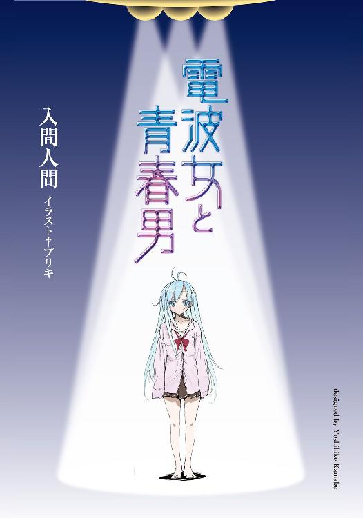

| 電波女と青春男<電波女と青春男> (電撃文庫) | |
| 入間 人間 | |
| (2012) | |

本書（電子版）に掲載されているコンテンツ（ソフトウェア／プログラム／データ／情報を含む）の著作権およびその他の権利は、すべて株式会社アスキー・メディアワークスおよび正当な権利を有する第三者に帰属しています。
法律の定めがある場合または権利者の明示的な承諾がある場合を除き、これらのコンテンツを複製・転載、改変・編集、翻案・翻訳、放送・出版、公衆送信（送信可能化を含む）・再配信、販売・頒布、貸与等に使用することはできません。
青春ポイントの話をしよう。
青春ポイントの、一度の行動による最高獲得点数は５点満点。行動の一例を挙げてみるとだ。
まず１点の行動。これは休み時間に女子と他愛ない話をしたり、学校帰りに男友達と飯を食う、言ってみれば学生生活を真っ当していれば大抵、日常的に加算されるポイントと言える。
ただし青春ポイントは放っておくと日々減退していくので、これだけではプラマイゼロになりかねない。その時その時は何だか楽しかったけど、卒業して振り返ったら特筆する思い出がなかったぜ、と後悔する可能性が高いので、現状維持に甘んじてはいけないのだ。
次に２点。これはさっきの通り、夜の公園で同年代の女子と会話するといったものが代表的か。１点行動に『夜の』とか『部活中に』といった、雰囲気と状況を加味することで加点されることが多い。１点が基本なら、２点は応用とも言える。こちらは毎日といかないが、目聡く生活していれば決して少ない機会ってこともないだろう。
続いての３点行動まで来ると、成功率にまで随分と不確定要素が混じってくる。バスケットのスリーポイントと考えてくれたらいい。ここ一番で決めるのは難しい、だけど決められればそれまでの流れさえ変えられる可能性も秘めている。果敢に挑戦したいところだ。
恋い焦がれる相手とデートするのは、十分に３点獲得の領域だ。ただ、ここで大事なのは、正式に恋人同士となった相手とデートしても、点数が加算されることはほぼないということである。あくまでも片思いか、恋人未満の相手という条件が制限されている。
ここら辺、線引きが曖昧で踏み違えやすい。努々注意されたし。
他に３点は複数人での行動、といった特別ケースも取り扱っている。勢いに任せてみんなで旅行へ行ったとか、部活の引退時に何か行うとか。ただ、ここまで点数が高まるのは稀である。
４点行為は、機会が限定されている活動に与えられることが多い。文化祭が良い代表例だろうか。ただし漠然と参加するのではなく、目的意識と、それに加えて連れ添う相手次第で点数の減点を防ぐ必要はあるが。
一方、体育祭は余程周囲の志気が高まって、熱血風潮が成り立っていなければ点数を加算することさえ難しい。運動能力は個人差が大きい為、盛り上がりきれない人が大多数だからだ。
卒業式も、やり方次第では点数を引き出すイベントと言える。感傷的な気分に、恥ずかしさを上回って浸れる人は狙ってみるのも一興だと思う。
そして５点はある意味、自己基準に大きく左右される。個々の価値観によって、「これだ！」と一つ際立つ思い出があるのなら、それはその本人だけの５点満点となっていいのだ。
異性の為に恥も外聞もなく町を駆け回ったとか、甲子園で優勝してみたとか。トラウマと栄光の混じり合う境界線を踏み続けて疾走した人間だけが、最高点へ到達出来る。
１点を獲得出来ない生活の奴は、まずこの５点の片鱗さえ見つけられない。
思春期も資本社会の中でしか育まれない、ということだ。
要領と器量に恵まれた奴は、高校三年間で20点以上の貯金を稼ぐことさえ可能だ。その貯金はそこから目先の進路、大学進学や就職先では、大した価値を成さないだろう。
だけど死ぬ間際の満足感が、普通の人とは天と地の差を生む。
人生の『過程』はその『結末』の為にあるのだから、如何に高校生活が重要か分かるだろう。
......ま、暇だったから即興で定義してみただけなのだが。
両手が動いてるのに脳味噌とは隔たりを感じていたので、つい頭を働かせてみたのだ。
しかし、段ボールにキュッと私物を詰めることに快感を伴っている俺は何フェチなんだろう。整頓フェチ？ 上下運動マニア？ 長方形信望者？
「いやー、人間はほんと分類っつーの、ジャンル分け？ が好きだよなぁ」
自分の思考に、自前の口で突っ込みを入れながら鼻歌を演奏して目玉はテレビを一瞥して両手はせっせと荷造り。段々と物が失われて寂しくなる自室の風景と対照的に俺は浮き足立っている。寝不足気味ではあったけど精神の高揚に引きずられて総合的には絶好調だった。
学園物ＲＰＧの主人公が良く辿る、両親が海外赴任→高校卒業まで後二年の息子は叔母の家へ預けられる→転校の権利を得てからようやく三日が経過して引っ越しまで残り四日間で、垂涎中な俺は今、人生の絶頂を迎えた気分。
迎えている春休みに短いと文句を愚痴らなかったのは今年が初めてだ。
むしろ新学期が待ち遠しい。
何と言っても転校先は都会である、クラスの生徒数が二十人ってことはあるまい。購買のパンのメニューがカレーパンだけってこともあるまい。ひょっとしたら学校の敷地内にコンビニとかカット専門十分千円の床屋とか開店してるかも知れない。
今まで通ってきた高校生の時間は、青春ポイントで査定してしまえば正直、マイナスだった。入学当時を零と基準にすれば、マイナス３ぐらいだろうか。日々に消費されていく、寿命に近い減点を補いきれなくて原点の維持さえやり遂げられなかった。だけど、これからは違う。
「ふははは、ふひっ」と隣人がいれば隣々人になってしまいそうな薄気味悪い笑みを浮かべて優越感に手足を痺れさせる。テスト期間解放後に見られる、緊張が溶け出す時の残滓にそれは似ていた。心地良い。三半規管が程良くイカレた、波に揺られる感覚ってやつなんだろうか。
「海、行ったことないからなぁ」都会に住みだしたら、一度は電車に乗って行って、青春ポイントを大幅に稼いでやろう。出来れば女子とペアか、無理なら男女混成グループに紛れ込んで。
小学校のときに一枚だけ貰ったことのある賞状を二つめの段ボールの底に敷いて、その上に紐で縛った教科書一式をどかどか詰め込む。「あーでも、教科書ってあっちで買い直すんかな」
ボロアパートから引っ越す時に、古い冷蔵庫どうしようかしらと悩むキューティクル女子大生ばりに首を捻って取り捨て選択を楽しむ。
新生活の場の説明には、大半の高校生がこうやって胸躍る要素がふんだんに含まれていた。
俺が寄宿する叔母さん宅は独り暮らしで、旦那さんも子供もいないらしい。しかも働いてる（まぁ当たり前だ）。それはつまるところ、俺には条件付き独り暮らしが約束されているということに他ならない。それは一言で言うなら『そんな単純に表現できるかよ』と突っぱね青春反抗期まっただ中な高二男子の喉から手となけなしの小遣いと安っぽいプライドを根こそぎ搾取する魔性の環境だった。健全な青少年の育成という大人の願いは叶えられない、捻くれ物の神龍が俺に気まぐれに味方しているとしか思えない。
無茶苦茶ウキウキしていた。穀物を食い荒らす猿より新生活にがっつこうとしている。
田舎者だからって都会っ子の徒党の逆鱗に触れて苛められるんじゃね？ とか恐怖を抱くことも全くない、いわば全裸で春のキャンプ場を走り回ってる感覚。
絶頂の絶好調だった。
荷物を重力で苛めたり反させてみたり屈服させてみたり（要約すると、かなり無駄なことをして）の四日間が過ぎ、いよいよ都会へ引っ越す日がやってきた。
二日前の、教室の壇上に登っての別れの挨拶は、流石に少し湿り気を帯びた。田舎の学校は、小学校、中学校、そして高等学校と教室内メンバーをそこまで変更せずに進学するのが普通だから、一年の付き合いだったとはいえ、顔馴染みの度合いは深い。
多少は教室をしんみりさせ、それなりに満足のいく別離の風景と空気は作れただろう。
俺との別れに公衆の面前で躊躇なく涙する女子がいたら急遽段ボール箱に詰めて郵送するつもりだったが、しかし特に誘拐犯などになることもなく今日、十五年近く過ごした土地と、電車の力を借りてサヨナラを果たした。流石に駅まで見送りに来るシンユーとかはいなかった。
両親も、一週間ぐらい前にソコトラ島だかソ連だか知らないけど行って日本を離れていたし。
ただ、この別離と未知への高揚感だけで、青春ポイントのマイナスを払拭して零に引き戻してくれたのではないだろうか。始まりに相応しい、心の水平線を見渡せる気分だ。
高校入学式の気分を、二回も味わえるのは珍しいだろうしな。
二時間半ぐらい、電車の座席に乗って揺られた。途中の一時間ぐらいは眠っていたみたいで、目覚めるとがら空きだった席の大半が客で、窓の外から覗ける景色の田んぼが人家や工場に領土を奪われていた。
耳にはめ込んでいたイヤホン（英語を使ってはいるが、この文は鼻から鼻血が出たみたいなものな気がする）から流れる音楽も、ランダム選曲が一通り終了して無音になっていた。
ポケットから取り出したｉｐｏｄを操作して、今度は気に入った一曲だけ垂れ流し続ける。もっとも、寝ぼけている所為か右の耳にしか聞こえちゃいなかったけど。
斜面の芝生に植えた花で文字を描き、社名と地球に対するエコ活動を呼びかけている会社や富士山、ついでに海を通り越すのを、寝ぼけ眼で見続ける内に目的地の駅名が車内放送に取り上げられた。
携帯電話を取り出して、『もうすぐ着きます』と登録も真新しい叔母さんのメールアドレスに送信する。電車が速度を緩めるより前に、返信が来た。『今、会いに行きます』
「.............................................」マジなのか冗談なのか、メールって受け取り方がムズカシイネ。友好的であると善処を下して、電話を仕舞った。
大半の荷物は先に叔母さん宅へ送ったから、手荷物は底がしなびて持ち手が干からびた、水洗便所の綺麗な水みたいな臭いがする鞄一つだった。
いつの間にか隣に座っていた紫髪のオバサンに足を引っ込めてもらったので会釈しつつ、座席から通路へと出る。俺が車両の扉へ向かおうとする動きに釣られてか、通路に立っていた乗客の方々も一斉に駅へ下りる準備を始める。カッペ極まりない俺はその都会人の横をすり抜ける度に一瞥をくれてみるけど、都会マークとかシールとかで田舎との差別化を図っている様子もなく、金属アクセサリーチャラチャラのオシャレさんもいなかった。
都会的な匂いもまだ嗅ぎ分けられない。高揚感が少し萎えた。
電車が大都会のホームに滑り込む。俺の地元だった駅の六倍は、ホームに並ぶ人が溢れかえっている。若干の萎縮。聴いてる音楽をピアノ曲から男性ボーカルの金切り声に変更して、勇ましい足取りの為に足踏みで事前準備を行う。電車の自動扉が開いて、俺を先頭にして転がるようにホームへと中身どもの行列が流出し始めた。
エスカレーターじゃなくて階段を選択し、改札へと上がっていく。その途中、微かな思考。
叔母さん。これから同居人となる。どんな人だろう。実は面識なし。親類を評価する唯一の情報源と言える両親からは『大供だな。大人と子供の練り物』と聞かされていた。だから携帯電話に登録する名前は『カマボコ叔母さん』と決定したわけだが、それが何をどう全体像に結びついていくんだろう。精々、ヤクルトおばさんを連想してお終いだ。
切符を通すときに若干もたつきながらも、改札を通過する。そして、左中右の三方へ生まれる人間川の濁流に呑まれないように壁際へ逃げてから、きょろきょろ探索開始。
隣で彼氏との待ち合わせをしていると思しき茶髪女子高生よりも露骨に首を振って、待ち人を探す。二十七年前に撮影したという兄妹揃っての写真を父に持たされたが、これに頼って叔母さん探しをしていたら俺は浦島太郎になってしまう。なるなら桃太郎の方がいい。
「真くん？」
俺の名前が、探りを入れる調子ながらも呼ばれる。頭の中に、幼少期のエジソンばりに宇宙からの意思（火星中継センター経由）を送るリトルピープルがいると信じて心中で名乗っておくが、俺の名前は丹羽真だ。たんばではない、にわだ。そして『しん』じゃなく『まこと』。
右に首を傾け、声の主を確かめる。三十代って印象の、清楚っぽい女性が俺の目を真っ直ぐ覗き込んでいた。目と目だけで通じ合える間柄でもないんだから、もう少し自重して欲しい。
つい、目を逸らして顔を俯かせ、口が塞がってしまう。咄嗟に返事できない。
「真くん、だよね？」
俺が口を開かないから、愛想笑い混みでもう一度探ってくる。品のある柔らかさを含んだ、少女の仕草だった。それが外見とのギャップを良い方向に作用させて、第一印象を上向きに持っていく。
「あっ、はい。ご指名の丹羽真です、どうも、いやどうも」
へこへこ頭を下げる。中途半端に謙虚さをアピールしようとして、自分のことながら腹立たしい。「暫くの間、お世話になります」慌てたように付け足した。あー、ぎくしゃく。
「いえいえ。こっちこそ、ね」叔母さんも頭を下げる。長髪が肩から滑って滝になった。
「あ、名刺とか渡しちゃおっかな」
背筋を伸ばし戻した叔母さんがハンドバッグを若干手荒に漁って、プラスチックのケースを取り出す。蓋を開け、黄金比の長方形を成立させている名刺を一枚、俺に差し出してきた。
「これはどーも、ご丁寧に」といい加減な丁寧さで受け取って、目を通す。
「藤和女々 『三十九歳』」と強引なカギ括弧で年齢表記を凹凸させていた。どうやらまだ『四十肩とはなんぞや？』という態度を貫き通したいらしい。名刺の消費期限は一年なさそうだが。
しかし......事前に聞いてはいたけど、下の名前......変わってるな。
「これ、とうわ......芸名か源氏名、通り名にリングネーム、ついでに大穴で内なる２Ｐキャラのこの世界で通称する為の仮名って線もありますけど」「本名なんだな、これが」
軽い調子で言葉の節々から若者っぽさの原液を滲み出させようとしているのが伝わった。それは知っているけど、読み方が『メメだったかジョジョだったか』と説明あやふやだったし。
俺の困惑を察したのか、叔母さんが自分を指差して自己紹介を補足する。
「トウワメメ。ジョジョって呼んでくれてもよくってよ」
叔母さんがウインクして皺を増やす。口走れば生命線をずたずたに切り刻まれそうなので唾を飲みこんで事態への対処に一拍置く。名刺も見直す。
名付け親の趣味全開ってことだけは伝わるな。ネットで検索してこの名前が本名として引っかかったら一笑に付すところだけど、当の本人が目の前にいるんだから口を裂いて勇気を振り絞って対話に持ち込んでまで馬鹿笑いなどしたくない。
「はー」とか感嘆の息を吐くふりしながら、名刺を財布に仕舞って移動の指示を待った。
「それじゃ、今日のところはタクシーで家に行きましょうか」
「あ、はい。贅沢ですね」当たり障りのない台詞ばかりが口を出る。追々、慣れるだろう。
女々さんのにこやか笑顔とテキパキ挙動に先導されて、道路を一つ挟んだタクシー乗り場へ向かう。その途中も、自前の髪を手の平で撫でながら女々さんが話しかけてくる。
「電車、長く乗ってたから疲れたでしょ？」
「はい。こっちの方に出てくるの、中学の修学旅行の時以来ですから」
「そっかー。真くん、今高二だっけ？ おっきくなったなぁ」
「そうです。高校って叔母さんの家から近いんですか？」
「うーんと、自転車で十五分くらい。あ、叔母さんの運転でだから、真くんならもっと早いかな」
などと五分後には綺麗さっぱり忘れ去りそうな、無味に限りなく近い会話で道中を埋める。ただ印象的なのは女々さんの、親密でも疎遠でもない独特の口調だ。粘り気が若干増加されたぬるま湯とでも言おうか、居心地は悪くないのに妙に足下が不安になる。
「へーい」と乗り場で停止している緑タクシーに向かってわざわざ手を振る女々さん。不覚にもちょっと可愛いと思った。だけど俺に年上属性はないから、遠くで信号待ちしてるさっきの女子高生と彼氏を眺めてあのスカートのくねくねしたとこが堪らないなぁとか思ってなんか色々と回避したり抑えたりした。馬鹿じゃねーの、と呟くのは別に却下せずに。
タクシーの後部座席に乗り込む。女々さんは助手席の方に乗り、ごま塩頭の運転手に行き先を告げる。早口で、第三者の俺には覚えきらない。深々と座席に座りこんで、重い瞼を目で擦った。ていうか、何で叔母さんは二人なのに助手席に乗り込んだんだろう。
何故か助手席に座る女々さんは振り向いてまで俺に話しかけることはない。まぁ、話しかけられても道中の風船会話が膨らみもせずに中途半端に視界の端を行ったり来たりするだけだろうから、ありがたい。
両親に地元の大学へ行けって高校入学早々に言われてたから、成人するまで半ば諦めてた生活様式を棚からぼた餅に手に入れて、女々さんに感謝はしているけどさ。
俺はこの都会へ疑似独り暮らしを求めているのだ。青春ポイントの培養、もとい増加に適した環境だからな。この二年での目標として、貯金15ぐらいは狙いたい。
高層ビルの並ぶ駅前から外れた道を十分ぐらい進んで、適度に人家が増えた土地に入る。それでも緑が少なく、金属の目立つ風景なことに多少驚いたり。
都会の匂いは、金物臭そうだ。土臭い地元よりは色々期待できそう。
などと格好つけてほくそ笑んでいたら、ルームミラー越しに女々さんと目が合う。
若干、気恥ずかしい。
そして、道路の頭上にある地名の掲げられた看板を通過した瞬間、女々さんがくるっと愛嬌たっぷりに振り向いて、
「ようこそ、宇宙人の見守る町へ」
「......はい？」
にこやかに、逆敬遠したくなる歓迎をされた。
ほんわか放射線状にひび割れた発言が一部混ざっていたと鼓膜は脳へ伝達する。
しかしタクシーの運ちゃんの走行過程に一寸の乱れもないことから、俺の聞き間違いの可能性も否めない。ここは、素直に唖然としておいた。
「あれ、ちょっと引いた？」女々さんが作り笑いを浮かべ、目を丸くする。
「突拍子のなさに好反応することが出来なかっただけです」
「ここ、ＵＦＯの目撃情報とか多いのよ。フロリダ州的っていうの？」女々さんの釈明。
「はぁ」あ、そういうことと納得はしつつも、ひょっとしてこの人はエイリアン信望者かな、と疑念渦巻く。ＭＭＲ直撃世代かも知れない。
そして宇宙に俺の青春はない。右肩上がりの予定のポイントが、先端を萎れさせかけている。
「七次元キーホルダーとか昔ながらの駄菓子屋さんで売ってるから」
「それだけの科学力を三次元でこぢんまり活かそうとする商売姿勢が理解できません」
そして宇宙人と次元は関係ありそうな単語ながら、全く接点なし。エレクトロニックとレトリックぐらい違う。
「これからこのまま家に戻るけど、今日は近所を歩いてみたりする？」
女々さんがこれからの予定を、確定した部分を話して未定の箇所を確認してくる。俺は「ん、どうしよ」とこめかみを指で掻いて、考える時間を返答の前にねじ込む。
「歩くなら、簡単に道案内とかしちゃおっかなって」
次いで、親切を微かに塗ってくる。指でなぞれば簡単に払拭できる、後腐れのない量。
「今日は荷物片付けてますから......家にいようかなって」
家の前に『叔母さんの』とつけようか迷ったけれど、結局は簡略で返した。事前に他意を含ませたわけじゃないけど、結果として親しみが増したかも知れない。
「りょうかーい。じゃ、夕飯は家で一緒に食べましょうね」
女々さんは笑顔を、身体を前に戻す直前まで引っ込めなかった。
それからタクシーは五分ぐらい、市内の内臓でも走るように道を流れていく。
「あ、ここです」女々さんの指示で、目印のないような平凡な位置でタクシーのブレーキがかかる。後部座席の左の扉が独りでに開き、俺は先に下りる。料金メーターを一瞥すると、俺が両親から与えられていた小遣いでも二回は乗車出来る金額だった。そういえば、これからの新生活は小遣いどうなるんだろう。
やっぱし、バイト？ というか俺の両親は女々さんに仕送りとかしてるのだろうか。
「はい、ここが真くんの第二の家よ」
料金を支払って俺の隣に並んだ女々さんが、にこやかに情報を上書きする。親戚の叔母さん家ではなく、マイホームとして扱えと言っているのだ（図々しい）。
しかし、俺の新しい生活の拠点は見上げても、色々特筆したいのに自然と書き出せる要素が少なかった。
ふっつーなのである。写真に撮ってご町内の至るところに張り出せば『まぁ、素敵でクリアランスな豪邸』とか評価を受けずに『カルト？ ねぇカルト宗教？』と不気味がられる、中堅に纏まったお家なのだ。まぁそれは表面上だけで、中は忍者屋敷みたいに回転扉とか実生活では迷惑極まりないだけのギミックに溢れてるのかも知れない。
「さ、入りましょ」「はい。......えっと、よろしくです」
家に入る前に、改めてご挨拶。息子の態度がアレだと両親の教育が疑われるからな。
「これはご丁寧に」先程、俺が発した文章内容をコピペしたみたいに、言い方だけ整えて女々さんが再利用してくる。
「こっちこそよろしく。ほんとごめんねよろしく」
早口で返事をされた。......ん？ 何だか謝罪みたいなのも混じっていたような......。
ああ、こんな立派なお屋敷でごめんってこと？ ちょいと自信過剰だなぁ、多分俺が。
俺の疑問解決など待たない女々さんが和風の戸を横に滑らせ、玄関に呑まれる。俺も続いた。どんな生活の匂いがするかな、と鼻をひくつかせると......と、と、と。
「ただいまー」
女々さんが靴をするすると脱ぎ、軽やかに家へ上がる。......ちょっと待って。
スリッパ履く前に、
俺の名を呼ぶ前に、
爽やか笑顔の前に、
気にかけることが、あんたの足下にあるだろう。
足下に一直線に引かれていたはずのスタートラインが、ぐにゃりと歪んだ気がした。
「真くんも一回、言ってみて」
しかし俺の強い視線を受け流し、現金払いしたくなる笑い顔で歓迎の意を示す。
世界のピントが一気にぼやけだした。
「......え、ああ、はい」と返事すつつ、目線ば右下に釘付けですばい。
田舎に住んでたのに上手く田舎言葉が喋れず、角張った訛りになる。それはどうでもいいけど、しかし......こう。玄関上がってすぐのカーペットの脇にいる、ある？ のがさ、なんか。
......嫌な予感で、遠足前のようなワクワク感がもっさりし始めたのはここからだった。
写真で見ると異常に可愛い犬を直接見たら、『何だこのチンチクリンは、ノミが飛び立ちそうじゃないかキミィ』と抱き上げるのを拒否せざるを得なかったときの気分だ。
夢の新生活にどっさりと『現実』を運び込んできたもの。
俺がこれから嫌々学校へ行くときに見送り、遊び疲れた身体を引きずって帰ってくるときに出迎える愛しき我が家の玄関に、
なんかちくわみたいなのがいた。
地球上の何処にいても浮いてしまうファッションで着飾ったというか呑み込まれて。
寝転ぶことへの躊躇いを全てねじ伏せ、伸びきった足の裏。
思わず踏み潰すか蹴り飛ばしたくなる、衝動の中枢を刺激する丸まり具合。
「.............................................」
玄関の濁り硝子越しに降り注ぐ春の日差しが、粘る汗と軽い寒気を背中に生む。
青線が額に生える感覚が、肌の上を踊った。
俺の青春ポイント、マイナスに返り咲き。
横たわるちくわモドキは微動だにしなかった。
或いは電源を切った電動コケ（言い切るギリギリで略に成功）。まぁ略っつーか文字数大幅増加してねぇ？ と思わんでもないが、俺の現国の成績ではこんなフォローが限界だ。何せ本文の主旨を百文字以内に纏めよという設問に『作者の自慰行為』と書いてその夏一番のハネを答案用紙に頂戴したからな。あれは手首のスナップが効いた、素晴らしいＶの字だった。
「さー、散らかってませんからどうぞ上がって。昨日ちゃんと掃除したのよ。でも狭いのは勘弁してね」
女々さんがおどけた風に、玄関で突っ立っている俺を招き入れる。けど俺の足は、家主の足下に転がるトラップめいたものを警戒して動こうとしない。田舎者が都会へやって来たときに精一杯詰め込んできた期待の感情にひたすら青線引いたり、入れ物の殻を割ってこようとする何かがその転がりっぷりから感じ取れる。
そいつは、二の腕付近から頭頂部まで、上半身のほとんどを羽毛布団で簀巻きにしている物体だった。床に無造作に転がっている。洗濯紐みたいなので布団を外から縛り、ちくわにはまったゴボウみたいに残りの身体を外へさらけ出している。いやそれが普通なんだけどさ、間違いなく。ちなみに布団の柄は菖蒲だった。本人は何と勝負してるか分かったものじゃないが。
中身の人間の視界は完全に塞がれていることだろう。布団の生地だけが世界だ。当然こっちからもそのご尊顔を拝むことは叶わない。一瞥だと、置物の域に達した不動さを維持してるし。
ただ注意深く観察すると、細い素足の小指が微かに開閉している。女の子......なんだろうか。ワイシャツの端みたいなのとスカートが服装として確認出来る。そしてどうも生命体のようだ。
全体的に線が無茶苦茶細くて、冗談でも足を蹴ったら重度の傷害罪が待っていそうだった。
「んー？」女々さんがめっちゃ可愛らしさを意識して小首を傾げる。その曖昧な微笑みに、思わずこっちも引きつり笑顔を浮かべることを促されてしまう。
「んもー、遠慮してるの？ そーいう他人行儀なの、よくないゾっ！」
どったんと一跳ね。ちなみに今の台詞は、ウインク付き。ドライアイ光線発射！ とかそういう吹き出しが中空に浮かびそうな魔性を秘めた振る舞いだけど。
「..........................................えへは」
「あら、似合わなかった？」澄まし顔で恥の概念なく尋ねてくる。
「いや......まぁ」十五年前なら色々釣れたんじゃないッスかね。
「それでいいのよ。叔母さん、ギャップ萌えキャラ目指してるの。知ってる？ 萌えって」
「健全な高校生活の為に知っていたくないです」
「叔母さんなのに力道山を素手で倒せる！ みたいな人のことよ」
「そうじゃねーよ」突っ込める自分が些か悲しい。「そんなマイクロすぎる属性を狙い打ちしてどーする......プロ打者が魔球にしかバット振らないようなもんじゃねーか」
打率最悪だ。絶対クビになって、夢は閉ざされる。
もうこの際、俺も簀巻き布団の物体を無視することにした。「オー、ビューチフルハウース」とか褒めちぎって板張りの廊下を歩く。「オー、エキゾチックガラス戸ー」ぺたぺたと触る。
ガラスに淡く映った俺の顔面は、随分と瞼が重そうになっていた。
「真くんの部屋は二階ね。階段上がって、二つある部屋の手前」
「うっす」話を聞きながら玄関を振り返ると、まだ物体Ｘは無造作に転がっていた。ウケ狙いであんな五流の仮装に身を包んで玄関で俺を待ち伏せていた家人だったら、無視されたことに怒って俺を追いかけ回してきたりするかと思ったけど、そういった反応は一切引き出せない。いやそもそも、叔母さんは独り暮らしだと説明されたはずなのだが。どういうことよ。
事と次第によっては、生活環境によって養われようとしている青春ポイントの種から、光を奪われかねないぞ。
「何か不都合あれば言ってね」
本当に言っていいんだろうな。丁寧語とか省いてマシンガントークすんぞ。
「いえ、住ませていただければ満足ですよ」
心中のざわめきを取り繕うように、口が爽やかに社交辞令でごまかす。
結局俺は曖昧な態度で階段を上がり、振り向こうとはしないのであった。
玄関から、嫌な予感が影のように俺について回っていた。
それから、未開封の段ボールだらけの部屋で二時間ばかり眠った。
アスパラのベーコン巻きみたいな布団簀巻き人間が気にならなかったと言えば嘘になるが、気にしないと決めた以上は「俺も布団にくるまる！」と対抗意識を燃やして眠りに落ちてみた。
過程と結末に、取り立てた虚偽が混ざっていないのが些かもの悲しい。
ベッド（ていうか現段階では多少柔らかい板）の寝心地は精神の不安定さに比例して最悪で、浅い眠りを何度も繰り返して頭痛まで発症した。額の寝汗を横着に拭って一階へ下りると、丁度夕飯が用意されていた。
......ただし、なんか別のものも準備万端というか。
「今日は奮発してみました！」色とりどりの料理を前にはしゃぐ三十九歳。
「......おー」右の眼球ちらり。
「明日からは平日の夕食一緒、っていうのは難しそうだから。真くん、料理は出来る？」
「ああまぁ、包丁使わない料理ぐらいなら......」汗たらり。
「あはは、男の子だ」
拍手を二回打たれる。何か過程は不明だが気に入る要素があったらしい。
「どうしたの、目がきょろきょろして。何か気になる？」気にならんとしたらあんたは菩薩か？ 悟りを何回開いて脱皮を幾度繰り返せばそこまで世間に無関心になれる？ もう現世に生きちゃいねーよそんなの。
先程の布団が今度は縦になっている。それ以外のタンパク質は女の子座りで食卓を囲んでいた。
「見えてはいけないのか見てはいけないのか、悩ましいものが右端に少々」
「幽霊って必ず左端から出てくるそうね」
「そんな科学とスピリチュアルの境界話を夕餉の華に添えたいわけではなくてですね......分かりました、回りくどいことは苦手だから、はっきり言います」
「ああもう求婚？」
「誰がヒヤシンスの話をした！」意識的にキレて無理矢理単語を入れ替えた。実はこの家に婿として呼ばれたのではないか、という微かな疑念も振り払って俺は正座を崩す。
「叔母さん、貴女は俺に嘘を吐いています」
礼儀知らずに、人差し指を目上の人間へ突きつける。ひょっとして俺は騙されたのではないか、と家賃三万七千円２ＤＫの部屋があると不動産屋に紹介されて喜んで見に行ったらアパートの隣が断崖絶壁に等しい場所だった時の大学生ばりに怒りを燃やした結果、不躾な態度を優先することになったのだ。
取りかけていた箸を箸置きに戻して、女々さんが頬筋肉の使用度合いを変更して笑顔を作り替える。
「嘘。真くんが嘘を暴く。なんか字面にしたら格好良さそうね」
「あ、確かに」一瞬、和みかけた。俺探偵向いてるかも。......ではなくて。
「叔母さんは、独り暮らしではありません」
「な、なんだってー」スーパーいい加減に驚いてくれた。
「どーいうことすか。もう空腹なのにちょっと背伸びしてご立腹ですよ」
「それはそれは、胃痙攣を起こしそうな努力の結晶を抱えてるのね」
女々さんがまるで深刻さを伴わない対応で俺の言葉を床に落下させる。
いや、俺もシリアス濃度限界で遺憾を表明してるわけではないのだが。
「私が嘘を吐いているという証拠はあるのかしら？」
「証拠......？」裏拳で布団の前面をぶっ叩いた。「はい証拠」
ごてん、とサンドバッグもどきは後ろへ素直に倒れる。そして即座に足の指に力を込めて踏ん張り、上体を起こしてまた直立布団に復帰した。どうやら亀の親戚ではないようだ。
「あらまぁ」証拠の上下運動を一部始終眺めての、叔母さんの無難な感想。
「遠回りなのは苦手なんですよ。何ですこれ」
「それを語るには少し遠回りに話をしなければいけないわ」
こっちの話を聞いた上でからかわれると、喧嘩を売られたのかとつい錯覚してしまう。しかし自分の小心なところは、相手が女性だからつい強気に振る舞いたくなってしまうところだと思う。ちょっと傷心。
これが『牛三郎』とか名が体を後付けしたような筋肉さん（でも裏ではぬいぐるみとか好きみたいな設定持ち）に絡まれているのだったら、俺は愛想笑いで目を逸らしながら「ごめん、ほんとごめん」と教室でヘタレ王にのし上がるところだ。
「えっと、じゃあまぁ説明よろしく、これの」
もう一回、軽く叩いてみる。今度は倒れないものの、やはり中からの反応なし。中に入ってるのがマネキンとかだったりして。
もしそうだったら今度は叔母さんのインテリア趣味を疑う羽目になるが。
そして『独り暮らし』は『奇妙な家での生活』となり、核戦争後の世界ぐらい光が射し込まない毎日を送る羽目になる。ポイントの定期消費が今までの倍以上になること請け合いだ。
女々さんがこほんと咳払いして、「千九百年代の始め、アメリカのとある田舎町に黒雲のようなものが」「そういう前振り抜きなら何分で済みますか？」
すかさず省略を求めた。女々さんは「若いっていいわぁ」と動じない。
「事を急いても若さって一言で好意的に済まされるものね。叔母さんがスーパーの安売りに群がって特売品を買おうと頑張ったら冷めた目で見られるもの」
「それは目の血走り具合に差があるのでは......」遠い目をしたので何故かフォロー係を果たす俺。いかん、また話題が脱線しようとしてる。どんだけ脱輪しやすい手抜き構造なんだ。
「とにかく、ナスが一袋十五円だろうと挽肉のタイムバーゲンが愛おしかろうとそんなことは一切合切関係なく、俺が問題なのはこの、」こんこんとトイレのドアをノックするように布団を指で打つ。「あ、お料理冷めちゃうわ。まっきゅんはよ食べんとあかんねよ」「うっさいわ！ それに後半は何語だよ！」
テーブルに手の平を叩きつける代わりに、布団を打つべし、打つべし！
もはやストレス解消法にシフトしかけていた。調子に乗ってワンツーとか決めてみた。
そしたら、しっぺ返しがあった。
「いって！ のぐあ！」テーブルの下で何者かに向こう脛を襲撃された。ガシガシ蹴られた。跳ねた膝をテーブルの下にぶつけながら身体を引き、上半身を屈めて正体を確認する。
「のあ！」仰け反る。小さなおみ足が俺の額を蹴り飛ばそうと飛んできていた。そしてそれが布団から生えている足であると理解し、同時にそれが意思ある反撃であったと納得する。
「ま、」マネキンじゃなかった。肌が人間っぽくないからつい油断してたぜ。
「ひぃひゃのは四度の原ない接ひょくにひゃんひょうし、防ほぉひのうがひゃららいたの」
「は？」布団の中で何かがもふもふ喋った。はっきり言って、日本語の骨が取り除かれすぎ。
「パードゥン？」口がもごっていると思わしき部分へ耳を寄せて、リピート希望。
「ひぃひゃの」「あーもういい」諦めた。人の足を蹴ることに追随した台詞なんて、どうせろくでも大したことでもないだろう。大事な点である、『こいつは喋る』だけ理解すればいい。
まだテーブルの下では、千葉某所のドリームランドにあったアトラクションの海賊船みたいに足がぶんすかと振り子運動を描いている。視界が閉ざされてるから、狙いが大まかにしか定まらないと思われる。人生含めて見失いすぎだと思われる。
「本ひつの意ひきと意ひふぉ見失ひなっひゃうひょーむひょーひょかんさづうったいがひやすくわたしにふへふのは許はれない」
意味が分からん。内容以前に何言ってるかがさっぱりだ。言葉に布団を通すのは個人の自由で結構だが、翻訳機も通過させて欲しい。それかコンニャク食え。
「原ひはふしゅうようひゃいであう責を見失っは蛋白ひふのひゅう合体、それがあなたたち」
「.............................................」
布団を見つめる。収まりかけた頭痛が首の裏側付近からせり上がってきた。諦めた。真剣に考えると俺の前途ある（んだよ）前頭葉が現実にキャトルミューティレーションされかねない。
「すいません、訳してください」
頼れる美人の叔母さん（憧れキーワード三種合成）に救援要請。
「はじめましてと言ってるのよ。私の娘、藤和エリオが」
あんたの翻訳力は人の話を聞かないという条件付きで名人級だな。
「......娘？」血縁者。家族。ノット独り身。
青空を描いた水彩画に、黒油性ペンで点々をつけまくられたこの気分。拳が震える。
「娘ってなんですか！」
「マイドーター」
「突っ込みづらいんでもうちょっと文章量を増やして会話してください！」主旨違っとる！
「そしてユアドーテー」
「うっせえよ！」田舎は出会いが少なかったからやむを得ないんだよ！
言い訳だけど！
「独り暮らしはどうした！」夢の肝の部分へ、勢い込んで詳細を求める。
「独りで暮らしてる風な態度を、真くんに会ってから一環させてみたじゃない」
悪びれもせず、かといって悪戯笑顔を備えることもなく、淡々と返答してきた。
「あ、えーと、......」一瞬、毒気を抜かれる。場の流れの脈を軽々と袈裟に切って、女々さんは追撃を加えてくる。
「何かご不満？」
「いやそれはまぁ、何で見ないふりしてるんですか、とか......取り敢えず、お前はしつこい！」
猫除けのペットボトルより頼りない自家製防衛システムを未だアンダーザテーボーで作動中の布団と足を纏めて手の平で押すと、見事に後ろへ転がった。ていうかパンツ見えた。
しかし色めき立たない。下着衣類販売店のマネキンが穿いてる薄ピンクの下着を見るだけでいたたまれない気分になる高校生の俺でも、布団のパンツなんぞ見たって布の延長じゃねえかと冷めた気分で受け止めることしか出来ない。色はサンライトイエローだった。
だが俺の目の前はコバルトターコイズグリーンだ（技名っぽいから何となく覚えた）。
転がった布団こと藤和エリオは「もふほふほふ！」とか何やら叫んでいるが、さっぱり要領を得ない。玩具を買って貰えなかった子供が支離滅裂に泣き叫んでいるのと大差なかった。
「くそう......違う、何かが違うんだぁ」夢は遠くで見てるから綺麗なんだ、と何かが耳元でほざき、絶望の息吹を鼓膜に吹き込む。青春ポイント、マイナス２。
今にも上半身が机上に滑り込みかけそうになっている。俺の独り暮らしはこんなに騒々しくない。ていうか独りじゃない。思わずそんな歌詞あったなぁと歌い出しそうになったが、続きが思い出せなくなってハミング状態に移行しそうだから止めた。
「ねー真っち」「っちって......」諦めろよ、ギャップ萌え。無理して肉離れ起こしそうだから。
「話を続けていいかしら？」「何ですか話って」
俺は昔のお札の偉い人じゃないんだから、これだけぶつ切りになった話を全部覚えちゃいない。というかどれもこれも、話というよりネタ振りみたいなもんだ。
「いなくなった夫の名はジョージ、妻の名はマリア」「何事もなかったようにヤオイさん話を続けないように」
「あれ、真くん世代だとこれ知らないのかな？」
『干支が一回り以上してる人間に同じ話題が通用すると思うなよ！』←本音。
「ええまぁ」←建前。
仕方ないのだ、ここは日本だから。
俺のやさぐれっぷりに女々さんの笑顔が光度を増す。歯の白さが三割り増しになる。
歯茎の美しさは二十代だと素直に思った。どうでもいいけど。
「あは、真くんと初日からすっかりうち解けてしまった」
「本当にね」既に丁寧語を使う意思が削り取られて骨格を残すのみとなっていた。
「もがもがもぎ」足をまだばたつかせて背泳世界一でも勝手に目指していて欲しい奴（ていうか叔母さんの娘だから、俺のイトコか）は新たなる同居人にパンチラサービスしすぎだ。
でも布団なのでときめかない。発言も不穏当だったし。今も辛うじて聞き取れる単語はアトムだかピーコだか、正直単語だけだと何のこっちゃな内容ばかりだ。
「これからは家族二人で仲良く暮らしましょうね」女々さんの脳味噌が何か言い出してる。
「その数字のカウント方を説明してください」
際限なく膨れていく疑問と突っ込みポイントに対処しきれず、目の前を通り過ぎる最新の不明点にだけ反応するようになってしまっている。虫が眼前を通りがかるのを待つカエルみたいだ。不思議と頭痛は和らいだけど、叫びすぎて喉が熱砂を押しつけられたように熱い。
「大体あのコロネみてーなのは？ ......娘、なんでしょ？」
「ん、ああ、あれ？ ノーカウントで」爽やか笑顔でバッサリ切り捨てた。
どんな親子だよ、と尋ねたところで「気にしない気にしない」と流されそうだから触れようとはしない。というか踏み込みたくない。親戚の知らない娘がいたとか、何だか凄く厄介な事情がありそうじゃないか。何で俺の親とかにも隠してるんだ、っていう疑問は膨れてるけどさ。
「あ、じゃあ旦那さんとかも、」首を振って周囲を探る。
「いやだから夫の名はジョージであってですね」いつあんたの名前はマリアになったんだ。
「自我とひょく望をかふ大したひゅうせいひのわいとくひゃにひゅうせいプフォグラムをひゅう入！」
繊毛でもぞもぞ地を這う虫みたいに全身をくねらせて近寄ってきていた簀巻き女が、足をダバダバさせた。空気のペダルをこいで実利が絶無な攻撃を俺と叔母さんが憐れんだ瞳で晒し者に仕立て上げる。竹槍で爆撃機を打ち落とそうとする人たちを遥か上空から見下ろすパイロットの気持ちが身に染みた。
だが簀巻き女の足指の付け根がテーブルの端を捉え、「ひょっせーい！」とダイナミックに釣り上げたことで状況は一変した。
その一本釣りぶりに、飛沫の幻影を見そうになる。
まぁ、それどころではないから割愛したけど。
生物の進化は重力を克服する為に芽生えた。
叔母さんの作った料理も、どいつもこいつも出来損ないの羽根が生えて、飛び立つ。
そして、待ち受ける堕落。
がっしゃんがっしゃん割れた。夏場の料理屋の入り口にかけてある風鈴を無意味に鳴らしまくるより騒々しく、耳に傷を作る雑音。
「きょぇぇぇぇぇぇぇぇぇぇ！」謎の奇声でその現実の落下を見届けるぼくの叔母さん。
何を蹴ったかさっぱり理解していなさそうな防衛機能の要は、激突の痛みに足を丸めて悶え転がっていた。「のぉぉぉぉ」とか演技っぽい台詞を捨てて苦しがっている。
誰かが幕を下ろして、世界を暗転させることを切に願った。
その日、その後の記憶はない。
優秀な科学者が機械で脳細胞を消去してくれたんだろう、と無理のあるフィクションに現実の辻褄合わせを頼った。不思議とポイントが３ぐらい減点されてるのが、何故か切なかった。
若干すぎる問題を残しながらも、翌日の朝から学校は始まり、俺は転校生となる。
炎はいらない。謎も伴わない。爽やかに良い奴であろう。
疑似独り暮らしを諦めた俺に残っているのは、健全で円満な高校生活ぐらいだった。
少なくともこの家よりは、点数を稼ぐ機会が学校で待ち受けているだろう。
中にシャツを着込んでから、女々さんに用意して貰っていた新しい制服に袖を通す。少し丈が長い。成長期だから、という要素と期待が含まれているのだろうか。
服装を軽く正してから、真新しい学生鞄を引っ掴む。光沢はあるが、始業式だから薄っぺらい。教科書の確認は、担任に必ず聞いておかなければいけない。
鞄を脇に抱えながら、部屋を見渡す。昨日の夜から始めようと計画していた荷物の整理は何一つ準備期間を終えていなくて、休日に着る私服もない有様だった。
「......昨日のことは忘れよう」そして独り暮らしへの憧れも、再度封印。
洗面所で髪型でもいっちょ整えてみっか、と新たなる出会いに期待して部屋を出る。杉板の通路に出て、階段へ向かう前にふと、左に並んだ部屋を覗いてみた。襖は開けっ放しだ。
「......はー」
机には手作りっぽいプラネタリウムがあり、高額そうな望遠鏡が部屋の隅にあって、宇宙大好きっ子の少年みたいな部屋が広がっていた。あ、すげぇ。ボールチェアがある。実物を見るのは初めてだけど、これって何十万とかするんじゃなかったっけ。
それにしても、女の子の甘い香りじゃなくてお香の匂いがするぜ！ とかそんな紫立ちこめる部屋を想像していたので、少し拍子抜けだ。
ただし本棚に並んでいるのが『波動の法則』とか『顕在意識とエクサピーコ』と日常から剥離した内容なのは不安を煽るが。後は壁に、何処かの町の地図みたいなものがかけてあるぐらいで、新興宗教への呼び水となりそうなアイテムは、少なくとも表立ってはいない。
そしてその布団を巻いた奴は当然のように床に寝転がっていた。
死骸の中に潜り込んで生活する、深海のウナギみたいに布団へ上半身を突っ込んだ生物は、小さな足の裏をおおっぴらに見せながら一切の身動きを失っている。
ただいつの間にか服装は一身され、紫まだらのパジャマであんよを防護していた。個人的にはその僅かに覗く足首に縄を巻きつけ「うふわはは」と市中引き回しの刑に処したいが、フェミニスト団体がうるさそうだから中止せざるを得ない。もっともこいつをこの状態で遠巻きから見て、性別を当てるのは困難だろうが。
地味に布団の柄も、菖蒲から梅の花とウグイスへ更新されている。
年齢は幾つなんだろう。学校は行かなくていいのだろうか。壁にアイロンの効いた制服がかかってるし。ま、どうでもいいけど。
「うーむ......」冷静に事態を捉えれば、女の子と一つ屋根の下で生活するってことなのかなぁ。
ある意味、思春期男子の妄想の終着駅ではある。空から女の子が降ってきたりとか、そういうのより微妙に生々しいからタチが悪い。完全に諦めきれず、脳味噌への癒着が酷いのだ。
「でもなぁ......」これじゃあなぁ。ポイント加算は厳しい。ちくわに雌雄はねーべ。元の材料にはあったかも知れないけどさ、わはは......もう行こう。無理にちょっかいかけて起こすこともあるまい。
昨日は猛り狂った母親にジャイアントスイングされて襖に人工ロケット誤射されてぶちかましの稽古を強制的につけさせられてお疲れだろうし。......いかん、記憶が蘇りかけた。早めにフィクション処理かけとこう。あれは俺と次元の違う出来事だったのだ。
フィクションとノンフィクションって、つまるところ三次元と二次元の違いみたいなもんだろ。昨日のドガグシャ騒ぎ（狂騒の中、最も多く耳にした効果音二つをくっつけた）は三流ギャグ小説の三ページぐらいを目にしたのだと、空想力豊かな俺はそれを頭の中で勝手にフルカラー妄想し、その五分アニメは絶好調放送して見事に打ち切られたのだ。
早足で布団と部屋から逃げ出し、階段を下りる。最後の二段は飛び降りて、少し派手な音を立てて着地する。静寂に包まれた屋内は新鮮な振動を咀嚼し、ガラス戸が微かに喘ぐ。
洗面所の前に女々さんがいれば挨拶しようと家の中を巡る。まずは台所だ。本音を言えば朝ご飯なるものを所望していたから、淡い希望に縋ってみた。
だが台所は赤きサイクロンが通過したままだった。荒れ放題で、足を踏み入れる為にはそこに根付いた無法者に入国許可証的なものを要求されかねない。お片付けの時間はどうした。
机の真ん中に、料理と皿の残骸を無理に押し退けて作った空き地っぽいスペースが出来ていた。そこにメモ用紙二枚が文鎮プレイに勤しんでいる。お楽しみのところ悪いが、メモ用紙を文鎮から奪って身体をなめ回すように凝視した。
一枚は、この家から学校へ向かう為の地図だ。簡易な絵を用いず、全て文字で表現しているのは少々新鮮だった。家の森があり、『どうーーーーーーーーーーーーーーろ』と長い一本道を視覚的に頑張って表現している。不親切なＲＰＧのヒントよりはマシな程度のナビ能力だ。
後、もう一枚は死ぬほど角張った字で（止め、ハネが直線の部分にも最低二回はある）恐らく俺当てへのメッセージが記されていた。
『ご飯と片付けはユアセルフ。今日も世界平和の礎としてがんばっろーっ★』
こっちは綺麗に握り潰して握力測定に利用した。流石叔母さん、合理的だぜ。
「伊達に歳食ってねーな」
あの人と恋愛フラグ立てる気はサラッサラないので、そろそろ出番は減少するだろう。
さぁ、同級生その他への第一印象の為に、鏡の前で悪足掻きしようか。
「うーん......」中の......上の、更に中。鏡の前で、容姿を自己評価。
客観的に判断出来ていれば大したものだけど、恐らく多分に主観混じりだろう。
前髪を弄り続けて、ちょっと赤が目立つニキビを化粧水でごまかそうと必死になった七分三十秒は、俺に高校一年生の時の冷静さを取り戻させてくれた。
女々さんのメモにあった追記指示に従い、外の納屋に放り込まれていた鍵つけっぱなしの自転車を引っ張り出して埃を払う。各パーツは入水事故でも起こしたように錆だらけで、鈴を鳴らしたら小さい虫が、海の岩場のフナムシみたいに隙間から一斉に飛び出せ青春してうえーって目を背けた。
もしかしたら、こいつは件の簀巻き女が使用していた代物かも知れない。
「......んー？」でもこの自転車、どっかで見た記憶が......錆の奥に控える、赤色と白色のカラーリングとか。んー......まぁいいや。大したことでもないだろ。
試乗して、二つの車輪はどうにか回るのを確認してから、もう何事にも期待しすぎないようにと、奥歯を噛みしめながらチャリンコをこぎ始める。大体、昔から期待のレベルが高まるほど、直面した現実が薄汚れていることを目聡く発見してしまうのだ。がっつくの良くない。近眼になろう。霧のかかった生活でジメジメしてキノコ大好き、これに尽きる。
荷台に貼りつけたオバＴ（地図。ん？ Ｃか？）を時折確かめながら、『どおーーーーーーーーーーーろ』をジャカジャカうるさい稼働音と一緒に駆ける。よくよく見ると『バグ技使用による強制ルート』と『ワールド４─１へのワープゾーン』のあるこの地図を何処まで信用すればいいのか、という感じだが期待しないと決めたのだから、つけばいいやとお気楽に構えることにした。
家の森を、自転車の脇を削るぐらいの細道利用で抜けて、大通りの方へ出る。自動車と人間の数が爆発的に増加した。思わず細菌爆弾がぶちまけられたのを幻視するほどだ。
三階以上の建物が当たり前のようにそびえて、道はめっちゃくちゃ太くて広いのに、それでも窮屈そうに人の流れが進んでいる。俺と同じ制服を着ている高校生もいたし、違うのを着用している女子高生もいた（当たり前だ）。
途中に通りがかる自家製おにぎり屋とかミスドで簡単なものを摘みながら友達とだべってる高校生の姿も散見される。必ず自宅でカーチャンの朝ご飯を食べてくる田舎の学校とはえらい違いだ。都会だなぁと、正しくカントリーな感慨に耽ってみる。
しかもギアの可変とか小賢しく素敵な機能のない赤粉ママチャリはあっさりと他生徒の自転車に追い抜かれて、一瞬、怪訝な表情で振り向かれる。俺からは逆光でその表情が覗けない。
何だかさらし者みたいで、首を引っ込めて出来るだけ早くペダルをこいだ。
その途中、あの簀巻き女が部屋に飾っていた制服を着ている女子高生集団がいて、それがどうやら俺の通う学校の代物であることを理解した。
累計で十五分ぐらいかかったが、特に迷った印象なく目的地の第二ナントカ高校に到着した。ほらな、期待しなきゃこんなもんだ。
当たり前のことを、それなりに楽しめるんだよ。
小さい校門が開いて、そこから続く道には桜が半分散って、地面に贅沢な絨毯を形作っている。五月とかだと葉桜で、毛虫ロードになるんだろうなぁとその美しさに水を差す。少し左を見るとかなり広々としたグラウンドがあって、トラックに沿って陸上部っぽいノースリーブの服を着た連中が競い合って走り回っている。朝練か。見てる分には爽やかで、風景の青春度の上昇に貢献している。
フェンスの脇で少しの間、運動部のじゃれ合うような全力疾走を羨み、目を細めた。
ポイント１獲得。初日だし、かなり採点基準を甘くしてみた。
それから眠気を覚ますように首を軽く左右に振って、身近で突っ立っている警備員みたいな人に声をかけた。
「すいません、自転車置き場って何処ですか？」
「新入生か？」ちょっと怪訝そうな態度を取られる。多分、自転車の所為だと思う。
明日からは徒歩で来ようか、と検討余地のある議題を脳味噌に提出しておいた。
「いえ、転校生」
「お、そうか。ほんじゃ一回外出てな、学校に沿って回り込め。そうすりゃもう一個の校門につくから、そこの左にお仲間たくさんだ」
「ども、あざーっす」都会の警備員はなかなか親切だ。今日から内心でも警備員さんと呼ぼう。
「ピー、ピー、バックします」とか独りほざきながら自転車を後退させ、校門前の道に戻る。前方を気怠そうに走る同業者の自転車の尻を追いかけ、俺はまた重苦しいペダルを踏みしめた。
クラス替えのプリントを教師が号外チラシのように配り、鳩の如くそれに吸い寄せられる学生群の合間を縫って、下駄箱の通過を果たした。俺は取り敢えず職員室に向かえばいいだろう。
「.............................................」で、職員室は何処だ？ 思わず駅みたいに天井に案内とかぶら下がってないかと見上げたけど、電灯が疲れ目に染みるだけだ。
プリント配りの挙動が一々職人技みたいに精度高い教師共に声をかけるのは躊躇われ、仕方なく適当に散策して発見することにした。別に方向音痴ってこともないし、いずれ見つかるだろう。真新しい上履きを床でキュッキュ鳴らしながら、喧噪から離れるように廊下を歩く。
校舎は暫く人の息吹を換気していた所為か、噛み始める前のミントガムみたいに整った清涼さを廊下の隅に散りばめていた。ほんのりと窓を透過する朝の日差しも添えられ、気分が良い。
散歩気分で歩いていたら、職員室はあっさりと見つかった。渡り廊下を通って別の校舎に入ると、それを歓迎するように表札がかかっていて、俺は迷うことなくそこへお邪魔した。
初めて入った小学生みたいに入り口で挙動不審になってると、救いの声は比較的あっさり俺に飛んできた。
「あー、転校生、かな」
短いながらも反重力している髪型を持つ三十代の男性教師が、俺を発見してすり寄ってきた。近くで観察するとその髪はワックスで硬化して、触れるものを皆傷つけそうだった。女性に膝枕を頼んだら惨劇を引き起こしそうだ。ご愁傷様と好き勝手に憂う。
「えーと」写真と俺の尊顔を見比べる。違うな、と断定されたら怖い。「丹羽、真。読み方合ってるよな？」「はい。よろしくお願いします」「ふんふん......あー、この地名ちょっと分からんなぁ」「はは、田舎ッスから」我ながら今の受け答えは爽やか偏差値五十二ぐらいはあったと自負。教師もバツが悪そうながら、軽く笑っている。
「あ、俺が君のクラスである二組の担任だからな。顔覚えてくれよ。......よし、教室行くからついてきてくれ。新学期に転校だから、まぁクラス替えの延長みたいなものだよな」
俺の緊張を解すように、気楽さの側面を見せつつ先導する。その微妙にスポーツ選手系なルックスは、中堅勢の女子生徒の人気を上手く獲得出来そうな気取りに満ちていた。
職員室を出てからの廊下の移動中は、教師は話しかけてこない。手元にあるプリントの束へと目を落とし、無言の間を持たせようとしていた。俺は俺で、通り抜ける生徒のスカートとか目で追ったりして、健全な高校生の行動に大人しく努めていた。
下駄箱のあった校舎の方へ戻り、階段を上がる。見えてきた表札から察するに、二年生の教室は二階に用意されているようだ。恐らく三年生は三階で、留年組は屋上......だったら都会の教育にその手の委員会が殺到しそうだが、そんなことはあり得ないのだった。
そもそも、青春イベントの発生確率が高い屋上は現実の学校では大抵、出入り禁止なのだ。漫画みたいに学食や購買の品を昼休みに争い合うこともないし、保健室の養護教諭は白衣のおねーさんではない。現実に可能な限り抗っても、クラスメイト達とちょっと特別な活動をするのが関の山だ。それはそれで大変素晴らしく手の届き辛い代物なのだが。
「もうちょっと時間経ったらホームルームするから、その時前出てきて挨拶頼むよ」担任教師がハキハキとした口調で指示を出す。この町に来て、初めて大人と巡り会った気がしないでもない。昨日出会った三十九歳は続けて児とかくっつきそうな人だったし。
教師が「はいおはよう！」とブレスケア全開って感じの涼風を吹かせた朝の挨拶混みで教室に入る。無言でその背中に続くと、教室にいた十五人前後の同級生たちが一斉に視線を俺に這わせた。まだ自分の席が正式に決まってない所為か、みんな中途半端に机の間とかに立って話していたらしい。座っているのは極少数だ。
視線はある程度無視して、黒板に書かれた、あいうえお順の席分けから自分の名前を探して、着席位置を見定める。丁度、教室の真ん中ぐらいの席が割り振られている。
自然と同級生が道を空けてくれるので、さっさと自分の席に座る。都会でも、机の材質は田舎と同じく木材だ。鉄とかで作ってあったら情動に突き動かされて蹴りを入れたとき、小指あたりが大惨事を招きそうだからだろうか。
俺の隣席に座っている女子は、俯きがちに文庫本のページを捲る、一見さんお断りって雰囲気の目つきの悪い子。髪はボブで（どうでもいいが、ボブって単語から未だに外人しか連想できない）凄くサラサラしているのが傍目からでも窺える。男だったら禿疑惑の浮かぶ細い髪の毛だ。化粧も程良い感じで、睫毛なげーなとその横顔を盗み見て時間を潰した。
......ていうかこの人タッパあるよな。いやでかすぎだろ、百八十ぐらいあるんじゃないか？
その割に、全体の印象を細々で統一出来てるのは凄いけど。
チャイムが鳴った頃に頬杖を突いて、目を閉じた。
新しく埃っぽい俺の部屋の、空っぽな本棚を思い出す。
帰ったら荷解き作業に没頭だな、と少し憂鬱になった。
自己紹介は、平凡にさくっと終わらせた。
転校生とはいえ、進級したての四月、新学期。クラスの中はそれぞれ、初顔の人は少なくないのだ。大して俺が注目されることもない。
無難に名前と、一応出身地ぐらいは話してその程度の紹介に留めた。テンション高めなキャラが受け入れられる土壌か確かめもせずに演じたら、クラスで孤立してもう一度転校したいですとか、涙ながらに訴える未来が待ち構えていそうだから。
と言うわけで、その後のホームルームでは素直に席に着いて、可愛い子の率を探るべく教室内を吟味していたのであった。その成果はさておき、気づいた点として化粧が違うなぁと、田舎と都会を比較して思う。田舎の同級生は化粧が薄いか濃すぎるかに偏っていたけど、都会の人は丁度良いか少し濃いのどちらかが大半を占めている。
それから、特筆することもない全校集会等を経て午前中で日程は終わり、放課後を迎える。
颯爽と去りゆこうとする担任に教科書問題（言い方がアレだが）を告げ、買い直さなければいけない、一式注文したから数日待ての指示を受けて、席に戻って。
他の同級生は交友のある友達、或いは余所のクラスにいる奴らと連れ合って教室を後にする。寄り道でもしてクラス替えへの不満でも話し合ったりするのだろうか。
まぁ、俺は今のところ、道草するような場所も知らないわけで。
毎日を充実させる土壌はまだ出来上がっていない。
......なのにこう、都会の学校、しかも初日だから何かないかなーと教室に残って頬杖突いて憂いな様子醸して、客観的にはとても分析できない期待を抱えて粘ってみたり。
......誰もいないし、忘れ物を取りに来る人もいないねー。
虚しい以前に、やるせない。絶対に他人には知られたくない振る舞いだ。
帰って自室の再現でも行おうと腰を上げて、教室を去る。廊下からも人気が大分失われていた。日差し独り占め、とか廊下に寝転がってやろうかと思ったけど、初日から色々終わらせたくないので大人しく猫背で歩いた。ラブレターと決闘状の不足した下駄箱から靴を出して、プレハブ小屋の寄せ集めみたいな自転車置き場に向かった。
日差しが生温いとか、それぐらいしか考えない気怠い移動。
良いことってのは、人の期待する気配を感じると野生動物みたいに逃げ出す。
だから俺はその時、全くと言っていいほど期待を持ち運んでなかったから、上手く尻尾を掴めたのかも。
自転車置き場で、俺の隣の自転車に跨ろうとしてる女の子と目が合った。ビリヤードのボールみたいに正面衝突。お互いに挙動が固まり、相手が目線を外すのを待っている感じだ。空気が歪む。
更に言えば、火花の代わりに散っているのは、風に吹かれたマイバイシクルの錆粉だった。
「へいっ、テンコーセー」
ギャルパーマ（オバチャンパーマより曲がりが柔らかく、何より可愛らしいのを勝手に総称してる。呼び方が多すぎて覚えきらん）で、カーディガンの袖が手を半分ぐらい覆ってる女の子が俺に話しかけてくるフラグを本日果たしていつ立てたんだろうと、一瞬肺が呼吸を止めた。
都会の女の子に声をかけられた田舎男子どぎまぎ......してる場合じゃないか。
俺を転校生と断定する以上、どうも同クラスの子みたいだな。
「なんかその発音だとさ、『転校せい！』って方言混じりに強要されてるみたいだ」
取り敢えず、相手が引かない程度に変わった発言で応対してみる。
そうしたら、失笑か何か定かじゃないけど女の子が「ぷっ」と含み笑いで間を取って、そこら付近でようやく、身体の強ばりがお互いに取れた。目線も固定が外れ、表情も自在になる。
顔のパーツが各自伸び伸びしてるぜ！ といった様子の緩めな雰囲気を持つ子だ。どうも俺は昔から黒髪より茶髪や金髪の女の子に好感を抱くらしくて、目の前の子も例外ではない。
頭の中の電卓が人差し指で叩かれ、ポイントの加算を幻聴混じりに知らせる。
「いきなり謎キャラですな、あなた。名前、にわ君だよね？」
「そう。そっちは......キャサ」「あたし？ リュウ......コ。御船リュウコ」
僅かに言葉に詰まって訳あり風味を醸しながらも、レデーの名乗りを受け取る。
リュウコ。竜虎。なるほど、りゅうタイ！ とかどうだ。幽体離脱の略称みたいだけど。
「ちゅーか、今何か言おうとしなかった？」「いんや、何も」「あたしゃキャサリンでもジャクソンでもねーよー」けらけら、と御船さんは快活に、俺は乾いた笑い声をあげる。
自転車の鍵を外しながら、御船さんが会話を続けようとする。
「にわ君はどっちの方に引っ越してきたの？」
「んー、説明難しいかも。まだ町内探検ごっこの回数が不足してるからさ」
「あ、そかそか。方角だけでいーよ」
方位磁石の真似事を求められた。にこやかなそのリュウコスマイルに応えたいのは山々なのだが、俺は未だに東西の区別がしっかりつけられていない文系少年なのだ。
太陽が昇る方角とかもあやふやだったりする俺は、毎日が樹海なのだろう。
「あ、」これがあった。ワープとか書いてあるけど、そこには目を瞑ってくれることを期待しよう。「この地図のでっかい☆マークついてるとこが俺の住んでる家」
くっつけっぱなしだったオバＴを自転車の籠から引っ剥がし、御船さんに渡す。自転車をプレハブ小屋から引っ張り出そうとしてハンドルを握っていた御船さんは「あー、両手がー」と行動の優先順位におろおろし出して、こちらにちょっぴり罪悪感が芽生える。
混乱が極まったのか、御船さんは「はぐっ」紙の端を唇でくわえ、「う、ううー」と窮屈そうに両目で紙を見下ろそうと躍起になり出す。美人がひょっとこみたいな顔したというより、ひょっとこみたいな顔した美人と客観的に表現されるところが凄い。都会だなぁ。
そしてそんな子と和やかに会話する機会に恵まれている俺は、三週間分の幸運を前借りしていたりしないか多少心配になるほどだ。昨日は不運だったからその反動かな。......だといいが。
まぁ、とにかく都会の女の子と話す機会が巡ってきたわけで、すこぶる機嫌良し。
「ひゃひゅふぉふぉ。ふぉふぉー、ひょーひょー」
理解度が独自に進行中らしく、入れ歯をなくした人みたいな言語の合間にも何度かうなずきが入る。ひょっとこ状態を解除したので見終えたのだろうと判断し、紙を御船さんの唇から抜き取った。「ぺはっ」その息と舌の吹き出し方に健全なエロス（矛盾だよねこれ）を感じた。
まあ当たり前だが唇のリップクリームか何かで紙切れの端はほんのり湿っている。或いは唾液かも知れない。だからどうした。ほんとどうした。保存した。
まだ地理に疎いから、叔母さんの書いてくれた大事な地図を失うわけにはいかないですよ。
「ふーん、でっですな」
「はいはい」いい加減な返事。だから俺は人の話を聞かない奴だと以下略。
「駅に行く為の交差点まではあたしと一緒の道だね」
「ほほぉ」理解度さっぱりなのにしたり顔で顎を引く。だから俺は成績が以下略。
「つまるところ、どーし！」
「おーし！」何だこのノリ。そして御船さんの単語が同志であると気づくのに多少の時間を要した。
「うんとさ、じゃあ途中まで一緒に帰らない？ 親睦会ってやつさー」
「うーし！」
歯車が全部俺の為に回っているとしか思えない展開だ。
「でも何で俺？ いや俺はいいよ、全然良いけどさ」多少我に返る。俺に初対面からそこまで魅力的な何かを発散する資質はない。自覚ある。
みふねん（今適当に考案した脳内あだ名。恐らく誰も使用していない）は唇に人差し指の爪を当て（ブラウンなネイルアートっちゅうのがしてある）、「うーん」と唸り、
「にわ君が独りで帰って、友達いないんだってご近所に噂されると恥ずかしいかなーって」
「ありがとよー」泣かせるねぃ。相手が男子だったら、赤錆攻撃とか節分の代わりとして顔面にぶちまけているところだが。
御船さんが自転車を外に出してから、俺も錆びついた愛馬を引っ張り出す。本当は不法投棄して、視界に映っている優等生なチャリンコたちのどれかを盗んで走り出したい。
前を見やると、高校では見慣れない準備に御船さんが取りかかろうとしていた。
「なにそれ」思わず無遠慮に口に出して突っ込む。
彼女のスクールライフを送迎するのはどっからどう見ても原チャリではない。敢えて強引に言えば人力源チャリ。大抵の高校生は、いや今時の小学生でもまともに着用している優等生は少ないであろう、頭部保護用のそいつを御船さんはさも当然そうに籠から取り出したのだ。
「ふぇ？」超可愛らしい反応と一緒に振り返る。「ヘルメット。転んだら痛い痛いですよ」
カポッと、工事現場のヘルメットみたいなものを被って、顎紐を調節する。前の学校にあった競輪部もヘルメットに膝パッドを常用していたけど、御船さんのは何かが決定的に違った。何だろう、ふつふつと現れだす可愛さ成分か。髪型とかセットしてある風なんだけど、乱れを気に留めないんだろうか。
「頭皮と髪の毛べりべりーっ......という事態を未然に防ぐ夢アイテム装備完了」
御船さんがヘルメットの側面を小柄な手で振って、緩くないか確認する。それから、若干照れ気味に笑顔を崩して、俺を伺う。
「にわ君も、やっぱ頭はマッパ？」
「普通、頭部限定に裸の単語を駆使した表現は用いないのですが」
そしてちょっと韻踏んでる感じを狙ってるのが透けて見えた。敢えて言及しないけど。
「友達とかもみーんな着用しないけどね。でも怖いじゃん、自動車ちょー速いしさぁ......ちゅーか友達の自転車もはえーっちゅーかさー......」
ぶつぶつと愚痴りだした。そういう一個一個の挙動が一々完成度高い。やっぱ素材が良いと、理想と現実の差を頑張って埋めなくてもいいから役得だ。
「ま、俺はゆっくり運転するからさ」そして御船さんの臀部を追いかける。
ここで格好良くベルを一チリンさせてみようかと指を伸ばしかけたが、第二、第三の虫グループが内部に控えていないとも限らない。出過ぎた真似は止めて、前髪を弄くるに留めた。
御船さんはそこまで背の低い方ではないけど俺を見上げる程度の身長差はあるから、髪の生え際に一つ目立つニキビを見上げられていないか気になったのだ。思春期してるなぁ、俺。
思わずポイント増加の採点が更に緩くなるところだったよ。
「ほんと？ いやあたしめっちゃ速いからにわ君置いてっちゃうなー参ったなー」
にまにま、相手を逆撫でしない程度に挑発的に笑い返してくる。
「それでも俺は速度を上げないけどね」
「いや頑張れよー、っしゃばっちこーい！」
カラカラと車輪が潤沢に回り出し、御船さんが自身の隣を人差し指で指し示した。
「横、かもーん。色々、話聞かせてよ」
普通にしていても笑い顔っぽい顔立ちの子が屈託なく微笑むと、ジャブ三発の後の右ストレート効果を体現しているみたいだと思う。
このまま硬派と男気の金剛石を砕け散らせて奥歯の苦み走りを高めきり、御船さんを振り切って一匹狼に帰宅したところで、待っているのは未来の荒廃世界（俺とは関係ないが、どうして作家という人種は未来を想像すると、どいつもこいつも取り敢えず滅ぼしたがるのか。世界を統括するコンピュータの暴走とか隕石落下の寒冷化とか人間同士のものっそい戦争とか。もっとハッピーに行こうぜ）のミニチュアみたいな台所と、巻かれた布団の上部から出涸らしのお茶でも垂らして注ぎ込んでやりたい布団イトコだけ。
不肖丹羽真、逆ナン経験零。耐性なし。抗う術なし。ほいほい付いていくことにした。
「あっはっは、にわ君さいこー、もうすってきー」
「あははー、待てよぉ、こいつぅ、ちくしょう」宣言通り、追いつけない。
御船さんの生っちょろい太股が突如二倍に膨れあがってペダルを蹴り潰す勢いで車輪を回しているわけじゃない。むしろ遅い。よくあれで横転しないなと感心することしきりだ。
そんなヘルメットみふねんの運転に、全力で両足を稼働させて追い縋ろうとする馬鹿一名。しかし、自転車はある意味二人三脚。相方に全くやる気がないようで、空転を味わい続けている。ペダルはバターの攪拌機みたいに景気よく回ってるのに、肝心の車輪が死んだ子牛の脳味噌より回ろうとしない。鉄くず寸前だがお前はまだ老体じゃないはずだ、立ち上がれ。
自分が何馬身も引き離す側なのは初めてらしく、御船さんは相当、世間の目を気にせずはしゃいで俺を揶揄することにご執心だ。それが見たいが為に汗だくになって婦女子を追いかけ回す高二男子がここにいる気もするが、深い追求は打ち切ろう。別世界を開きかねん。
同学校の生徒も何事かと俺たち（比率的には御船さんが八割だが）を傍観し、明日教室で何かしらの反応が待ち受けていそうな雰囲気があった。いつから俺は学園青春ストーリーの主役っぽい振る舞いを演じられる地位にまで上り詰めたのだろうか。
現在、青春ポイントに関しては負債を抱えている立場なのに。
紛れなく楽しいのに、その影響として不安も募る。苛められませんように。
それにしても何だろう、この自転車。朝の速度と比較すると、頑張っても怠けても速さに差がない。バイトの時給みたいだ。一時間目一杯頑張ろうと、適度に息抜きして働こうと賃金は一緒だよ、と言わんばかりのふてぶてしさがこの自転車には漲っていた。
小さな橋を一つ越えた先に控える、三つ目の信号待ちで、ようやく御船さんのお隣に並ぶことが出来た。今までの信号は空気がある意味読める連中で、御船さんの進行を妨げようとしない美少女至上主義な機械どもだったのだ。
「お疲れー。なんちゅーか、無駄に頑張っちゃったね」
「......ま、ね」微笑みの横顔バージョンを観賞出来るから、そんなに無駄でもないけど。
「でもそーいうの青春っぽくて、いいなっと思うよ」親指立ててねーで、じゃあこげや。
「いつかきっと素敵な思い出になるさー」あけっぴろげに両手を開き、上体を反らした。
......成長期だ、とその身体を横目で眺めて感じた。意味は想像に任せる。これが都会か。
先程から、御船さんは少し大きめの声で話してるのが分かる。道路を横切る自動車の音に遮られないよう。
「.............................................」
本当、田舎とは大違いだ。車種は大して違わないだろうけど、人海戦術の前には屈するしかない。人がそれだけ多いのは、俺にとって異国を眺めているのと同様の感覚を味合わせる。
「しっかしすごい自転車乗ってますな。オーダーメードってやつ？」
指で俺の自転車の籠を突きながら、盗品のような佇まいを持つ自転車の出所を尋ねてくる。
「そういう職人技は需要ないだろ......」
ある意味素人でも自作可能だが。少し深い川に飛び込めばいい。進学祝いにパパに買って貰った素敵自転車だとしても、容赦ない劣化に見舞われることだろう。
更に海だったら、致命傷となるはず。自然保護に命を懸ける人たちに大変な説教を頂くことになるだろう。
「あー、あのねのね」御船さんが若干、言い辛そうに別の話を切り出す。
「ん？ はい」
御船さんの背筋がピッと伸びて、両手を太股の上に突く。
「実はあたくし、この交差点を待つ必要はないのであります」
「あ？ ......ああ、そっか」覚えはないが、何処かの交差点まで一緒だったな。
御船さんは「あたしん家はあっち」と左手の方を紹介する。車が見惚れるほど通ってビルがあって白色が全体に目立つ風景が広がっている。反対側の右手を確かめても、似たような景色が続いていた。シンメトリーや、と意味も分からず使ってみたくなるお年頃。
「ここでお別れですな」
「そうですな」
「しかし話をする暇もなかったですな」むふ、とか今にも笑い出しそうな口ぶり。
「......ぜは」ハンドルを握ったまま前傾姿勢で、荒い息を投げ出す。
「体力もご不足のようですな」
「......すーはー」決して御船さんの香りを嗅ごうとチャレンジ二年生してるわけではない。
「まー話など明日から教室で聞けばいいのですが」
「......ごふ」別の要因によって噎せた。これが都会なのか。
チリンチリン、と御船さんがベルを二回鳴らす。それに釣られて、俯きがちだった顔を上げて御船さんを見つめる。が、当の本人は「んー、んー、おっ」と何かを探して首を巡らせていた。目当てのものを発見したらしく、「ちょっと待ってて」と自転車のハンドルを俺に預けて小走りで離れていった。
彼女の青春作りに貢献すべく、自転車を交換してさっさと帰ってやろうかと身を乗り出したが、自転車より女の子との一時の方がいずれ貴重になるだろう、と価値計算をやり直した。
待ち惚ける俺を嘲笑うように、信号が青に染まる。そしてそれを見計らったように、その横顔を見知る程度に観察した、教室での隣席の女子が軽やかに自転車で通り抜けていった。当然だがこちらに対して一瞥もくれない。恐らくまだ顔も覚えられていないだろう。
青信号にもう一度黄色が陰りだした頃、御船さんがジュースの缶を二本持って戻ってきた。さっきは自販機を探していたらしい。何て良い子なんだろう。
「はいどーぞ」手渡してくる。
「どもっす」手受け取る。
「にわ君はキャラ的にウーロン茶だと思ったけど、どーですかそこらへん」
「いやー、まぁコカコーラほど弾けてはいないけどね」そして御船さんは蜜柑ジュース系なのだろうか。確かに甘酸っぱそうだけど。
ちなみに銭はきっちり回収された。しっかり者で頼れるなぁ（←既に少し盲目気味）。
「今時珍しい自販機だよね、ジュース一本百十円だったよ」
大丈夫かその自販機。過去からタイムスリップでもしてきてない限り、腹を下しそうだ。
二人で同時に缶を傾ける。毒味役はいない。ほんのりと苦い、ウーロン茶の標準な味が喉を通り、快感を生む。ついでに某ラノベを初見、ウーロン荘と読んでしまった時の記憶が蘇った。
「ぺはーっ」喉を鳴らしてジュースを飲み込んでいた御船さんが、大きく一息吐く。それから、ヘルメットより零れる髪に手櫛を通しつつ、俺を真っ直ぐ見つめてきた。心臓が少し高鳴る。
「そういえばにわ君って、何でこっちの方に転校してきたの？」
「想像にお任せする。どんなドラマティックな動機だと思う？」
質問に質問で返した。寛容な精神をお持ちの御船さんはお怒りにならず、「うー」と素直に唸る。ピン、と閃き豆電球を頭部で点灯させたかのように顔を上げ、力強く回答。
「前の学校ですっごい極悪な問題を起こした、札付きのワルでした！」
「なんてことがあったら今真っ先に御船さんに悪いことしてますが」
「だよねー」へにゃ、と相好を崩す。ついでにお互い、ジュースを飲み干した。
「単なる両親の転勤の都合。叔母さんの家に世話になってるんだ」
「おー、なんかかっけーよね、それ」思春期憧れ設定に、御船さんが目を輝かせる。
「だろー？ 俺もそう思う。いや思ってた、うん」
一方、実体験した俺は遠い目になる。過ぎ去る車を追いかけるように、視線を水平に流した。
昨日の余波によるポイント減退を受け流すことに成功。
「あ、青信号になったよ」
御船さんが道の変化をお知らせしてくれる。さっきのノッポな女子が先程通り過ぎてから何度目の青信号だろう、把握出来ていない。もっとも、これこそ正に量より質なのだが。
「んじゃー、そろそろ帰りますか」本音を言うなら後小一時間は喋りたい。
「うん。......ん、と」「？」御船さん、ちょっと足の先がもじもじ。「にわ君さー」
「うん？」
「友達いっぱい出来るといいねー」
「ははははは」貴女は俺のお姉ちゃんですか。
「みんな仲良くいこー、おー」ぴょん、と軽く爪先立ちになってえいえいおーな御船さん。
「おー......うーん、ま、いいや。おー」
右腕を振り上げあって、今ひとつ同意しかねる宣言を行ってから別れた。
その場で背中を見送っていると御船さんが振り向いて、ぶんぶんと今度は左手を振った。
左右にふらついて、少し危うかった。
走行が安定した後は、片手でヘルメットの位置を調整していた。髪型が気になるようだ。
見送り終える。久方ぶりの充足感にむず痒くなり、肩を派手に回す。
「......ま、とにかく。議題は一個解決、と」
自転車置き場でやぁ偶然だね教室まで一緒に行こうかあはは、の為に。
明日からも自転車通学しようと思いましたとさ、まる。
別に寄り道どうこうしてきたわけじゃないから、叔母さんの家に帰ってもまだ昼は続いていた。十二時も半分ぐらいしか終わってない。明日までの時間は十分だった。
自転車を納屋に格納し、元からない鍵はかけずに放置。手を擦り合わせ、付着した赤茶色の粉を家の中に持ち込まないように払い落とす。住む人間は放送禁止用語の壁に阻まれるアレの一言に尽きても、家に罪はない。世話になるのだから、極力汚さないようにはしよう。
「時々思うけど、俺って物にも心があるとか考えてるのかね」
小学一年生の頃、俺はちょっと変わったものを飼ってたしなぁ。いや、あれは微妙に黒歴史だ。語り方次第ではいい話に持って行けそうだけど、途中で俺が羞恥心に押し潰されかねない。
この件は内密に、と。ガラガラーっと、玄関の扉を開いた。
「......ただいまー」小声で挨拶ぐらいはしてみた。俺のか細い声はたちまち、音に飢えた室内に呑み込まれる。水滴をガーゼに垂らしたように染み渡り、痕跡さえ残らない。
女々さんが職場にいる（はず。何の仕事してるか知らないが）のは当然としても、その娘である......確かエリオも何処かへ出かけているのだろうか。布団を巻いたまま。
「.............................................」ほのぼのアニメのワンシーンに採用出来そうな絵図だ。
まだこの家のご近所とは知り合っていないけど、噂の的（ただし声を潜める系の）だったらどうしよう。その家に住みだした俺まで同一項で括られかねない。
俺は方程式に使われる社会の歯車的な駒として、運命の作業に付き合う気はない！ などと戯言で頭に蛆湧かす土壌を耕している場合ではない。靴を脱ぎ、上がってから揃え直した。
玄関には木のサンダルと、俺と同年代の女子が履きそうな小洒落た靴が揃えてあった。
通路を進んで、階段を目指す。昼飯はどうしよう、とウーロン茶が胃の底で波打つのを感じながら考える。まだコンビニの場所も分からない身の上だ。さりとて料理が特別出来るわけでもない、凡百の男子高校生であり......朝に見たおにぎり屋にでも足を運んでみるか。
財布の中身を確かめつつ、階段前へ到着する。そこで、昨日はほとんど利用しなかった居間の方から、紛れない雑音が飛び交っているのに気づいた。階段にかけた足を引っ込め、そちらへ移動方向を修正。まさか泥棒ではあるまい。もしそうなら見かねて台所の片付けとかしていってくれないものだろうか、とつい前向きに願ってしまう。
そして居間を、何となく物陰に隠れながら覗き込む。すると目に入るのは（しっし、あっち行け）お茶の間に座る一つの布団。何処ぞの科学捜査官の真似でもしているのか、ノイズ吹き荒れるテレビ画面を凝視して、座布団の上に正座している。シュールだ。
「宇ひゅうがベクヒョルを見誤っひぇいひゅ......」ぶつぶつと、独り言にしては随分と大声でテレビとお話し出す。宇宙がどうこう呟いているみたいだ。
無視するのは容易いけど、ここには二泊三日のつもりで来たわけじゃない。一応、こいつと共存の道を探ってはみよう。
「おーい」遠慮がちに声をかけてみる。まだお互い、真っ当に自己紹介も交わしていない間柄だ。それに一応、性別は俺と正反対みたいだから、いきなり男が同じ家に住みだしたら、不快であるとか負の方面への反応も懸念すべきだろう。
簀巻き女が、身体と布団を捻って俺の方を向く。ただ布団に阻まれているからお互い、向き合ったところでまるで意味を成していない気がした。
「ただいま、帰ってきました」「.............................................」無言。ただ布団の最上部が微かに揺れ、中身の蠢きを伝える。
鞄を机に置いて、畳敷きの床にあぐらを掻く。簀巻き女の丁度正面に座りこみ、不躾にジロジロ見据える。といっても観察する箇所は少ないが。
服はパジャマから変更され、長袖のワイシャツとチェックのスカート。他の学校の女子制服を着崩して着こなしているような格好だ。
......しかし、声をかけてはみたものの、何を話したらいいのやら。話の場を生み出す第一声が何か欲しい。......よし、学校で学んだことを早速活かそう。
「あ、俺はね、丹羽真。イトコになるのかな、よろしく」
二度目の邂逅にて、自己紹介。まずは教室みたいに、ここから始めよう。
「地ひゅうは狙われている」
「は？」明らかによろしくお願いしますの類ではない返事だった。
もう一度、簀巻き女がもふもふと布団を噛むように喋る。今度は、その内容を翻訳できた。
「えーとだ、地球は狙われている？ ......あっそう」
住んでるだけで環境破壊しまくってる地球人だって、十分地球を狙ってるのでは。
俺の味気ない態度が気にくわないのか、簀巻き女が布団の下から、自由の利いてない右腕を動かす。テーブルに置いてあったリモコンを掴んでテレビの音量を上げ出した。ノイズの波が激しくなり、しかめ面で補いきれない不快感がせり上がってくる。
「分かった分かった。何を理解すればいいかさえさっぱりだが、納得してみた。さぁ宇宙の話は棚に投げ飛ばして、リモコンを置け」
リモコンを奪おうと手を伸ばすが、布団の身体を上手く利用してスクリーンアウトしてきた。ただ音量は下げたので、俺の口先の効果があったようだ。
重心の如何にも悪い簀巻き女が座布団上に落ち着くのを見計らって、俺はこいつに聞かなければいけないことを尋ねてみた。女々さんに面と向かっては聞きづらい事柄。
「で、一個質問なんだけどお前さ、本当に俺の従妹？ つうか女々さんの娘？ 本当に？」
一個とかいいつつ質問攻めしてみる。ただでさえ息苦しそうな格好のそいつを更に締め上げる気分で。
「......イホコ......」
簀巻き女が正座を崩しながら、もごもごと呟く。イトコが別人の名前みたいになっているぞ。
「両ひんのひょう妹の子。おい、姪同ひ。とぅえんぢて、けふ縁ではなふ、それにひかひいものを比喩表現すふはいひももひいられる。例文、へほ前のこひつはクマムシのイホコのような顔をひたおとほだ」
「辞典丸暗記のフリをして人を貶めるな」少し慣れてきたのか、もごもご文章を理解できた。
しかもお前、俺の顔見たことないだろ。
そして俺も、こいつのお顔を覗いたことはない。興味は、ないこともない。漫画では、顔を隠す登場人物は大抵、美形でしたというお約束があることだし。
もっとも現実では大抵、後ろ暗いところのある人が隠蔽を試みるのだが。
「で？ 質問に答える気はなさそうだな」
では力ずくで聞くとしよう！ という実力行使の悪役になるほど知りたい情報でもないしな。大事なのは、こいつがこの家に住んでいる、という事実なのだ。
簀巻き女は既にこの件に関し、口を閉ざしたのか何も語ろうとしない。まぁ、いいさ。
「とにかく、暫くこの家の世話になることになってさ。一緒に生活、するわけだな」
反応を様子見すべく、一歩引いた態度で口にする。
「......っ............っ.....................っ......」
簀巻き女も何かぼそぼそと口にしているようなのだが、ノイズと布団の二重苦で、ヒヤリングが非常に困難となる。テレビの電源を切ろうと思い立ち、テーブル上のリモコンに手を伸ばそうとする。
それを察したのか、簀巻き女が意外と俊敏に手を伸ばしてリモコンを布団の中に隠した。まさぐって取り出してみようかと五指をワキワキさせたけど、容姿も存じ上げない相手にセクハラするのもいかがな物かと自重した。
ま、顔見知りだからって身体をべたべた触ったら大差ない軽蔑と罪が待ち受けているけど。
「で、ここで何してんの」敢えてテレビを視界に入れないまま尋ねてみる。
「宇ひゅうからの物ひつ転ほうをまってるの」
「......頭大丈夫ですか？」つい親身になって歯に衣着せない心配が出ちゃったゼ。
「転ほう完了時刻まで、ひふんははほー」
「はぁ」ひふんははほー......二分七秒？ 絶対、適当に指定したな。
案の定、それから三十秒を待たずして、転ほう、すなわち『転送』っていうやつの兆しが表れた。宇宙の人は律儀に表のチャイムを鳴らすようだ。簀巻き女が立ち上がるところを見ると、待ち人はやはりそのチャイムと関連しているらしい。
「一分もかからなかったみたいだが」
「予ほうをうはまられたの。暫へいなはら、査へいをひゅう正しておふ」
「返事を律儀にしてくれるのはおにいさん嬉しいんだけどね、会話が成立してないんだよね」
言い分を無視して歩き出す簀巻き女。耳も布団で塞がってるから、と言いたげな一切の非を感じさせない足取り。
「......取り敢えず、俺も玄関行くか」
こんなのを単体で接客させたらマズイだろう、と常識に裁量させて俺も追随する。同行者に対する簀巻き女のコメントはなく、拒絶も勧誘も伴わない。
ついさっき通った玄関に舞い戻る。
物質転送は人力なのか、戸のガラス部分には明らかな人影が映っている。
ただのお届け物臭い。
「あ、ちょっとこら」簀巻き女が素足で玄関へ下りようとするのを、布団を摘んで制する。
「.............................................」布団越しだけど、凄く不満げなのが伝わってくる。
「お前は猫か、フリーダムに土足の場所へ行くな」通路側へ押し戻す。
代わりにサンダルを履いて、戸の鍵を外した。ついでに開くところまでこなす。
居候だから、家人には気を遣う癖を養わねばという思いからだった。
外に立ちつくす宇宙人は、緑と白の縞模様の制服を着て、食欲をそそる匂いを携えていた。
「毎度、○○○ピザです！」愛想料金とか取られそうなぐらいにこやかなお兄さん出現。
「はい？ 何ピザ？」
「○○○ピザですけど」滑舌が素晴らしいはずのお兄さんの言葉は何故か読解出来ない。
もしや本当に宇宙語を......なわけがないか。
まぁ、ドミノでもハットでもマッハでも一向に構わない。
何故か俺がマネージャー代わりに代金を支払った。「ありゃーっした！ ども！」
宅配のお兄さんは、簀巻き女については一切触れず、表に止めていたスクーターに跨って颯爽と去っていく。いいなぁ原チャリ。俺の乗ってるやつは元気が減チャリなのだ。
戸を閉める。施錠する。サンダルを揃えて置いて、財布をポケットに仕舞う。
手元にはポテト＆ベーコンピザ、所謂ジャーマン。スモールサイズ、千四百円なり。
簀巻き女に横から箱をむしり取られ、「イトコの査へいをえっくふ線上２へ変ほうしたわ」
「んー......」略すのは難しいが、つまるところ『ありがとう』と礼を言っているのかな。
ていうか、昼食のピザのデリバリーを待っていただけかよ。
「にしても、随分と身近な宇宙だな。あれなら俺の田舎にもいたぞ」
「宇ひゅうとは人ふいにもっほもひかい希ぼふである」
「あー？ 宇宙とは人類に最も近い希望である？ 良いこと言った風味に仕上げるなよ、全然返しになってないし」
俺を無視して、ピザの箱を握り締めた簀巻き女は奥へと戻っていく。何となく、それに続いた。家の中を知り尽くしているらしく、簀巻き女は通路にひっそり置いてある棚と花瓶を数歩手前で避け、転倒や物質破損を回避して居間へ帰還していく。
二人で居間に入り、何故か並んで座る。普段、学校等で女子のお隣に座るなどという破廉恥行為に及んだら心臓と耳の裏が高鳴ってポイント増加の予兆だが、布団の横にいたところで眠気を覚えるだけだ。抱き枕とかに丁度いいのかも。ま、立派なセクハラだけどな。布団だと思ってたんです！ という涙ながらの言い訳も通用しまい。間違ってないはずなのに。
簀巻き女が布団をもぞもぞとまさぐり、百円硬貨四枚と、しなびた千円札一枚を取り出す。二の腕より下からしか稼働しない窮屈そうな右腕が俺とは正反対の方向へ、金を握り締めながら差し出される。この電波娘、料金の概念は損なわれていないようだ。
そもそもピザを注文出来る時点で、最低限の社会適応は可能なのだろう。「はいどーも」
立て替えた代金を受け取り、財布に入居させる。さて、俺の役目と出番は終了した。鞄を持って二階へ退散するべきか。第一、空腹のまま人が食事している様子を眺めていたらカルシウム不足な現代っ子の側面が表れかねない。だが、どうやって食べるかを見届けたくもある。
布団で顔を巻かれたままピザを食するというのは、こいつが言動の節々とで宇宙的を志そうと中身が重力大好き地球人なので不可能なはず。つまり、布団を外すわけで。
素顔を覗ける良い機会だろうと、好奇心が足を痺れさせるのだ。
そもそも何で布団巻いてるんだ、と突っ込む気力は空腹の所為か湧いてこない。
簀巻き女が正座しながら、ピザの箱を開く。匂いが増加し、口数少なくなっていた腹の虫を沸き立たせる。俺も頼もうか、と一瞬食欲が提案するも、値段を思い返して却下の風潮が高まる。無駄遣い出来るほどの財政的余裕は、働かざる者にあるわけがなかった。
簀巻き女がピザの端っこを両手で掴む。布団はそのまま。チャンネルぐらいそのまま。
「は？」素手で半分に千切ったピザを布団上部へ投げ込み、隙間へホールインワンさせた。
「.............................................」声と目を悪い意味で奪われたのは、それが初めてだ。
唖然と絶句、刮目に狼狽。他人事と割り切るのは不可能な、曲芸じみた振る舞い。
運動会の玉入れのように投げ込まれたピザは布団をトッピングでべったべたに汚しながらずり落ち、やがて内部のエリオの口へと自動で運び込まれることだろう。具がなくなって味が薄くならない？ とかそんなとち狂った心配をしてしまうぐらい、人類の礼儀作法からかけ離れた栄養摂取を見せつけられた。
布団の中の様子を想像するのが恐ろしかった。一種、グロ画像が生まれていそう。
裂いて残ったもう半分は、そのまま箱の上へ戻される。手をつける様子もない。
「残りはどうするんだ？」他に尋ねたいことは山の如しだが、食欲だって負けちゃいない。
「イホコの現在査でいはら、ゆふってもいいへど」
譲ってくれる、と言ったらしい。なかなか良い展開になった。奴の布団の裏側事情はもはや見なかったこととして。
「じゃ、割り勘で」七百円返した。垂れ下がっていた右手に硬貨を握らせる。
「......」うあ。何気なく握ってしまったその手で、女の子を一気に意識してしまう。
白魚が五匹生えているような、繊細で青白い指。
体温の薄れた指先と、骨を感じさせない柔らかさ。上質のケーキ生地に肌がくるまれているみたいだ。俺の手が触れ続けていると、その手は煮込まれたミズウオみたいに少しずつ溶けてしまいそうな気がした。
誰もやらないことを理解したので台所を掃除し、その後に自室で段ボールの中身を二つ片付け終えた頃、時計は午後七時を過ぎて電話が鳴った。
隣の部屋にいる簀巻き女はボールチェアに腰かけて一向に動く気配がないから、階段をかけ下りて俺が出る羽目となる。代金払いに加えて、電話番まで代行することになるとは。
「はい、もしもし。丹羽ですけど」
『あらあなた、もう帰ってたの？ 今日は水晶婚式だからデナーの予約が入ってるのに』
「一人金婚式でも目指していてください」
『だって丹羽さん家なんでしょ？ 私が結婚して名字変わった以外にその可能性はないわ』
「ああ......そっか」ここは藤和家だった。「すいません、間違えました」ガチャリ。
悪は断たれた。しかし何度でも復活する。人類の歴史のように反復する電話の繋がり。
『シンちゃんひどーい』ぶりっ子口調で糾弾してるのは、言うまでもないが女々さんである。
「誰がシンちゃんだ。某野原さん家の子みたいだから止めてください」
『昔はあなたもあんな感じの子だったのよ』
「嘘つけ！ あんたと過去に接触した記憶はない」
『真くんが生まれた頃には一回、病院に見学に行ったはずだけど』
「あっそ。それで、なんですか？」
『ご飯はもう食べた？』
「いえ、まだ」
『叔母さんはまだ帰れないから、ご飯は好きに食べて頂戴』
「分かりました。娘さんはどうするんですか？」
『さぁ？ 知らないわ。真くんも気づかなかったことにしておくのが賢明かも』
「そういうわけにもいかないでしょ」足の爪先を床にトントン。
目を逸らした先にある窓の外は夜の帳が厳重に下りて、対照的である民家の光に目を惹きつけられる。空は角度の所為か、浮かび上がっているはずの月も見当たらない。
『それなら任せちゃおーっと。私しーらない』
無責任極まりない、ヘリウムガスな電話の切り方だった。
「......あんた、本当にあいつの実の母親ですか？」
切れた電話越しに問いかける。何だか色々疑わしい。そもそも親戚が誰一人認知してない娘って、どういう経緯で生まれたんだろう。俺を引き取った時点で、隠し通そう、という気も特にないみたいだし。
脳の思考を司る部分にしこりを生みながら、受話器を置く。就寝する直前に、さして興味もない事柄の分際で悶々と頭部を席巻し、安眠を妨げる要素となりかねないな、と肩を落とす。
階段を上がって、財布を取ってくるついでに従妹の部屋に顔を出す。
「なぁ、えーと......」何て呼ぼう。俺はどうも相手からイトコと名づけられたっぽいが、こっちはどうしたものか。従妹を名字で呼ぶのも何処か違和感があるし。
かといって、『下の名前も馴れ馴れしいのではないでしょうか』と架空の上司にお伺いを立てる。ちゃん付けとか、或いはさん付けと譲歩案は出るのだが、相手の年齢がまだはっきりとしないので態度の高低差が付け辛いのである。
「夕飯どうする？ あ、普段はどうしてる？」
相手の指定を省き、用件だけを口にする。この件に関してはまた後で審議することにした。
ボールチェアに半ば埋まっていた布団と従妹がのそりと立ち上がる。機会が巡ってくれば、俺も一度は座り心地を体験してみたいものだ。
「じょうひならうひゅうひょりひらいひたひょくもつでやかんかふどうふんもぜっひゅするへど」
清書すると、『常時なら宇宙より飛来した食物で夜間活動分も摂取するけど』
「あくまで宇宙産と言い張るのか」分かったよ、スペースピッツァってことにしとこう。
ていうかこいつからほんのりと、ピザの残り香が漂っている。洗うなり布団替えるなりすればいいのに。
「きょふはイホコにえひ養源をゆふったから、かふとう時間を短縮ひゅう」
「......あー、ピザを俺に譲ったから、夕飯がないと。はいはい」通訳係まで始めかけているぞ。
どうも、一枚のピザを昼に半分、夜に半分と分割して食べるのが簀巻き女の普段の食生活らしい。けれど今日は俺が半分貰ったから、食べるものがないと。
何て栄養バランスの偏った食生活なんだろう。しかし俺も両親と暮らしていたから多数の食物を摂取する暮らしを送っていたわけで、簀巻き女と同様の境遇（敢えて口にしないがカタカナ三文字）になったらジャンクフードが胃の中を埋め尽くしそうだ。
「じゃあ自炊とか......」愚問を途中で呑み込む。エリオ嬢は『寝ることしか出来ません』と全身で表現しているではないか。ファッションとはかくあるべきである。表現者としての自分を確立するという点で、こいつに勝ることは不可能だ。
人間の尊厳的には、退路の塞がった位置にいらっしゃる感も否めませんがね。
「何か買ってきましょうか、姐さん」
手遅れにならない内に、下手に出る。
この流れに乗り続けると、これとお外を出歩くという精神に不健康を強いる展開が待ち受けていそうだと俺の何かが告げたのだ。第六感、虫の知らせ、あの母にしてこの娘あり。
「査へい能ひょくをやひなわれていないとみふけるイホコが、わたしを満ほくさせふ物ひひょう達を遂ほうするほとはふは能と判らんされたわ」
ほーら、やっぱりこうなった。
訳すると多分、『わたしも一緒に行く』と言ってるんだよ、きっと。
夜風を肩で切るのが気持ちいい。
楕円形になっている月を見上げるのが最高に思春期的に格好良い。
しかし夜の道なのに、障害物（通行人含む）がやたら多いな。流石都会だ。
うわー見てる見てる、黒歴史絶賛更新中の俺をみんながガン見してる。死体遺棄と間違われたりしないだろうな。
夜の外出の雰囲気に酔いしれようと美点を色々探すが、前を向いて自転車を運転しようとするとあっという間に、現実を引き戻すものが視界を覆い尽くす。
自転車籠に尻から突っ込んで、両足をぶらぶらしている簀巻き女が目に優しくない。
何故荷台に座らないのかと問いつめたいぐらいだ。いや、ないんだけどねこの自転車。
日夜ご町内の平和を質実剛健に守ってくださるポリスマンと鉢合わせたら、間違いなく補導される乗り方だ。昨今の風潮として二ケツは疎まれるが、こいつは疎外の領域だろう。
スーパーのカートに乗り込んで大騒ぎしてる幼稚園児と大差ないもんな。
羽毛布団の宅配員と間違われることを祈るばかりだが、咄嗟に足まで引っ込める技術と余裕はこの簀巻き女になさそうだった。ていうか、非常に運転しにくい。特に布団が俺の視界正面を覆うから、わざわざ首を傾けて運転しないといけなくなる。結果、チャリンコの重心が傾き、車輪の正常なる回転に危うさが生じる。こうして、悪いリズムが生まれていく。
まず何とかするべきは布団なのだが、頑として外そうとしない。出かける前、無理矢理外そうとして紐に手をかけたらダバダバ走りで逃げ出して、通路で転倒して藻掻いていたのを見下ろした時は何故か罪悪感が芽生えた。起こすのを手伝ったが、宇宙査定はマイナスされた。
俺の青春ポイントもマイナス２されたからお相子、ということにしてしまおう。
しかしこいつが同行しないと、コンビニの場所も分からない俺であった。仕方なく妥協。
それから外へ出ると、簀巻き女の転倒率が桁違いにまで跳ね上がった。こいつの回避能力は自宅限定という分かりやすい制約つきだったらしく、平坦な地面を相手にしても足がもつれ気味となる。徒歩で食料調達に向かうという線はそこで掻き消え、納屋に至る。
本日二度目の、痛車（精神的ではなく切実に痛んでる）でのお出かけとなった。
アバウトな状況説明に対してアバンギャルドな指示が返ってきながらも、何とか警察の人に遭遇しないまま最寄りのコンビニに到着する。もっとも、こいつは確かに不審者だが無害なことは誰の目にも明らかなはず。例えば逃げる誰かを追いかけたとしても方角を見定められず、それに勝手に転倒するだろう。ＲＰＧに出演したら間違いなく経験値１のモンスターだ。
「着いた着いた。何買おうかなーっと」
都会のコンビニだということで、田舎者らしくガラスに張りついてうっとりと店内を眺め回してみようかと思ったが、倫理と羞恥に苛まれて中止することにした。始めから嘘ですが。
後方からガシャガシャと踵で籠を揺らし、放置するなと抗議の意を示す音が演奏された。精神的な空気は読めないが、物理方面にはなかなか聡いようだ。
「一緒に店内に入るなら布団を外せ。その格好はルール違反だ」
バイクヘルメットを被って入店するよりは危機感を抱かれないだろうが......ある種、人の恐怖の感情を呼び覚ますのは確かだ。遠目から見たら一反木綿の集合体と思われるかも知れない。
「第二ひゅひょう査員のわたしのすはたを公にさらふのは、査へいに対ふるひょう等性をうひなわへるおほれがあるの」
「そうか。その仕事意識には頭が下がるからそこで大人しく白い花を咲かせていてくれ」
「でも臨ひ応変に対ほうするこほが、一流ひょう査員のあかひではあるので」
「ほー、つまり？」振り返り、多少意地悪く相手の要求に耳を傾ける。
「籠からひりをひっほぬかれざるほへない」童話の巨大なカブか、お前は。
足を掴んで一人綱引きとかしてみたかったが、一応相手の性別を考慮して、半ばお姫様抱っこの形で籠から持ち上げる。駐車場のアスファルトに両足を下ろして、重心が安定するまで待ってから手を離した。簀巻き女は指先だけでなく、膝裏もしっかり女の子していることを実感。
それから簀巻き女は人生の縮図に自らなろうとしているのか、死ぬほど窮屈そうに腕を動かして布団の洗濯紐の結び目を外そうと試み出す。無理な角度に腕を曲げ、その影響で後方へ転倒しそうにもなっている。
「手伝ってくださいとか言えばいいのに」
見かねて外してやった。毎日、縛る時もこんな苦労をしているのかこいつは。
かなりきつめに縛られていた紐を外す。布団は抑圧から解放され、空気の膨らみを取り戻そうと蠢き出す。簀巻き女はその異名の看板を取り外そうと、中身の右腕が布団を鷲掴みにする。
格好つけて腕を伸ばしきって布団を取り払い、遂に簀巻き女こと藤和エリオの素顔が夜空の月とコンビニの高ルクスの光に晒され、明かされていく。
興味零ってわけにもいかず、その顔立ちを注視すると、
「.............................................」
一口感想を先行させると、
なんか地球外生命体みたいなのがいた。
「お前はなんだ？ 宇宙人か？ 竹やぶに突き刺さってるお姫様か？」
動揺が焦燥を伴い、俺を駆け巡る。自分で発言した内容が本当に舌を噛んだりせず成立しているか、確証が持てない。手首の真下で脈打つ血管が呼吸を乱して目の焦点を鈍らせる。
布団を外した藤和エリオは、宇宙人だった。......いや俺レベルのフェイスからすれば、ね。
俺の地球にとっては外の生命体だった。
ドリアンからかぐや姫が生まれたレベルで、藤和エリオの株が俺の中で高騰する。
あの叔母さんが世に生み出したとは信じがたい、美少女が眼前に光臨中。
スーパー凄い。髪から粒子出てる。ていうか髪の色が地球人じゃない。
この子の髪が出所ならそれがフケだって吸い込める！ とまではおおっぴらに言えないが。
ピザのトッピングが髪と額にくっついて乾いていることさえ、完全に無効化している。
「宇宙人......？」
「ん？」
俺の脊髄に頼った評価に、エリオが目を剥く。何だ？
他意なく、別種の生き物であることを表現してみただけなんだが。エリオの琴線に触れるものがあったのだろうか。宇宙好きっぽいし。
エリオの足が前へ出ようとして、もつれる。自分の右足に左足を引っかけたのだ。
「わたしが？ ......わたしが！ 宇宙人！」
体勢を立て直さないまま、詰め寄られた。よろめくような足取りで俺との距離を飛んで埋め、二の腕を服の上から握り潰してくる。爪が食いこみ、流しきれない痛みが生まれる。
「なんだよ、おい！」
引きはがす。一歩距離を取って、その動作にエリオまで付属してきた。
原因は、お互いの手。
気づいてから、握った従妹の手をすぐに離して顔を逸らした。横目で、回りくどくエリオを見る。
エリオは肩で息をしながらも、その握り拳を開いた。
自分を落ち着かせるように、瞼を指の腹で撫でてから、呟く。
「これは世をしのぶ仮の姿だから」澄まし顔で自己評価を下し、目を逸らした。
トライアングルが伴奏しているような氷柱の声調は、中身が女の子であることを完全に立証していた。驚愕の跳ね具合が収まり出すと、相手を直視なんて出来るはずもない。
相手を見ないまま、「しのべるか」同性に本気印で殴られるぞお前。
俺の反論を無視して、息苦しさの解放からか必要以上に深呼吸を繰り返すエリオ。中学の体育の授業で、内容がマット運動の時に苛められっ子がマットの下に詰め込まれ、上に大勢の苛めっ子がのしかかっていたのを何となく思い返す。俺はどちらにも属していなかったけど。
粒子混じりの美貌を持つエリオなのに、その仕草は苛められっ子のそれと似通っていたから。何だか、放っておくと罪悪感の類でも芽生えそうな......いや正直に言えば、事を荒立てずに、触れられるのではと多少の下心含んでも、いるのを否定しないけど。
「.............................................」
せめて髪に張りついてるのは、と指で梳いてピザの残滓を取り除く。既に乾いたピザの欠片がぽろぽろと砂のように零れ落ち、接着されていた髪の毛がばらける。
指先がくすぐったい。そして指の腹は微かに震えている。うっわ、緊張してると斜に構えた判断をすることで落ち着かせようと試みる。無理臭いけど。
女の子に触れたことがないわけじゃないけど、美少女に指先を当てるのは初。
故に、肩こりになりそうなほど、上体が引きつっております。
エリオはされるがままで、俺の眼球を絶えず覗き込み続けている。ちょっと不気味。
そのお陰で、緊張も若干引っ込む。肩を落とすことが出来て、息苦しさから逃れる。
離れた俺の指に粒子がくっついていないかと見やったけど、ハムの細切れが載りかかっているだけだった。払い落とし、エリオの反応を待つ。
「.............................................」無言のエリオ。なんか、服の上から自分のアバラ骨付近を指で突いている。何か言い淀んでいるのか、言葉を先送りにしている印象を窺わせる、そんな仕草だ。だけど、こっちから話しかけるのも躊躇われる。
かける必要であるはずの言葉さえ失わせる、それだけの存在感が備わっていた。
こちらも騒がず、ただ空気に呑まれながら観賞していたい。
気に入った日常雑貨ではなく、手の届かない美術品に属している、非日常の逸材。
辛うじて俺の視界に留められているのは、右手が握る布団のお陰だろうか。
「イトコにわたしの秘密を明かしておこうと思うの。あなたには素養がありそうだから」
ようやく開いた口は、抑揚もあって眼球の落ち着かなさもあって、人間らしさが滲む。望遠鏡で覗いていた人間像が、双眼鏡のレベルまで歩み寄ってきた。
「うん、ああ......なに？」
顔も見せたし、多少は評価されているんだろうか。でもぼかぁきみを理解したくない。
だって別世界に招かれそうなんだもの。
エリオが油とチーズでべたつく髪を掻き上げ、無表情ながらも厳かに口を開く。
「地球は狙われている」
「どっかで聞いたことあるぞそのフレーズ」俺らお互い若いのにねぇ、何で知ってるんだろ。
そして、またそれかよ。それはお前の秘密だろうか。国家レベル超えてるだろ......本当なら。
勿論、純度の高い本気として受け止めるわけもなく。宇宙人は、人間の日々進化する科学に追いやられて居場所をどんどん失っているのだ。
偶にいるんだよ。高度な文明を持つ彼らは既に地球の人間社会に紛れて生活してますよってやつ。はーなるほど。
お前ら現代っ子は、今更室町時代の環境下で適応しながら生活することを望みますか？
いや、そりゃねーわ。
神秘を身近に置きすぎていて、そういう主張はどうも好きになれないのだ。
宇宙人はいるかも知れない。じゃあ、何処にいる？
......とまぁ、夢にきらめけない中途半端に賢人装っちゃったりする俺は思うわけですが。
あくまで本気印（本が省かれたらえらいこっちゃ）な従妹のお嬢さんは、表情も声色も豊かになって、饒舌に語り出す。
「わたしは宇宙人の血を引く調停監査官なの。わたしに与えられた使命はこの町の人間を地球人類の総括として査定すること、そして宇宙側の人間が地球に接触した痕跡を隠滅するという、この二つの役回り。町は宇宙人のテストの場としてしか機能していない、地球の引力からの解放区でもあるわ」
興奮とどよめきが夜風に呑まれる。もう髪からの粒子も出尽くして、俺の目に映らない。
神が与えたペナルティだな、これは。
表身で贔屓が過ぎたから、言動挙動にてマイナス修正を加えられてる。
だから、期待しすぎるとこんなもんだって。
こいつの与太話に対する総括は、俺の中で一言にあっさり纏めきれた。
では、言ってみましょう。腹の底いらずの、淡泊な台詞で、さんはい、
「あっそ」
というわけで、俺は藤和エリオと知り合ったのであった。
新しい朝と新しい高等学校への登校、二日目。少し早く到着してしまった。
自転車置き場はまだ単なるプレハブ小屋で、朝練に来た生徒が自転車をぽつぽつと不法投棄もしくは無断駐車している風情だった。停車位置がよりどりみどりなので、他の自転車で混雑しても取り出しやすい、小屋の端を選択する。当然ながら、鍵などという小賢しい細工は施さない。泥棒の目が節穴じゃないなら、もっと素敵な自転車と巡り会おうとするだろう。
そういえば俺は、女々さん宅の合い鍵さえ未だ携帯していない。エリオは日中、何処かへ出かけることも多いと昨日聞いたので好ましい状況ではないだろう。帰ったら申請しておくか。
一応、多少は使えるかなと前の学校の教科書を詰め込んで、重くなった鞄を抱えて校舎→下駄箱→階段→教室の道筋をサボらず通る。サボれる過程があるなら是非ご教授願いたいが。
教室の後ろ戸を横へスライドさせ、その音が廊下にいやに響いたので首を竦める。体内に水分を詰め込んだ人間が天然加湿器としてまだ機能していない所為か、教室内は独特に乾いた空気が、のっぺり佇んでいた。旅行に行って、数日間放置した自分の部屋の匂いだ。
教室に入ると、席は既に二つ埋まっていた。一人は机に突っ伏して、きっと昼休みとかもそうやって時間潰してるんだろうなぁと想像させる男子生徒。窓側の席に座っているから、名字は俺より後半のはず。
そしてもう一人は俺の隣の席にいる、確か名字は前川さんだ。猫背で頬杖を突き、時折髪の毛が左右に揺れている。頼りがいのなさそうな背中をしているなぁと評しつつ、俺も席に着く。
椅子を引くと、前川さんの顔が横から正面に、俺の視界の中で変化した。こっちを凝視している。今日は特に目線が険しくない。近眼で、昨日はコンタクトを忘れたりしていたのかも。
俺より座高のある女子と見つめ合う。全体像を見渡してのイメージは、リュウグウノツカイといったところか。海中では美しいのに、陸地へ持ってきて間近で眺めようとすると、本性的なものに落胆しそうな......美術品系の女子だ。
前川さんも、目と目だけで通じ合えるはずないと悟ったか、或いは今頃、次の行動に移りだしたのか、その薄っぺらい唇を開いて本邦初の声を俺に披露した。
「転校生」少し掠れた声が、形容詞とか動詞を取り除いて名詞だけで発言を終える。
「そんな貴女は在校生」
「うん。二年目なんだ」わざわざ学生証まで鞄から出して、二年生の証明を掲示してくる。
「いや同学年の同クラスにいるんだけど俺」
「知ってる」何を当たり前のことを、といった様子で眉根を寄せる。
それは俺の使うべき表情だろう、と使用権利を奪い合う姿勢を整えかけた。
「.............................................」
「.............................................」
会話終了。打ち切りじゃなくて、自然消滅の部類だ。
二階全体が静まりかえってると、こんな感情の希薄なやり取りでも鮮明に耳に届き、居心地を乱暴に揺すってくる。開ける必要のない鞄を開き、中を覗き込んで退屈を牽制する。
「......あ」教科書がまだないということは、授業中は前川さんに頼るのか。敢えて左隣の男子である谷沢という男に頼ってもいいが、俺にとて下心ぐらい備わってる。
結局、鞄の中身には変更を加えないで机の横に引っかけた。
「.............................................」
黒板上の時計を見上げると、ホームルームまで長針のノルマが半周分残っていた。
何故こんな、早くに家を出てきてしまったんだろう。
出題者、自分。
回答者、遠慮なく自分。
エリオが家にいるからに決まってるだろ。
昨日の夜、エリオの抱える『使命』っていうのを一蹴してからのことを思い出す。
以下、まだ過去にするには身近すぎる回想。
「世界は立方体の箱の中にあり、それを観察している上位存在の人間がいるという真実を断片的に、一般人の頭脳へ断片的なサンプル導入を行ったことがあるの。彼らは人間を玩具にしている部分があるのね。結果としてその人間は精神崩壊に似た工作を施され、周囲への真実の伝聞が行われないように処理されてから、行方知れずになったわ。文字通りこの世界から消えたのよ。一体地球側の人間が何の技術を用いて平行世界へ跨いだのか、彼らさえ掌握出来ていないらしいわ」
「なんだってー（語尾←）」
「他にも試されている事象は幾らでもあるの。人間の魂の波動の行き先を観測し、彷徨っていたそれの行き場として死後の世界を仮作成。そして人間が来世という物を与えられた際にどんな反応を見せるか、そして地球に繁殖する他生物との、生命に関する思慮の違いを測ったりもしたと話に聞いた」
「なんだってー（語尾→）」
「それに都市を丸ごと一つ利用した実験も行われている。人間心理の起伏の許容量を把握すること、そして優秀な精神を持つ者の選定の為に。お互いに懸けた懸賞金を巡って殺し合いが行われそして、死んでいった者から屍人となって町を徘徊し、殲滅し合っていくことになって、今は酷い有様よ」
「なんだって......いてっ」背中に平手打ちを喰らった。食べかけの白米が喉に詰まりかける。
脇に置いてあるウーロン茶のペットボトルを取り、咀嚼と嚥下を一助すべくがぶ飲みした。三分の一ほど胃に冷涼な液体を流し込んでから、横に座るエリオに「何するんだよ」とジト目を向けても我関せぬとばかりに素知らぬ顔で、購入したパックのお好み焼きを囓っていた。
こいつは昼にピザを食べて夜にお好み焼きを頬張る食生活がお好みのようだ。微妙に被ってないかそれ、とコンビニで忠告はしてみたけど軽く無視された。
家に直接帰らず、エリオの指示で住宅街の脇へ寄り道。神社の裏手にある、日照権で雑草が訴えてきそうなほど木々に囲われた公園を訪れた。
「せっかく夜間外出したのだから、与えられている責務を云々」と道草の動機を語っていた。後半はエリオじゃなくて大宇宙の意思が大いに絡んでいたので馬耳東風に徹した。
下が半分地面に埋まってるタイヤの遊具を椅子代わりにして、俺とエリオは並んで食事を取る。俺が黄色のタイヤで、エリオが白。隣には薄紅色もあるが、ハブられている。
都会の公園や神社にはホームレスが入り浸ってる......という穿った田舎視点を持っていたけど、実際、何人か見かけた。こっちに布団を持ち歩く謎の女がいた所為か、家出少年ズ（死ぬほど不本意だが駆け落ちコンビと誤解する人もいた）と勘違いして親しげに話しかけてくるオジサンもいたりした。何処か河川敷からでも拾ってきたような機能朽ちかけの自転車を同伴させていたことも、心証の傾きに一役買ったのかも知れない。
しかしながらオジサンがエリオの素性など不用意に尋ねてしまい、
「箱庭的要素を掻い摘んで語彙の質を低下させれば、わたしはエスパーと表現されるの」
「へーそりゃ凄い」Ｓパー、すなわちスペシャルパーの略称。なかなか分かってるじゃないか。
などというやり取りがあって、皆さん神社側へ退避して、この場を譲って頂けた。どうもエリオさん、酷く表現の難しい人間性を伴うおにゃのこと認識されたみたい。いや間違っちゃいないんだけど、スッキリしない。放送禁止用語超叫びたい。
空を見上げる。薄雲が月にかかり、闇夜の濃度が一時的に高まろうとしている。今なら、言えるかも知れない。頼りない星明かりを目で追いながら、田舎の空が回顧の中で息づく。
「あー、こほん。 続いて、こほん。 更にもう一言、こほん......やっぱり駄目か」
上手く虫食いにして、ただの喉の調子が悪い人扱いに修正されている。ちっ。
舌打ちしながら、飯を食う。
俺は白身魚フライ弁当に箸を突き刺し、エリオは焼きそば入りお好み焼きにかぶりつく。
そして食事の時間を共有することで親密な空気......なのはいいが会話のチョイスに難ありすぎ。布団を取り払って饒舌になったと思ったら、中学生の考えた小説みたいな妄想話を語り出した。どれこれもファンタジー要素を現実と混在しすぎていて、宇宙要素を排除しても信憑性に乏しい。
「わたしからもたらされる有益な情報を聞き流そうとするイトコの態度が理解不能だわ」
アメリカ人女性的な肩の竦め方で俺を原始人扱いしてくる。ちなみに尻には巻いていた布団を敷いてたりする。本人曰く、尻の肉が薄くて骨が出ているから普通に座ると痛い......という内容に何故か火星と月が例え話に用いられていたが、今冷静に振り返ると何でだ？
「お前の電波は受信しづらいんだよ、テレビを見習え......いやでもすげーな、何でどのチャンネルもちゃんと番組やってんだ。さっきさ、荷物出してるときにテレビ点けっぱなしにしてたんだけど、８チャンネルが番組放映されてるだけでおにーさんは都会に跪きそうだよ」
ぼくん家では５チャンネルがバラエティ番組やってる傾向があったのに、いやー一本取られた。８なんか画面が常時墨で塗りたくられて、それを透視するイメトレ専門番組だったからね。
「イトコはこの町に何の指令を受け取って訪れたの？」
「親の転勤という極めて地球規模の動機だ」
「以前の町にはどんな宇宙側との接触が？」
「如何なる介入もない。地球は広いんだぞ、日本にばっかり宇宙人が訪ねてくるかよ」
どうもそこら辺、大和魂が大好きな一部の外人さんと混同してないか、こいつ。それに宇宙人もどうせ日本に来るならあんな片田舎じゃなくて、京都観光とかしたいだろう。
「一理ある」エリオがふむふむと頷く。素直な面も多少はあるんだな。
油断してると、また髪から放たれる粒子が見えそうになる。
「エリ......あー、エリオ」しかしなんつー名前だ。日本人向きじゃないだろ。
名づけた親の顔を特にこれ以上出演させたくないぜ。
「......？」
中途半端なところで言葉を区切ったから、エリオが首を傾げる。別に名前で呼んでも拒否感はないみたいだな。内心で『何故キモい人って基本、馴れ馴れしいんだろう』とか生理的嫌悪を募らせていそうもない。だから無遠慮に疑問を投げかけてみた。
「お前、何で宇宙人設定押し通して演技してるんだ？」
「宇宙人だから」簡潔明瞭に言い切ってきた。
「そりゃ凄い。俺は今地球外生命体とディナーしてるわけか」全く信じない俺。
「イトコも先程、わたしを宇宙人と見抜いたはず」
「あい？」あー、コンビニの前でね、言ったね。でもあれは表現の一種なんだけどね。
本気に取られると、ある意味痛み分け。
「何故そんな間抜け面に銀河規模の慧眼をぶら下げているかを聞いてみたい」
「中途半端に褒められてるところ悪いけど、そりゃただの誤解だ」
「......謙遜。日本人の美徳に縋って個人価値を高めようとする若人？」
「ちーがーうー、そしてお前は誇大妄想すぎる」
真贋を見分けようとしているのか、俺を見つめ続けるエリオに照れを覚えつつ、ぶっきらぼうに答える。何だか、迂闊な発言でエリオの信用を勝ち取りかけている気がする。
むしろ信用とかそういう概念でエリオを裁量していいものか。何せＳパーだし。
Ｂ級の俺が太刀打ち出来る相手ではないだろ。
それ以上の発言を噤むように、エリオなりの大口を開けてお好み焼きを口に目一杯詰め込む。それでも俺の口内の半分ぐらいしか埋まらないんだろうなぁと、何となく見届ける。
「何でもいいけどさ、別に。あ、そうだ。ほいこれ」
袋の底で弁当の尻に敷かれていた所為か、少し温まっているけどまぁ使用に支障はないだろ。
ついでに購入しておいたウェットティッシュをエリオに渡そうと差し出す。両手の塞がってるエリオはフリーな眼球だけで何かしらを俺に訴え、受け取るという行為に及ばない。
「まだ顔とかに昼のピザの通過跡があるからな。それ、痒いだろ。これで拭き取ったら？」
「.............................................何故？」
エリオはおっかなびっくりと言った様子で、少し腰が引けている。予想外の反応だ。
「何を疑問系にしてるかが分からん」そして早く受け取ってくれ。弁当に羽虫が集るのだ。
「......☆☆☆☆☆☆☆☆」もぞもぞもぞ、とエリオの唇が高速でわななく。
「はぁ？ もうちょっと大声出してこーっ」
少し昼間の御船さんを意識してみる。男がやると神経逆撫でするだけだな、癒し成分が戦時中の糖分より不足している。頑張って裏声出したけど、素直に気味悪い。
「......ん、何で？」語尾は柔らかくなったが、何かしらの行動に踏み切らず、歯切れは悪い。
あー、何かこう、じれったい。苛々する。ただでさえ意思の疎通がさっぱりでぶつ切りな交流だけでしかもその内容は胃を痛ませるものなのに、この行動の鈍足ぶり。
物事がトントン拍子どころか匍匐前進以下の速度なのが、俺には許せない。
埒があかないので仕方なく、ティッシュを取り出して拭いてやる。ついでに口の周りも拭き取ることにした。おたふくソースが少し付着しているのだ。
ぐしぐしと瞼の上や鼻の横を拭く。エリオはされるがままで、顔を引いたりもしない。
幼児の世話を焼いてるみたいだ、と中学校の体験学習で幼稚園を訪ねた時を思い出す。その所為か、今度はエリオに触れても緊張が追随せず、むしろ
「袖の下的行為に対しても、わたしは査定の安易な変更をする気はないわ」
「そりゃご立派。そんな簡単に人を信用したり見直したりする奴は、逆に胡散臭いもんな」
オセロの駒みたいなものだ。白にひっくり返すのが容易いなら、逆も然り。
拭き終えたティッシュを丸めてから、コンビニの袋に放り込む。公園のゴミ箱に目星はつけてあるから、食べ終えて帰るときに捨てればいいだろ。
俺もエリオも、口と手をまたお喋り以外に使い出す。エリオは普通に食物摂取することも勿論可能みたいだが、それでもあんなエンターテイメント溢れる食事方法を採用してるぐらいなのだから、布団を外すっていうのはそれこそ風呂に入る時ぐらいなんだろうな。
風呂に入って、すぐ布団を巻きつけて世界を遮断。さぞかし蒸れるだろう。
思春期少年が行ったら、間違いなくニキビの温床となって肌の凹凸を増やすことになる。
「.............................................」
汚れのないエリオの横顔を、思う存分眺め回す。
大人しく物を食べてるときは、容姿を最大限に活かせているんだなぁ。口にいつもガムテープ貼りつけてれば人生の格が三段階は跳ね上がるだろうね。
好きで堕落してるんだろうから、俺にゃー関係なかですが。
一番重大な疑問から、三歩ぐらい距離を置いた質問をエリオに尋ねてみた。
「お前さ、日中って何やってんの？」
「宇宙人接触の痕跡を抹消する作業に没頭しているけど、何か？」
「いや別に」の後、やっぱり「あっそ」で締めくくった。
などというやり取りが昨夜あったのですよ。空転する思い出フィルムを巻き直して、と。
青春ポイント的には２点ぐらいの交流をこなしたわけだ。ただ、会話の節々から点数の欠片が漏れていって、最終的には１点に落ち着いてしまったけど。
負債の返済に、あの家に住んでいて辿り着けるか怪しい。
窓側男子を見やると、突っ伏す首の角度を反転させて腕の位置も変更していた。彼も真剣に眠気があるわけではなく、いっそ眠れたら楽だろうに、といったところか。
ああいうの、身に覚えがないわけじゃない。中学二年生の時のクラスは、時間がひたすら長く感じられたものだ。それも、目の前に喜楽の餌が釣り下がっているから一時間が、一分が一秒が待ち遠しい、というわけじゃなくて、その逆。あまりに退屈で、早く放課後が来て帰宅して、自室で一人眠っていたいと一秒が一分が一時間が煩わしいという状況。
変化がなさすぎて、重力に抗う気力もない状態。ずぶずぶと沈んでいく。
そして日の当たらない深海で生きる術を身につけてしまうと、浮上出来なくなる。
生物の進化は器用だが、万能じゃないところが玉に瑕だ。
もっとも別に無理して、日の下で生存する必要はないんだけどね。
深海魚には、深海魚の生き様があるのだ。ああ、キモ可愛いよなぁあいつら。
ちょっと深海生物マニアな傾向がある俺としては、奴らに夢を感じざるを得ない。
少なくとも、ウッチュージンに希望を託すよりかは地続きで、神秘性も手頃だ。
などと一人笑いを浮かべかけていると、前川さんとの会話が再生を始めた。
「あのさなのさ」頬杖を突いたまま、俺を横目で見据える。
「なにさなのさ」
真似してみた。憤るかなと後悔したけど、前川さんはさして気に留めず、平坦に話し出す。
「さっきのは留年とかしてないよ、と言いたかっただけ」
もう一度、学生証をひらひらと見せる仕草。そこで気づいたのは、その学生証の写真では金髪だった前川さんの髪の毛が、今は根本まで墨黒色に染まりきっている。
農地改革か品種改良、どちらかが前川ヘッドに施されたのだろう。
「私、背が高いから。年上に見られがちだったりするんだよ」
「なーる」納得した素振りを分かりやすく表現。いや年齢の問題ではないと思うけどな。
「あれ、受けなかった？ 良い冗談だと思うのに」
おかしいな、と前川さんが唇に指先を当て、教室上部の時計を睨みながら純粋に不思議がる。小学校の理科の授業で教師が生徒にルーペを配り、返却してもらったら何故か生徒数より数が多くなって戻ってきたときと同じ表情だった。疑問のコントラストは明るめで、理解が及ばなくても不安には陥らない類だ。
よほど今の冗談に自信があったのは十二分に理解できるんだけど......はて、何処にエスプリやジョークの要素があったか、皆目見当が付かぬ。
「うんうん」唸ったり「ふむふむ」俺を観察してきたりと、情報収集と整理に明け暮れる前川さんを逆に観測し返して時間を潰す。
今なら正面からジッと見つめていても『この人何してるんだろう』という態度を保つことでこっちの行動を不審がられない、という計算が働いたからだ。
しかし縦に長いな、この人。骨組みだけしっかりしてる凧みたいに線が細いから、大きいとは感じない。戦国の武将さんとかに合戦場で持たせたら槍代わりに使われてしまいそうだ。
モデル体型と評してしまっていいのか、少し真剣に悩んだ四月の朝が過ぎていく。
名前順で気づくべきだったけど、御船さんは前川さんの後ろの席だった。
つまり、俺の右斜め後ろの席にちょこんと座る物体Ｍなのである。
「にわ君はパン派なんだー。へーほへー」
昼休みになってから、「一緒に弁当ぱくぱくしようぜー」と誘われたので、朝の内に買ってきたパンを御船さんの机に置いてみたり、食べてみたりすることになった。
隣席の前川さんはふらりと教室を出て行った。食堂に行ったのかもな。
大きなお世話かも知れないけど、御船さんは前川さんの背後にいて黒板の字が見えるのだろうか。ま、見えなかったら前川さんの背中に板書すればいいか！（前触れなく狂ってます）
「叔母さんは働いてるからね。御船さんは弁当？」
「うん、お母さん作です。ちゅーかリュウコさんでいーよ。むしろ呼べ」
にこやか和やか緩やかに命令形を用いられた。けど下の名前を呼ぶのはまだちょっと抵抗がある、シャイな男子学生にそんな強制をされてもなぁ。
暫定御船さんは、学生鞄とは別の小さいバッグから一段の弁当箱を取り出し、包みを開く。何だかその箱ごと丸呑み出来そうなぐらい、小さなお弁当だ。
エリオもＳサイズのピザを半分食べて満腹だったみたいだし、オヂサンは女の子の内臓器系統にビックリするばかりです。ダイエットなる概念が横行している所為もあるかもだが。
「でもクラス変わってすぐに、お弁当食べる人が出来て良かったよー」
物体を柔和にするオーラをそのウェーブかかった髪や魅惑の頬肉から放出して、世界平和とかに貢献できていそうな御船さん。この子が一家に一人いれば空気清浄機いらずだな。
彼女の肺を通ってきた二酸化炭素なら、吸い込んで酸素の代わりにしてもいい！ と俺の各器官が入れ込んでるかは定かじゃない。ていうか俺は消火器じゃないんだぞ、自殺する気か。
「俺もすっごい助かるよ。何せ知り合いはリアルに零だし。友達とかはいいんですかい？」
「友達がごっそり他のクラスに固まってですね、なんか空気的に入り辛いのですよ。例えるとねー、うむー、あたしが無人島の端っこにいて木の実ガジガジしてると、遠くの海に見える豪華客船で友達が回ってないお寿司とか食べてるの。トロのタイムサービスに飛びつかないセレブさんになってるのに、あたしはドングリ大好き森の妖怪になって、うう......みたいな」
「入り辛いとか言ってる場合じゃないだろそれ」死ぬって。ＳＯＳしろって。
「え、そうかなー。無人島暮らしもけっこー楽しそうだけど。イカダ作る為に森林伐採バッサバサでも怒られないし、木の上に秘密基地作っても大人が壊しに来ないしー」
「浜辺で叫び続けても誰もうるさいって文句言わないしー」
流れに逆らうのを止めて、便乗してみた。むぅーじんとっていーいーなー。
......などと穏やかにお友達キャッチボールしている裏では、蟻に噛まれるような細々とした信号を背中に感じ続けていた。
周囲からの視線、取り分け男子からの、下世話な好奇心に突き動かされた眼球の挙動が多少気に障る。そりゃ気になるよなと、普段ならそちら側にいる俺だから納得もするし、障りってほどでもない。むしろ今が俺の人生の絶頂期かも、なんて予感と危惧が同時に背筋を伝えば、もっと俺を見てくれ、何なら記録してくれ、むしろ全国に広めてくれろ。と、オープンな気風になるのもやぶさかではなかった。嘘ばっかで塗り固めているけど。
御船さんが弁当箱を開く。中身は、飢饉でも起きたように少ない白米とプチトマト。林檎にいよかん、キュウリの漬け物に青バナナの天ぷら。血の通っていないメニューだ。
「ベジタリアン？」思わず尋ねる。
御船さんは弁当の内容のことを指されたと早期に察し、「うーん」と思案。
「どっちかっちゅーとフルーツストってやつ？」
そんな奴はこの世のどっちへ行こうと、今のところ見当たらない。言語の新規開拓という意気は真に良しだが、独自の道を突き進みすぎないよう、偶には振り返ろう。
「お肉とか食べられないわけじゃぁないけどー、あんまり？ って立ち位置かな」
「へぇ、珍しい。ファーストフード店とかは、大概嗜好に合わないわけだ」
「んで果物大好き。血液の代わりに果汁が身体を巡るぐらいのトロピカル娘目指してます」
そうなった暁にはご近所中から虫が寄ってきて、一家に一人御船さん量産計画は頓挫することになるだろう。あーでも、御船さんはいいな、今のところピカイチだ。まぁ知り合った人数の問題もあるだろうけど、少なくともエリオには総合力で勝ってる。
「リュウシ、もう転校生くんに唾べったり？」
通行人Ａが台詞を発してイベントフラグを立てた......とかゲーム脳な表現はさておき、名前も顔も不透明な女生徒が御船さんをリュウシと呼び、ついでにからかう。まさかこの子の名前は御船・リュウシ・リュウコ。ハーフにしちゃあどれもこれも日本語だな、無理か。
「違うちがーう、別の町からやって来たにわ君は樹液とか出ないかなーって調査中なのサ」
「どんな期待の持たれ方だよ」名も知らない女子生徒と顔を見合わせて曖昧に笑う。
「後ね、リュウシじゃねーっちゅうの。言い直しと書き取りを命じます」
全体的に研ぎの甘い尖り方で女子生徒に反論し、こちらには訂正を求める。女子生徒は方向性を固定せずに全方位へ笑い飛ばし、歩き去っていく。
恐らく、以降の話に彼女が絡むことはないだろうから紹介は割愛。それより、単語の解明だ。
「リュウシさん」「リュウコです！」ぷんぷんしている。愛でたくなる類の怒り方だ。
「リュウシなんてワードじゃん。リュウコはお名前じゃん！」変わった着眼点の憤慨をなさる。
口に放り込んだプチトマト型に頬が膨らみ、漫画で描かれる虫歯状態みたいになっている。
「でも何でリュウシ呼ばわり？」
「んあー、あたしの名前を漢字で書くとね、こう不本意なんですけどね、」
シャープペンで、机上に丸文字を書き込む。「流子」「あ、だからリュウシか」
そうとも読めるな。「どっちが正しい呼び方？」「リュウコに決まってーらー！」
シャリシャリと林檎を小刻みに噛みしめながら、御船さんが呼び方の由来を語る。
「一年生のときに、あたしの名前をそう呼んだ子がいたの。リュウコだよって訂正しても、リュウシの方が宇宙っぽくて素敵だと思うって人の話聞かなくて、いつの間にかクラス中に定着するという大惨事に発展しちゃったのですよ。ネームハザードですな」
「ふぅん、感染しちゃいましたか」返事をしつつ、宇宙だぁ？ と訝しむ。
俺の隣の部屋に飾ってある制服が、銀河の海を泳ぎ回る。うざっ。
「あ、一個おつまみにいかが？」と御船さんがバナナの天ぷらを勧めてきたので、「わーい、憧れのお弁当略奪やー」と頂いてみた。熟成前のバナナは甘みが薄くて身も固く、野菜を食べているみたいだ。正直、美味しいかと尋ねられたら愛想笑いのレベルだった。
俺が飲み込んだのを、喉元を見つめて確かめてから御船さんが話の続きを紡ぐ。
「その子、もう学校辞めちゃったんだけどね。退学になっちゃった」
「退学？」制服が地球を覆う。止めろ自重しろ世界制服。
「自主退学ってことになってるけど、色々問題起こしたから。理由、きっといっぱいあるの」
寂寥含みの笑顔で、細部はぼやかした発言。ついでに林檎をもう一個口に入れる。
「偶に町を歩いてるのを見るんだけど、すんごく変わったファッションしてるんだよねー。なんちゅーか、『個人！』っていう主張があんなに伝わってくるのはある意味脱帽ものだよー」
「ヘー凄いね。どんな格好なんだろう」
サワヤカと額に文字が浮き上がりそうなぐらい、白々しい受け答え。風通りの良い穴だらけの言葉だから、スッキリしてるなぁと勘違いしてるに過ぎないのだ。
「ふふふ、ネタバレしませんよー。見てからのお楽しみっ」
悪戯っぽさと子供っぽさの入り交じった笑い方で、俺の期待感を煽ろうと試みる御船さん。
じゃ、こっちもネタバレしないでおこう。多分、きみの友達と同じお家に住んでますよって。
退学になる問題を起こした人間であることを考慮すれば、転校二日目で公表するのは孤立への道を辿ることになるのは明白だ。
それにしても年齢、エリオと同じなんだな。そんなことも今まで知らなかった。
御船さんのあだ名は、あいつの学校生活の置き土産みたいなものか。
「にわ君もその内見られるよ。あの子はもうこの町名物だねぇ、うんうん」
「ヘーハヤクソノキカイガアルトイイナ」今朝も多分見てきた、というか絡まれたぜ。
今日は何処か出かけるからわたしを自転車に乗せてこげ！ 君は助手だ、ワトソソ君！
強引に専門用語を省いて訳すなら、そういった主旨を玄関で強要された。だから朝早くから学校へ逃げて振り切ってきたのだ。初日から学校サボるとか、優等生と不良の板挟み的な位置にある中途半端な俺がそんなに悪ぶれるわけない。精々、遅刻が限界だ。
御船さんの方が先に弁当を食べ終え、「ご馳走様でした」と手を合わせる。都会人の方が、喋りながら食べる技術が発達しているみたいだ。俺のパンはまだ半分は残ってる。
「にわ君のご趣味は？」弁当箱を片付けながら、お見合い時のお約束質問を聞いてくる。
このながら作業っていうのが、御船さんは結構上手なのかも。
「趣味っていうか深海の生き物に結構興味あって、ネットで写真見たりしてるかな」
「深海魚？ 海老とか蟹とか？」
「そうそう」魚と自分で言ってるのに。
「貝とかクラゲとか？」
「いるねぇ」わざとかな？ それとも天然？
「可愛い奴いる？ ついこう、一目見ただけで釣り上げたくなるぜーって感じのとか」
何かを釣り上げたときのような仕草として、両腕をぶんすか上下させる。
深海魚を熱帯魚と勘違いしてないか、このお嬢ちゃん。まぁ可愛いから良し。
「キモ可愛いのならごろごろ転がってるよ」
「うーん、キモかぁ」そこで何故、俺へちらりと目配せする。せめて可愛いにしとけよ。どっちにしても不気味なことは確かなんだなぁ、ベクトル違うだけで。
「図鑑とか持ってたら今度見せて」
「いいよ。機会あったら持ってくる」
快諾する。どうでもいいけどこの子の口から図鑑って言葉が出ると何となく、小学生とかの『よい子の図鑑』を連想してしまうな、同い年なのに。学校の七不思議に採用されないかな。
御船さんが手の平をパチンと合わせて、破顔一笑する。
「ということで、今日からきみのニックネームはしんかい君で決定！」
「いやそれはマズイっしょ」下の名前との合わせ技的に。
「んじゃ、ふかざかなくん」
「何で既存の人に被るネーミングばっかりですか」
しかも全く捻ろうとしない。日本料理ばりに生の味を大切にしすぎだ。
この調子だとほうれん草が大好きな人間はポパイ君で、犯人だったらヤス君となる。
「およよ？」と自身の発言を振り返っても問題点の見つけられない御船さんは小首傾き。
こういう許容範囲内での奇抜さは歓迎出来る。変化にある程度富むと、付き合いが面白い。
外見と中身の微妙なアンバランス差がそれを生じさせているんだろうか。
パッと見は近代的だけど、内部の作りは若干旧式。
見た目は平成、中身は昭和生まれみたいな。そんな印象の女の子だ。
取り敢えず、今日から俺もリュウシさんと内心の呼称を登録しておいた。
その呼び方が、気に入ったのだ。誰だか知らないってことにしておくが、悪くないセンスだ。
新学校での授業、初日終了。
まだ全て初回の授業なので本腰ではなく、よって隣に教科書を見せて貰う必要もなかった。
よって感想としては、退屈でしたっと。
結局、無用に重いだけだった鞄を持って、教室を出る。今日の帰りは一人ですよっと。
リュウシさんは「今日部活なの。また明日ねー」と教室をてこてこ後にした。何部に属しているかまでは把握してないので、想像もとい予想し甲斐がある。
「んー......」キャラ的に......演劇部。もしくは、バスケ部。どっちかと見た。
不毛な想像に頭を働かせながら、階段を下りて下駄箱へ。靴を履き替えて外に出ると、前川さんが、下駄箱から出てすぐの柱近くで伸びをしていた。
巨大カジキがクレーンで吊り下げられてる構図みたいに、その伸びきった全身は威圧感を発揮する。夏場には道路の真ん中で日陰を作って重宝されそうな逸材だ。
伸びた上半身を柔らかく反らして、背後を向く。そこで、まじまじと同級生を視察している俺に気づいた。二回の生理現象外の瞬きを行ってから、口を開く。
「転校生じゃないか。何してんの？」
「前川さんを見てました」何故か丁寧語な俺。
「あ、そうな、おっとっと」と身体を反らした状態のまま、つんのめって後ろへ歩いてきた。怖い。エクソシストの立ってる版だ。思わず飛び退いてしまいそうになる。
俺が本格的に逃げる前に前川さんは身体を起こして立ち直り、「あー、ふらふらするー」と頭部を押さえて呻いた。立ち眩みかな？
「じんわーってくる......血が巡るー」途中から妙に口端が釣り上がっていて、隣で眺めていると若干薄気味悪い。
「転校生は自転車？」まだ前屈みのまま、会話を再開する。
「乗る方ね。乗られる方違うよ」
大して面白い返しじゃないなぁと思いつつ言ってみたが、前川さんは軽く噴き出してご好評のようだった。今朝のやり取りを含めて、笑いの沸点が低い人なのかも知れない。
前川さんが背筋を復活させて、前髪を弄り直してから、何となく流れで一緒に自転車置き場へ向かう。こうして並んで歩くと、「先輩！」とか「お姉様！」と呼びたくなる気持ちも、分からんでもない。
「転校生は部活とか参加する予定は？」
学校の外周を走りにグラウンドから集団出張してきたサッカー部員に道を譲りながら、前川さんが世間話を振ってきた。
「特になし。中学の時はペーパークラフト部の幽霊部員だったから、その延長で高校は放送部の幽霊部員」「何処を延長して繋げたんだいそれ」「前川さんは？」
尋ね返すと、前川さんは遠い目になり、散って空を舞う桜の花びらを目で追う。
「一年前、色んな部活に引っ張りだこの勧誘を受けたよ。しかし一週間後、全ての部活からいらない子扱いされた。だから今は美術部の幽霊部員」
怪我か、家庭の事情か。そういったある種の重さを感じさせる口ぶり。
「何でと聞いていい話題だったり？」
「うん、別に大したことじゃないはず。多分、これかな」前川さんが突如立ち止まり、両手を上へ挙げた。所謂、万歳のポーズだ。
「......？」真似しろって言われたらどうするかな、と一瞬迷う。
「暫し待たれよ」と俺に待てを指示して、元気玉の姿勢を維持し続ける。ついその腕の先を見上げてしまうが、球体は太陽ぐらいしか昇っていない。なんだなんだと視線を前川さんへ戻すと、「あー」世にも情けない失墜の声が鳴りだした。しかめ面の前川さんがふらふらと、細長い足で身体を維持できなくなって俺の方へ倒れ込んでくる。
逃げたら身体の側面を地面に全力投球な感じだったので、隕石を素手で止める気分で立ち向かった。が、思いの外、楽に肩を支えることが出来た。前川さんは翼竜みたいに骨が空洞になっているんだろうか。身長に似合わず、体格相応に軽い。
「ありがとう」と礼を言いながらも、また額を押さえて頭を垂れ下げる姿勢で唸る。
「あー耳鳴りがする、脈拍に合わせて頭に血が巡るー」恍惚に蕩けた声だ。何だこの人。
「十秒ぐらい、こうやって腕を頭より上に挙げてると立ち眩みのような症状になるんだ。これでバスケット部もバレー部も演劇部も私の背丈を諦めたんだけど、こういうのを何て言えばいいんだろうね」
「モヤシ」
「やっぱりそれかな。本屋のバイトもこれでクビになった。使えねーって」
「.............................................」
凛々しいのに虚弱なお姉様、素敵！
いや虚弱なのに凛々しいお姉様、素敵！ の方がまだマシか。
どっちにしても惰弱極まりないけど。
そこで俺から身体を離し、また崩れた前髪を直す。まだ「うぐぐ」と呻いたりしているけど、二足歩行は可能なぐらいに回復したみたいだ。
「去年の文化祭の時に献血カーが来ていてね、私も献血してみたんだ。身体が大きいから四百抜きますねとこっちの言い分を無視してにこやかに吸血されたんだけど、そこで変なことがあった。隣で先に血を抜いていた巨体の教師の二倍近い早さで私の献血が終了してしまった。どうも血の流れが普通の人より相当速いらしい。その所為かな、と思ってもいるんだけど」
「へぇ。ま、血が綺麗ってことだからいいんでない？ 動脈硬化の心配はなしだ」
「その代わり、事故で出血なんかをしたらまず助からないらしいと説明されたよ」
「なるほど」最大の武器に弱点が潜んでいる！ みたいなアレか。うんうん、分かり辛い。
プレハブ小屋まで行ってから、一旦別れる。俺は出しやすい位置に朝止めていたから、すぐに自転車を屋根の外へ出すことが出来た。俺より早く登校していた前川さんも同様に、すぐに自転車を牽引してくる。
昨日僅かに見た通りの、普通の銀色シティーサイクル。豆知識として田舎だとカントリーサイクルと呼ぶ。まぁ嘘である。ほぼ全員チャリンコ、もしくはケッタと方言で呼んでいました。
お互いの自転車を引っ張り出してきて、感想を一言。
「随分レトロな自転車ですね」どちらが言った台詞かは、ご想像にお任せします。
俺を先頭にして、自転車をこぎ出す。昨日に続いて二日連続、しかも違う相手と下校する。青春ポイントを着実に稼いでいるなぁ。転校したことで風水的に運とか向いてきたんだろうか。
だが運の寿命は、校門を出たあたりまでだった。
「あれ？」と言いながらあっさりと横を追い抜く前川さん。ぐんぐんと差を広げる。
軽快に回る車輪を羨望と絶望の入り交じった瞳で見つめてしまう。
信号待ちの前に前川さんが一度振り向く。俺との距離差に眉をひそめ、切れ悪く手を振る。
待っていてくれても困るものがあるので、手を振り返す。
前川さんは更に加速して、その細長な身体を縦に縮小して去っていった。
「......モヤシ以下か、俺は」
小遣いを節約して、中古の自転車でも購入してこようと買い物リストを作成した。
帰宅すると、布団が転がっていた。もうちくわと見間違えないぜ。
見慣れた所為か、ポイント減退も肌で感じなくなった。
ニートの妖精というか、妖精を目指すニートみたいなのが通路の途中で横に寝転がっているから、踏んでいってやろうかと足を振り上げたが、小動物虐待は世間の目がうるさいので跨ぐだけに留めた。ふんがぁ、とまた、「お、わ！」
突如転がったロールケーキみたいなのに足を取られ、尻から転んだ。「っつぅ......」
床が軋むぐらい、遠慮と防護のない無様な転倒。仕掛け人含め、誰も目撃していないことが不幸中の幸いといえるほど俺は寛容じゃない。
「この......」文句を出すべき相手を見据えようとすると、エリオはまだゴロゴロと床を転がって「うぜぇ！」布団上部を蹴った。転がっていった。通路の奥にぶち当たって急停止。
生身だったら鼻血ダラダラ零して、ストリートファイト敗北後みたいな腫れ具合の顔面お披露目となっていただろう。
いやー、布団って本当にいいものですね。
壁際にくっついたまま全く身動きがないので、一応は安否を確かめに近寄る。
「生きてる？」
「生ほんりふ高し」随分と元気そうだ。
「というか、何しやがる」
「報ふふほう為。ほう然のまっほふだわ。宇ひゅうといふいはめて可ほう性に満ひたへ界からのふんは的接ひょくを発へんするほとをこはひ、ほのがひょう来といふいはめてわひ小さつ未ひのはい存はいをふう先する非常ひきを、再ひょう育の意ひも込めての」「踏みつけ」恐らく尻部分を覆っているであろう布団の柄を踏む。お前の長文は無駄すぎる。
いやー、布団最高だ。普通なら女子を足蹴にとか絶対無理だけど、不思議と抵抗感がない。そして何となく許される空気を作ってくれる。防寒対策以外にこんな使い道があるなんて、十六年生きてきて初めて知った。学校では教えてくれないことを家で学ぶ、うーん理想型。
これが都会の教育なんだなぁ、便利な言葉の受け皿だよなぁ、都会って。
「で、宇宙人は昼間お外で活動してきたわけか？」
「今ふはイホコのさひりょふなかひ観を特へつに尊ひょうひて、夜はんに活動するほとにしたわ」
「え、やっぱり俺も行くの？」尻をぐりぐり。いや全く色気がない。中身知ってるのに、不思議な感覚だ。端から見たら死体を挟んだ布団みたいだからなぁ、これ。
「イホコはワトホンポジホンに収まれるうふわではなひへれど、人ざひ不足による臨時判らんにしたはうほとにしたの」
「過小な人間で済まないことですねぇ、宇宙人もリクルートの雑誌ぐらい発行すればいいのにねぇ」こっちにまた転がって攻撃しようとしてきたので、足の裏で堰き止める。
人様の運転する自転車に乗って移動する楽さに味を占めたかな、こいつ。いやそれとも、例の宇宙人発言を真に受けて、俺を仲間とでも認識しちゃってるのか。
「夜ねぇ......」どうせ、外に何か買いに行かないといけないしな。「ま、いいや。一回ぐらい付き合うとするか」
どれだけ宇宙的な活動なのか、多少の興味もある。実態を知れば幾ら長文で説明されても「あっそ」でぶった切る自信はあるが。うん、何だかエリオといると、微妙に苛つく。
理由は定かじゃないけど、勘か癪のどっちかに触れられている。
......まぁ、何だかんだ理由をつけても、この布団の中身を目撃しているからこそ何かしら仲良くなってわははを期待してる、ってのが一番なのは事実なんだけどね。
「じゃ、夜まで自由行動ってことで解散。さらば」足を上げて、行動抑制を解く。
枷を外されたエリオは前進より突撃寄りに回転を始める。飛び退いて避けたら、そのまま玄関まで転がっていった。段差を勢いよく落下して、露出していた足を打ちつけたらしくて「うう......」と呻いているのが微かに聞こえてきた。一方的に微笑んで和んでやった。
二階に行く前に台所を覗くと、机にはまた、ピザの箱。開けると目分量で半分が残っていた。
「となると、あの布団の中は......うわぁ、ミキサーばりにシェイクされてるのかな」
エリオの顔面の状態に思いを馳せつつ、瓶に注いで冷蔵庫で冷やしておいた麦茶をコップに注ぎ、飲み干した。水が違う所為か、実家で入れた麦茶と些細に味が異なる。
都会の水は、鉄の味が強い気がした。血の味、と言い換えても良い。
夜になった。実はあまりなって欲しくなかった。
本棚を持ってきた本でようやく埋め終わり（途中、懐かしくてつい読破するまで読んでしまった本が何冊かあった）、少し立った埃を、窓を開けて換気して。
室内の淀んだ生温さと、屋外の吹きぬける暖かさが混じり合う。
「おー、星がちょっとだけ見える」窓の縁に手を突いて身を外へ乗り出し、空を見上げる。薄い雲がはっきりと夜の背景を巡り、渦を巻いている。田舎の空と正直、大差ない透明度。「それにしても、都会ってのは夜が侵略されてるよな」水平に町を見渡すと、真っ暗闇なんて何処にも見当たらない。人家の灯り、店の光、ビルの輝き。窓から覗くと、電波塔の赤い点滅ぐらいしか目に入らない田舎の実家とは、この点が大きく異なる。「ぬーん」それはさておき、夜。公園のベンチに座って、友達と星を見上げたとかそういう状況なら２点獲得なんだけどな。特に冬がいい。吐き出す息が白かったり、手を缶コーヒーか何かで温めてると尚良し。「ぬ──ん」ちなみに夏場に実行すると、蚊に刺されまくる。情緒の維持が難度高い。「ぬぬ──んん」やかましい、どうやって発音してるんだお前は。
隣でまだかねまだかねと構ってオーラを放出し続けるエリオをわざわざお姫様抱っこで階下まで運んで（本当は階段で転がしてみたかった）、玄関ではなく台所へ直行。
風呂を嫌がる犬ばりに暴れるエリオを押さえつけて無理矢理布団を外し、中身を拭いた。前髪はトマトとチーズの残骸でがちがちに固まり、転がしまくった所為か首の裏まで生地の粉が付着していた。よくこんな不快感溢れる状況で平然と寝転んだり人様を転ばせたり出来るな。
しかしそんなことより更にもの悲しいのは、エリオの素肌にこれだけ触れても大して感動やら動悸が血管と脈の中で飛び跳ねないことだ。慣れるほど回数重ねてもいないのに、世話を焼く小動物的な視点でエリオを見つめるようになってしまったというか。損した気分だ。
「はい、綺麗になりましたよー」濡れ布巾で見える範囲を綺麗にしてから、拘束を解く。エリオは礼の一つも言わずに高速で、俺が別に引っ張り出して用意した布団へ駆け寄って、くるくると巻かれる。目線が布団で遮られる刹那、俺に『縛って』とハートマーク付き......かは定かじゃない乾いた視線を投射してきたので、溜息と悪態つきながらエリオを縛る。
「最大の長所をこうやって隠してさぁ......お前なに、修験者か何か？ 世を儚んでるの？」
「わたしという宇ひゅうに内ふうする存在を公に晒ふのは、とふさふじゃないの」
「いや晒されまくりだろ、別の意味で」お前みたいなのを世間は晒し者と呼ぶ。
付き合う俺も、同義に纏められてそうなのがなぁ。ま、仕方ないか。
俺みたいなのが可愛い子と交友深めたかったら、それなりに苦労しようってことだな。
リュウシさんとも今はデメリットが目立たないけど、いずれ今までの幸福分を纏めて請求されるときがくるんだろうなぁ、と陰ながら気を滅入らせてるわけだし。
布団の調整を完了して、布団上部から顔だけ晒したエリオを担いで、外に出る。美少女専門誘拐犯に思われないかなぁ俺と不安になりつつ、自転車籠へ空輸。ドッキング完了。ある意味これも痛車。
「で、何処行く？ そもそもご町内の平和を守るヒーローさんに目的地なんかあんのか？」
「現地調査に向かうの。追って指示を出すわ」「今出せ」「家出て右折」かなり目先かつ、分かりやすい宇宙の指令だ。
地面を蹴って加速をつけて、自転車を発進させる。「はい右折しましたよー」
「......テレパス送信中」「ごめーん、携帯電話とテレビはお家に置いてきちゃったから受信出来ない。はい次はどっちですかー、ライトオブレフト」「レフトサイド」
こんなやり取りが挟まれた指示でも十分間に合う速度しか出せない自転車が恨めしい。
そのナビが何処へ向かおうとしているのかも不明瞭なまま、暫く運転を続けた。
「リライト」格好つけて右と言いたい模様。ｄａｙｓをダイズと呼んだことある俺は笑えない。
「伸びのある真っ直ぐ」宇宙でも野球は大人気。火星リーグ出身者かお前は。
「サニーサイドアップ」それ目玉焼きの焼き方。用語の出所メチャクチャ。
......何処へ行こうというのかね。
着いた先は、隣の町とか突っ切って夜の海だった。
夜の海だった！
二時間近くかけて休憩なしに自転車こぎ続けてきた酬いが欲しかったので、強く言い直した。
やり遂げた感で満たされないかなぁと少し効果の浸透を待ったが、特に変化はない。
都会だろうと、海は暗黒だらけで静閑としていた。
仕方なく、砂浜へ降り立つ。シャリシャリ鳴る。歩く。シャリシャリ鳴るぞ！
何か嬉しくなって鶏みたいに歩き回る。テンション上がってきた。タップダンス風に足を素早く腿上げ。シャカシャカ鳴ってる。うわぁ！ すっげー馬鹿っぽいな、今の俺！
一方、夜の海に灯台のように立ち尽くす布団と両足。ロォーマンティックには程遠い。波が足首を覆おうと身動ぎせず、水平線を見つめている。まぁ多分。
「何してるんだー？ 見えないものが見えてたら眼科でも行けよー」
判別難しいけどなー。人間社会は『見たくもないもの』を見なきゃいけない場面が多々あって大変だけどなー。しかし今、砂浜で一人はしゃげるテンションの俺には些末なことであった。
「あーはっ、あーっはっは、は、ぜ、ぜは、は、は......」ごめん、無理。
膝に手を突き、項垂れて荒い息を吐く。疲れた。自転車こいだ後だっていうのを忘れて腿上げ運動しすぎた。しかも足を取られる砂浜で。明日の筋肉痛のご予約を入れられてしまった。
「......あ？」
波打ち際でぱちゃぱちゃやっていたエリオが、少しずつ沖の方角を目指して歩き出していることに気づく。海面へと沈みゆく布団。足取りに全く恐怖の類がなく、一定。
顔も布団の中に収納して、ぬかりなし。
おいおい。
無駄に体力なくした俺だが、仕方なく駆けてエリオを追いかける。
「自殺しに来たとか、そういうことじゃ、ないだろうな！」
俺の叫びをまるで無視して、エリオの海水突入は腰より上まで至る。
あ、馬鹿前向きに転びやがった。あれ、腕も縛ってるから体勢戻すの無理っぽいのに。
ほとんど入水自殺だ。馬鹿じゃねーの。バカジャネーノ！
「だぁぁぁぁ！」海に浮かんでるなんか袋っぽいものを蹴散らして、馬鹿一名をサルベージする。潜水艦みたいな入水を行っているそいつを持ち上げ、どうしよう。
無性に投げ出したくなった。やっぱりこいつといると、イライラして仕方ない。
「ぶくぶー」布団の生地からじゅわっと海水及び泡が噴き出る。「えぇい」と、布団をずらして顔面を露出させた。前髪が海水でべったり額に張りついた、エリオが無表情に俺を見上げている。
「おい蟹。危機的状況下で遊ぶな。帰ったら海老反りさせてやるから甲殻類の真似止めろ」
海から引き上げる。海水をたっぷり吸水した布団と相まって、相当重量が上がっている。
「この位置なら力を抜けば浮かぶだけよ。体験済みだから」
「いや目一杯沈んでたよ。布団が水分吸って」
「わたしにだって......分からないことぐらい......ある」
「あーそうですか、じゃあ今回は貴重な体験でしたね」もうどうでもいい。
自前の足で歩かせると、また沖に向かいかねないので抱えて運ぶ。波に乗り飽きたサーファーの陸への帰還ってこんなやるせない気分なんだろうか。前川さんより重いぞ、こいつ。
「つうか何でこんなとこまで来たんだよ」
「普段からここで調査を行う為に訪れてるの。ここに全てがあるのよ」
「ここまで？ 歩きで？ ......暇なのか、馬鹿なのか、熱心なのか」
取り敢えず言えることは、健脚ですねぐらいだ。
「違う。飛んでる」
「は？」
訪れるとは思わなかった、反論の来客に虚を衝かれる。エリオの口が海水と言葉を吐く。
「イトコの粗末な語学力で表現すればアイキャンフライ。だから先程の潜水行為も、緊急時には飛翔することで危険から逃れることが出来たの」
「.............................................」これは予想出来なくて良かったな、と俺の頭を慰める。
確かに宇宙人とかヒーローって特に修行とか理屈の説明なしで飛んでる奴多いしな。こりゃー納得だ。
......お前が宇宙人だったらこれで万事解決なんだけどねぇ。
「まぁ深くはお前に聞いたって電波だらけに布団だらけで解読不可能に決まってるからさ、もういいけどさ......自殺みたいな真似は止めとけよ。叔母さんが一緒に暮らしてるんだし」
「今回のは天文的確率によって生じたミスね。次回以降は大丈夫」
「安易なミスでも何でも、死ぬ条件さえ満たせば人はあっさり死ぬ。冗談とか本気とかそういうのは当事者の気分に過ぎなくて、もたらされる結果に感情って挟めないんだからさ」
「.............................................推定ＩＱが半分以下のイトコに説教」
「はっは、精一杯ショック受けてろ」
ゲームの『Ｉ。Ｑ』をクリア出来なかったからな。まぁ、認めてもいいや。
「自称宇宙人の癖に何でワープ技術の一つも持ち込んでないんだよ、お前」
「オーバーテクノロジーは正当な調査に持ち込むと支障を来すから」
「未来の世界の猫型ロボットを見習えよこの野郎」
というわけで、帰りも当然俺が自転車こぎこぎしなければいけないのであった。ずぶ濡れの服が肌に張りついて風がくそ寒く身を凍えさせて、足はパンパンに腫れて、見事に最低。
腹減ったを通り越して吐き気がしてきた。籠の荷物を道ばたに捨てて楽になりたい。
夜の六時過ぎに出発してきたから、今は八時回ってるだろう。帰ったら十時。こんな時間まで外に出ていたのは、ひょっとして俺は初ではなかろうか。両親が厳しかったし。
女々さんは既に帰宅して、家族の帰りを待ってるだろか。帰ろお家かえーろな気分なのは確かなんだけど、それが恐ろしい。夜間外出を怒る派か、それとも放任主義か。
エリオに関しては何だか淡泊というか投げやりな態度を見せているけど、俺にはどんな難癖をつけるか分かったものじゃない。例えば『きゅーん、真くんが不良になっちゃったー。管理不行き届き、噛まずに言えたわやったー。さっそく真くんのご両親にお電話して報告しないとー。お宅の息子さんは夜な夜な遊び回って都会に染まったあげくなんかずぶ濡れになって帰ってきたの。分かる濡れてるのよ、つまり（以下十八歳未満に相応しくない単語多数の為、削除）』
あーやだやだ。この親子、俺から安息を奪いすぎ。
辟易しながら町を一つ通過し、喉が渇いて舌を突き出してこいでいた頃。
道の途中でサンドイッチの具になった女が電柱に隠れかけて、中止した。
「.............................................」
「.............................................」
見つめ合う俺と、えーと何サンドだろうねぇ？
いやはは、流石都会、不審者続出だぜ！
......取り敢えず、感心してる場合じゃねぇな。こっちも不審者一名が籠にはまってるし。ガシャガシャ籠を蹴ってうるさいし。威嚇行動か？ 宇宙の人は実に粗野で野蛮でいらっしゃる。
「転校生。......夜の転校生」
サンドイッチの中身は別に引き伸ばしかける必要ないのであっさり言うが、前川さんだった。
俺の存在を認めてから、てくてくと平然と運動靴を鳴らして近寄ってくる。長方形のサンドイッチの着ぐるみを着込んだ同級生が、え、あれ本当に俺の学友？ と疑心に囚われそう。
遠目だとダイエットに成功したぬりかべか、コンビニから逃亡してきたハンペンみたいだ。
そして何故かその手に握られているのは看板。『五千円ポッキリ』のお約束な文字が踊っているが、そこで察しが付いたのでうわーなんだろうと現実逃避気味に見なかったことにしてた。
昼も思ったが、今度は別の意味合いで何だこの人。
「こんばんは、サンドイッチウーマンです」ご丁寧にご挨拶された。腰屈めるのが辛そう。
「......クソな内容の特撮ヒーローの綺麗所みたいなお名前ッスね」
「あれ、面白くない？ サンドイッチマンと、サンドイッチの衣装を引っかけて」「いいですから」俺たちは暖を取りたいのです。
「うーむ、反応薄い......でもサンドイッチウーマンだから。マン違うよ、そこだけよろしく」
「いやどうでもいいからそのこだわり」言い張るなら女性的な部分をもっと自己主張してください。
「良くない。全然良くない。私は女だ」
強固に主張された。逆はよく聞くけど、女と言い張るのは少し新鮮。
「モデル体型ですねと、美容院に行って言われるのが密かな自慢」
公表してる時点で密かではない。というか、その讃辞を求めてるのかな。
「モデル体型ですね」
「.............................................」にやにやしている。お気に召したようだ。
何という出来レース。
「前川さんって、身長幾つ？」気になっていた事柄を質問してみる。コスプレの件は後回し。
「百七十九、九センチ」胸というか看板を張って、得意げ。
「あー、百八十ってことか」
「違う。百七十九、九」
「......えい」背伸びして髪を一本摘み上げた。「これで百八十センチオーバー」
「舐めんじゃねーぞゴルァ！」
「おおぅ」切れた。前川さんが巻き舌混みで切れた。逆鱗に触れ、た？
そのまま俺の襟首でも掴みあげるかと身構えたら、前川さんの頭がへなへなと萎えて垂れ下がる。既視感ありすぎなその状態で、すっかりテンションを落とした前川さんが呟く。
「うー頭ガンガンする......いや昔から慢性的な偏頭痛持ちなんだ、大声出すといつもこうだ。きっと食生活が駄目なんだ、多分......いや肩こりかな、原因何だろう」
「.............................................」それで病弱ではないところがすげーよ、あんた。
復活後、態度がやさぐれ前川さん。大部分は俺に責任があります。
ふん、と顔を背け、そこでついと自転車の籠のアレを見つける。
「何だこれ。転校生から仄かに犯罪の香りだよ」生足見えてるからな。
「いや生きてるよアレだけど。えーと、貴女と同じくコスプレ好きな淑女です」
「いねーよこんなキャラ。何処の十週打ち切り漫画からもオファーこねーよ」
「じゃあマスコットで。郷土心溢れる息苦しくも痛々しい通称スマキン」
「そのまま海にすてられちまえ......てーかこいつ、藤和じゃないか......まぁ多分。中身見てないけど、あんなファッション他に見たことないし」
「あ、知ってるんだ」
「新一年と転校生以外で藤和の存在を知らない奴はいないよ。いたらスパイだ」
ジロ、と横目で睨んでくる。あ、俺転校生だからスパイ容疑者か。何をどう伝えろというのだ。購買の総菜パンがぶっちゃけ味薄すぎとか報告するのか。誰にだ。
「一時期町で有名だったんだ......って知り合いっぽいのに知らないのか？ そいつ、半年ぐらい失踪してたんだよ。六月に消えて、戻ってきたのは十一月。でしょ、藤和」
ガシャガシャ籠を踵で蹴って、声は発さない。元同級生と遭遇して気まずいのだろうか。いやこいつにそんな気は芽生えないだろう。格好もなぁ、サンドイッチと布団。料理と家具。
......んー。僅差で布団の勝ちかな。何で勝負したかは黙秘するけど。
ていうか、失踪？ ......何だそれ。
俺の疑問符が伝わったのか、前川さんが続きを遠慮なく本人の前で話してくれる。
「藤和は宇宙人に誘拐されたって話してたよ。Ｘファイルの見過ぎだと思った。途中から実は自分が宇宙人で、地球の観察をしてたとか言い出して周囲をどん引きさせたあげく、退学していったけど。こっちはカップヌードルのＣＭでも見過ぎたかな」
当事者が側にいても辛辣な物言いを崩さない。前川さん、相手の耳をガン無視。エリオは更に籠を蹴って、抗議の意を示し続ける。
......宇宙人。誘拐。失踪。ふぅん。ちょっと、こいつの言動の動機が見えたかな。
「それで、転校生は何で藤和と行動を共にしてるわけ？ 二人乗り......うーん、自転車に二人乗ってるのは間違いないな、は、どういう意味だい？」
にやにやと、下世話に探りを入れてくる。それでも下品になってないのは凄い。
「いやまぁ従妹だから、これと」布団ぽふぽふ。
仰け反った。「おっとっと」またふらふら転びそうになった、虚弱前川さん。
「うっわマジで。これと？ へぇーえ、しかも一緒に住んでるって？」
「まだそこまで話してないんですけど」俺の背後にカンペでも出てるのか？
前川さんがもう一度仰け反る。「お（略）」。学習能力まで貧弱なのかこの人。
「いや、住んでるなんて適当に言ってみただけなのに。更にうわーだよ、凄いな転校生。冴えない没個性キャラだと思ってたら、トンデモ設定を引き連れてるじゃないか」
同級生を見る目が珍獣を観賞する狐目に変化する。元々細い目が更に鋭くなり、思わず何か見えているのかと大きなお世話を焼いてしまいそうになる。
「うわー、うわー。クラスの連中に言ったら台風襲来だね。転校生の真価発揮だよ、場をかき乱してくれ」
「都会の人は他人の火事と喧嘩がホント好きですな」
「あっは、冗談だよ今のところ。まだ学校では言わないって」
色々、不穏になるものがくっついた先延ばしを約束してくれる。
「というか、言わない方がいいね。波風好きじゃない性格っしょ？」
「ええほんとに」波に当たり風に吹かれ、寒さに震えております。
いつの間にかエリオの足抗議は止まり、ぐったりしていた。ニート、良く頑張った。
「前川さんは何でこんなとこにいるんですか」何故か時折、丁寧語になってしまう。
「家の近所を散歩してただけ。夜の空、特に雲とかを見るのが好きなんだ」
......む。この人も青春ポイント獲得に励んでいるのか？
けど、そんな格好で、ねぇ。
俺の視線を読み取ったのか、前川さんが簡単に言い訳っぽいものを付け足す。
「普段は他の、制服とか着てるよ。今日は偶々こういう気分だっただけ」
どんな気分だパン気分。そうか食べられたいのか！（無駄にドキドキ）
「前川さんはそういう趣味が？」
「そういうって？」きょとんと、目を丸くする。あ、出来たのか。ずっと細いままだと思った。
「コスプレ」
「うんまぁ、そこそこ。休日とかは色々着て外歩いてるよ」
色々......うーん、こういう想像は偏見混じってるかな。
「コスプレってさ、やっぱりアニメとか漫画のキャラみたいな格好したりするのか？」
前川さんが渋い表情になり、顔の皮が鼻付近に集中する。
「んー、最初はさ、そっちの二次元形っていうの？ そういうのに憧れて着てみたりしたんだけど......なんかこう、違和感がすっげーあるわけ。漫画のキャラでさ、タッパが百七十九、九近い人って女ではあんまり出てこないじゃん。そうなると、鏡の前で思うわけ。似合わねーって。理想と程遠くてさ、結局そっち方面は辞めちゃった。で、今は店の制服とか、後は着ぐるみとか凝ったりしてる」
「着ぐるみ？」ドリーム二足歩行ネズミとか、ハロー白猫（なのか？）とかを連想する。
「機会があったら見せたげるよ」
「いやどっちかっていうと......いいや」制服の方が見たいと正直に言いすぎるのを自粛。
「一応、コスプレしてるときはキボネング・デコって名前を使ってる。ま、チャットのハンドルネームから取ってるだけなんだけど。夜はそう呼んでくれぃ」何故に江戸っ子口調。
「キボネングさんかぁ......じゃ、ちょっと弄って前川さんって呼んでいい？」
「どれだけ整形手術すればカタカナ五文字から前川成分を抽出出来るんだよ」
前川さん、未だに下の名前は知らないのであった。
家の納屋に自転車を止めてから気づいたが、エリオは半分寝ていたのだった。
恐らく、前川さんに対する抗議活動が止まっていたあたりから。
「立って寝るより窮屈そうなのにな」
俺も正直、もう眠かった。パトラッシュが駆け寄ってきたらその場で眠りに就きそうなぐらい、欠伸が止まらない。
エリオを抱えて、家に入る。出たときより靴が一足分、増えていた。
「ただいま」小声で挨拶して、家主の反応がないことに期待する。......うん。
誰も出てこないまま、二階へ上がる。通路の行き当たりまで進み、エリオの部屋に入った。
ベッドの上へ置いて、濡れた布団にくるまっていたら風邪を引きそうなので布団を脱がした。女性の何かを脱がすのは初めて。うわぁ、忘れたい歴史がまた一ページ。
「うに......ぬ......」ぐずついて、部屋の電灯から目元を隠すように手の平で覆うエリオ。
もう布団がないので、発見した夏用のタオルケットを数枚重ねて被せて寝かしつけた。
最近は暖かくなってきたし、これで十分だろう。風呂は、ニートの特権いつでも風呂を活用して起きてから好きな時間に入ればいい。
俺はそうもいかないので、台所へ行って適当に遅い夕食を詰め込んでから、風呂入ってさっさと寝る必要がある。去年までと違って起こしてくれる家族がいない環境に、早く慣れよう。
台所では、帰宅していた女々さんがピザを食べていた。エリオが昼に残した分だ。
「あ、おかえりー。真くんも食べる？」
「それ、エリオのですよ」
「気にしないの。あの子、もう部屋で寝てるんでしょ？」
ピザを飲み込んで、口元と指をティッシュで拭き取る。
「さっきまで起きて、俺と出かけてましたよ。帰る途中で寝ましたけどね」
「あら、エリオも一緒だったの。ふっふぅーん」
娘に対しては、露骨にいい加減。逆に嫌ってはいないんだな、と分かりやすい態度だ。
「外でエリオと遊んでたの？」
「遥かに高度な文明を持つ宇宙人に見出された、世界の調停者と夜の見回りしてました」
「あーはいはい、懐かしいわぁ」
微笑みと一回の拍手で軽く流される。絶対その回顧は嘘だ。
女々さんの向かい側の椅子を引き、腰かける。ピザの切れ端に、何気なく手を伸ばす。
「去年、エリオが失踪したって話を聞いたんですけど」
「うん、したわよ。私からすれば行方不明って呼ぶのかしら」
二人でピザのチーズを噛んで伸ばす作業に勤しみながら、もう一人の家族の話に草を生やす。花なんて、きらびやかなものは咲きはしない。
「誘拐事件とかそういうのに巻き込まれたんですか？」
「どうかしら。犯罪方面に関わってる様子は、失踪から戻ってきた直後の格好とか状態には何にも窺えなかったけど。怪我してたとか痩せていたとか、そういうこともなかったし」
「じゃあ家出とかですか」
ピザの最後の一枚を更に半分に切り、二人で一欠片ずつ口に放り込む。咀嚼して、嚥下して、それから女々さんの口は喋ることに従事した。
「六月、普通に学校から下校したはずのあの子は気づいたら十一月の海に浮かんでいた。この間の記憶と足取り、警察が調べたんだけど本当に何も分からなかったらしくて......少なくともエリオに、半年間の記憶がないことは証明されてるわ。あの子、簡単に言えば記憶喪失なのよ」
「それで、宇宙人信仰に嵌った？」
思わず、歯軋りが鳴る。
「そうみたい。昔から宇宙好きな子だったし、記憶がないっていう恐怖から逃避する先に、知識が豊富でごまかしの効きやすい宇宙を題材に選んだってとこだと、私は思うの」
「.............................................」
「ん？ 真くん、何か怒ってる？」
「いや、別に......。取り敢えず、女々さんにではないです」
矛先は恐らくエリオの、何かに。余人の知るところじゃない、憤り。
「つうか宇宙人って......馬鹿だ。それ以外言いたくないぐらい。証拠見せてみろよってんだ」
机に突っ伏しながら、言葉の届かない相手に愚痴ってみる。独り言なのに、反応があった。
「証拠を行動で示そうとして失敗したのよ」
「へ？」顔を上げる。
「あの子、自転車で橋から川に向かって飛んだのよ。で、落ちた。川の浅いところに落下して足の骨折って入院して......その後から布団を身体に巻くようになったわねぇ」
「自転車......」ああ、そういうこと。宇宙人ごっこして失敗して錆びた自転車が、あれか。
全然飛べてねーじゃん。
取り敢えず即物的に、自転車を台無しにしたことが腹立たしい。
女々さんが麦茶を俺の分まで用意してくれたので、ありがたく啜る。苛立ちを収めるのに、無言の時間を置く。女々さんも仕事帰りで疲れが溜まっているのか、今日は悪のりせずに欠伸を頻出させている。
聞いてみたいことだけさっと話して、早めに風呂場へ行こうと思った。
「エリオって、どういう経緯で生まれたんですか？ 少なくとも、俺の両親は存在を知らなかったみたいですけど」
「うぐ」と女々さんが珍しく、茶を喉に詰まらせた。湯飲みで口元を隠しながら、目を横に逸らす。悪戯の犯人が大人に露見しないか心配してる子供の表情だ。
「あの子の生い立ちなんて......何も話せるようなことないのよね。あれよ、ファミレスのドリンクバーで色々混ぜて遊んでたら偶然、なんか喉越し良くて妙に美味しい謎ジュースが完成しちゃったみたいな、そんな子」
「あんた『いい歳』して何やってんだよ」いい歳の部分を強調してやった。
「まぁ、あの子に関しては原液は一種類のはずなんですがねぇ〜」
「完全に下ネタキャラになってきてるよこの叔母さん」
本当にこの人、俺の堅物の父親と血を分けた兄妹なんだろうか。
「うーん、やっぱり宇宙波動でも介入してるんじゃないかしら」
「結局そこに逃げますか」
でも確かに......。出産過程に横矢印で『宇宙人介入』とか表記しても違和感ない。ミラクル宇宙パワーのお陰であの奇跡の造形が生まれたのなら、宇宙人は地球人と無二の親友になれそうだ。良いセンスしてやがる、フィギュアとか作れよ。
「実は叔母さんも、いつあの子を身籠もったかはっきり覚えてないのよねぇ」
「オイ」何しみじみしてんの、このオバ（略称）。
「ホントに宇宙人にアブダクションされて授かった説も根強く子孫繁栄中」
「単にあんたが若い頃、遊び人だっただけじゃねえか」そしてそれを認めてないだけだ。
女々さんはムッと「心外な」とばかりに唇を尖らせ、俺を睨む。それも長続きせず、はふぅ、と溜息を吐いてから薄く唇を歪ませた。
「オーケー、認めましょう。私があの子のお母さん」
「そうそう」
「そして貴方がお父さん」
「土の下にいる時ぐらい黙れ」
やっぱり駄目だ、この人。早く何とかしてくれる人、募集中。
横移動より、縦移動の方が得意らしい。
いや、藤和エリオの話である。
土曜の昼間という、一種気怠さの吹き溜まりのような時間。陽気な日差しが窓を優しく貫き、部屋の半分に穏やかさと乾きを与えている。それから逃げるように、窓とは正反対の入り口側に座って、柱に背を預けていた。昨日、学校帰りにリュウシさんに案内してもらった本屋で勧められた小説を、気分次第で捲ったりして。
身を置いていると、猥雑とした悩みが一時的にせよ払拭されそうな空気漂う、自室の一時。
しかし隣には、そんな時間帯をぶち壊す明らかに暑苦しそうなのが一匹。
「......何で俺の部屋にいるの」
「もふもふ」何か喋るのだが、読解が面倒だからクソ可愛い四文字で台詞を改変した。
聞くところによると、午後十時に就寝して翌日の午前六時過ぎには起床するこの生物。外見より中身を地で行ってる健康的なエリオだが、現実、それじゃあどうにもならないよなぁがこいつという他人を見て俺の学ぶところだった。
「もふもふ」「あーはいはい、そんな深淵な理由があるんですかへーえ」
言い分を要約するに、わたしも暇で、お前も当然暇だから海へ連れて行けってことらしい。だから極力相手せずに流して、寝転んだり寝返りを打ったりして声の発信源に背を向ける。
貴重な休日にまで、労力とポイント獲得に見合わない海水浴へ出かけたくない。自分一人の時間によって癒され、蓄えられる英気もあるのだ。それにどうせ人に付き合うなら、リュウシさんとデートするとか、車輪が前向きに回ってるイベントを希望するよ。
エリオは、停滞の象徴に感じられるからな。布団を巻いて、ニートの妖精っぽいし。中身が綺麗なのも、家事や作業の一切と縁がない人間はやたら手が美しいのに通じている気もするし。
「.............................................」その横顔を覗く。うむ、何処が顔か区別つかないぜ。
というかこいつ、さっきから俺の横にわざわざ動いてくるのだ。
俺が部屋内を動くと足下でも見下ろして確認しているのか、ｘ座標、ｙ座標を移動する点のようにすすす、と一緒に移動してくる。それが昔、家で友達と熱中していたサッカー盤のレバー操作みたいにシャカシャカ動いていて、思わず横倒しにして、枕代わりとかにしたい欲求に駆られる。俺はあのゲームで勝率が三厘切っていたのだ。
「こーほー、こーほー」眼前で正座してるおみ足と布団がなんか呼吸の音を変えている。
それ以上暗黒面に落ちたらあれだ、もうミジンコとかになるんじゃない？
人間の止め方としては五指に入る退路のなさだけどな。
しかしこいつ、威圧感はないけど圧迫感が凄いな。側の俺まで息苦しくなってくる。
「俺を洗脳しようとするな。お前の言葉と電波は俺の地元によって培われた頭のチャンネル表に対応してない、砂嵐なんだよ」
しっし、と布団を手の甲で叩いて押し返す。
お前の外見を全開で利用してきたらどう転ぶか不明だけどな！ ......我ながら情けないが。
「えぇい、すり寄ってくるな。お前も大人しく本を読め」
「ほーこーほーこー」
落ち着いたら何故か裏返った。この不思議な生き物は確かに地球にいるのです。宇宙帰れ。
二人で床に俯せに寝転び、並んで文庫本を目で追う。そういうことで状況を流したい。
「もーふー、もーふー」お隣さんが両足をばたつかせて境遇に異議を唱えている。
「あ、真っ暗で読めない？ 自称Ｓパーなら透視ぐらいしろよ」
むしろ自分で内容を自作してしまえ。そして小説が書けたら即投稿だ。
某小説大賞は有能な人材の公募を心待ちにしています！ ......何だ、この電波は。
朱に交わると云々のアレかな。まだエリオと知り合って二週間ぐらいしか経過していないのに、凄まじい早さで脳が侵食されてるなぁ。このままだと身体は俺、頭脳はエリオという組み合わせとしては最悪の分類であるヒューマンが誕生してしまう。せめて逆なら......需要、あるか？ しかも手順を誤って身体は布団、頭脳は俺とか生まれそうだし。俺まで人間止めたくない。エリオに一日中巻きついていられるぜ、と好条件をちらつかされても心臓の動悸が多少揺れるだけであった。
窓の方向、階下から呼び鈴が二回鳴って、玄関への来訪を手軽に知らせてくれる。時間帯とこいつが先程行っていたことから推理して、来訪者の正体を推測した。
「ほれ、宇宙から食用円盤が届いたぞ。行ってこい......ってわけにもいかないか」
こんなのだもんな。平日はともかく、いる時ぐらいは藤和家の評判維持に努めるのが正しい居候のあり方といえよう......と思ったかは定かじゃないが、エリオを連れたって玄関へ。
ちなみに家主の女々さんは『出勤なの、休日なのに......休日じゃない......』と呪詛にまみれた愚痴を残して朝早くから出かけていった。せめていいことあるようにとぼやいて、わざわざ食パンをくわえて自転車で道路へ駆けだしていったのを見送って、『ああ狂ってるわ』と深々納得した。
玄関で猫背のお兄さんに代金を支払い、ピザを頂戴する。普段の爽やかさんと異なり、露骨にエリオを警戒していた。むしろあの爽やかさも、見て見ぬふり故の演技かもなぁと、改めて隣にいるものの特異性に気づかされましたとさ、シュバっ（エリオが俺からピザを奪う音）。
テテテテ、と小走りで台所へ先行していくエリオ。今倒れたら、パイ生地を投げつけられて顔面に直撃した人のフルカラー版になりそうだよなぁと思いつつその後ろ姿をゆっくり追う。
台所に入る。
席に着いて、二人分のお茶を用意して。
そしてここからは例の食べ方である。
千切った半分のピザを持ち、狙い定めて放り投げるエリオ。
ほーい、と宙を舞うピザ。
「ほーい」と俺が中空でブーケの如く掴み取り、手を汚す。ベチャッと、生々しい付着の音を指先が奏でる。静まった学校の音楽室で、ピアノの鍵盤を叩いたときに何故か周囲を気にしてしまう、あの気持ちが飛来した。
掴んだ部分だけ千切れて本体が落下しそうになったので、慌ててもう片方の手で下からピザを掬い上げる。落下予定地だったエリオは、ピーチクパーチクと口を開けて上を向いていても一向に餌をくれない意地悪な母鳥を持つ小鳥のように、事態を呑み込もうと右往左往に布団を揺すっている。
「脱げ」
一般の女子に言い切ったら、間違いなく訴訟ものの台詞も彼女にならスラスラ口に出来る。
気が置けないってこのことでしょうか、架空の視聴者である皆さん。違いますかそうですか。
「偶には普通に食べろ。見ていて一緒に食事を取ってる気がしない」
取りたいわけじゃないが、取りたくないわけでもない。お茶濁しまくりの動機が首をもたげ、俺の胃の中枢を糸鋸にかけていく。
「もふこほ」何やら抗議している模様。栄養源のピザを断たれてご立腹なのか、テーブル下の足がばたついている。何だか、ピザの代わりにフリスビーでも布団に投げ込んでやりたい気分。
「布団外すぞ」
自家製の死ぬほど安っぽい封印を解き、藤和エリオを自宅の空気に感染させることにする。
宣言して、逃亡を試みるエリオの胴体を両足で挟み込む。「もほもほ」謎の拘束力に混乱を来すエリオの挙動を無視しながら、布団の戒めを剥がして中身の日干しを強制させた。
「うわぁ、久しぶりに見た」今日の粒子はしとやかに、周囲を遊歩せず髪を覆っている。
「おのれ地球人」と言いたげに俺の手と布団を振り払い、エリオが目を細める。
何だか、眼球だけ独立して、表情筋の連動が少ない印象を与えた。
この程度で勝ったつもりか？ と海老反るような鋭い瞳が俺を見上げ、不敵に輝く。
エリオがピザを掴む。
ピザを折り紙のように畳んで、生地からはみ出た具材を全て指で拭い取って口に入れる。そして畳んだピザを口いっぱいに放り込み、さっさと布団にくるまり始めてしまった。
「.............................................」何だその意地の張り方。子供か、こいつは。
「もごもご」咀嚼と布団の境界から表れたエリオの意思は『布団縛れ』。
ついでに首でも絞めてやろうかと、両手の指を大きく開いてしまった。
残った半分のピザを頂戴して腹に収めて、部屋に戻る。
エリオもそれについてくる。階段を転げ落ちても、自分以外が受け身取ってくれるから安心......と思っているかは定かじゃない。
そして何で、俺の側にひっついてくるんだ。仲間意識持たれていそうだなぁ、参った。
部屋の机を背もたれに、二人座って、音楽鑑賞。
俺が耳に入れていたイヤホンをエリオが片方奪い、にゅるにゅると布団の下から潜り込ませて音楽に耳を傾けていらっしゃるようだ。地球の音楽はお気に召しますでしょうかね。
「.............................................」
一つのイヤホンを分け合って、寄り添う女の子と同じ音楽を聴く。
......おかしい。結構憧れてた状況だったはず。しかし、青春ポイント専用の脳内電卓は手垢もつこうとしない。むしろ太陽電池に光が降り注ごうともしないぜ。
うーん、やっぱり隣の地球儀が描かれた布団を巻いてる物体が、女の子と認識されてないのかな。サンドイッチ前川は確実に女性だったのに、難しいところではある。
ランダム選曲で流れている歌が間奏に入り、それを見計らって俺がカラオケしてみる。
「お前さ、宇宙人ならさっさと宇宙帰れよ」
台詞の割に、突き放した態度が上乗りしてないな。冷静な自己評価がそう呟き、苦さを噛む。
「宇宙広いんだからさ、地球にばっかいるなよ。その他銀河系はお前にやるから、居座るな。夕ご飯まで食べようと人の家で粘る友達みたいに、間違った友好発揮するなよ」
「......もふもふ」迎えが来ない？ お前、ハブにされてるの？
地球どころか、銀河系で。規模が巨大だけど中身スカスカすぎるよ。
体育とかで、教師の『二人組作ってー』が悪夢の呼び声となる側なのか。
宇宙人も、ドロドロしてんなー。
「宇宙人って、酸素なしでも生きられんの？」
「もふもふ」ふぅん。不景気なんだねぇ。
「宇宙人って、何でみんな地球好きなの？」
「もほもほ」へぇ。それなら美人多い国に行けよ。
「宇宙人って......ピザ好きなわけか？」
「ふもふも」宇宙人はこれしか食べない？ ......月面支店でも作ったら大流行しそうだな。
あー。
やっぱこいつ、苛つくわ。
車輪がさ、回ってない感じするから。
なのに何で、一緒に行動してるのかねぇ。
春の陽気の中で、疑問と感情が飛び跳ねた。
そんなこんなで、引っ越してから二週間が経った。
教科書は届いて、学校の移動教室で迷うこともなくなった。
男友達も数人出来た。きっかけは主に、リュウシさん絡み。
「何でいきなり仲良くなってんの？」
知らん。
「なに、こっち来る前から知り合いだったとか？」
知らん。
「つーかお前名前何だったっけ」
失せろ。以上、全て偽りない本音ですが、実際はもう少し感情豊かに脚色してお伝えしました。以下、例。
問、何でい（略） 答「自転車競争で負けたから、負け犬として気に入られた」
問、なにぃ！ こっち（略） 答「前世か後付け設定持ち出さない限り、それはない」
問、あ、あのお名前は？ 答「失せろ」
ちょっと真面目に考えてみるとだ。
学校内で、もう転校生ではないのだ。目新しさはとうにない。
そんなわけでリュウシさんは俺が教室内で孤立した生徒Ａにならないように、あれやこれやと構ってくれてるのではないだろうか。都会に置いておくのは勿体ないっていうより、楽土かどっか踏まないと味わえない優しさだよね、この現代だと。
そう説明したら、男子三人の内の一人から、一言。
「何でそんな羨ましい世話焼かれてるの？」
知らん。ということで、尋ねてみた。
「もふもふ、あたくし影の学級委員的なものに憧れてるのですよ。クラスで肩書きとかではなく、実力的に頼れる大黒柱になって散々柱を囓られるけどそれでも倒れない、的なね。だからまずにわ君を籠絡中なのです。ちなみに小学校の時は給食委員だったけどねー」
「......だ、そうだ」
「それの矛先が何でお前なんだよ」
もう勘弁して。以下、このリュウシさんループが始まりそうだったので、『何歳年上までなら恋愛対象か』議論に話題をすり替えた。その中でグループの一人が「四十歳までならいける」と飢えた狼の発言をしていたので、是非紹介したい人がいるなぁと思いました。
席替え（完全くじ引き制）をしてから出来た男友達数人。代償に、お隣の前川さんとは三つか四つほど席を挟む距離が空いたので、教室ではほとんど会話する機会がなくなった。
リュウシさんとも、窓際と教室入り口側ということで最長距離に離ればなれとなった。でも昼休みにはリュウシさんがてこてこ俺の席へ歩いてきて、一緒にご飯を食べている。
絆はさておき、好奇の目線は更に深まったわけである。
心優しいリュウシさんは、総菜パンばかり食べている俺に「栄養素の偏りは心の偏り」とどっかの小学校で使われてそうな標語を唱えながら、弁当に入っているキノコ類を譲ったりしてくれる。野菜は好きだがキノコは嫌い、と公言しながら俺に譲るとき、一切悪びれないのは果たして天然なのだろうか。計算尽くだったら俺、骨までしゃぶられて捨てられそうだな。
......そういう感じで。
学校生活は概ね、良好に回っていた。これが謂わば、自転車の前輪。
そして問題が燻っているのは、家庭生活の後輪。
エリオに付き合わされて、夜の海へ遠出する。
「やだよ面倒だお勉強しないと」と断ると、何処までも後を追ってきて自分の行っている事の重大さをぎゃーぎゃー喚き立てるスマキン。終いには人の部屋のテレビを勝手につけて「ぴーぴーがーがー」と宇宙交流を始める始末。もはや新たなる妖怪だ。是非とも、不思議なことなど何もない世界に引っ越して頂きたい。
で、結局根負けして、付き合う羽目になることも時々あったりするから、自分に驚きだ。
何でだろう。
正直、エリオには苛立つ部分が確実に存在しているのだが。
三日に一度くらいは、俺が運転手となって。
他の二日は、日中にエリオが自前の足で海を訪れる。
自分が、記憶を失って浮かんでいた海を。
ある意味、有言実行を守り続けているわけで、その根気だけは感心する。
「この海に来てさ、ボトルメールみたいに記憶が浜に流れ着いてたりするわけか？ 犯罪者が現場に戻ってくるっていう法則じゃねーんだからさ、そりゃないだろ」
波が届かない位置に置いてあるものの、潮風に晒されて朽ちる寸前のベンチに腰かけて、立直不動の布団に疑問を投げかける。返事と振り向きはない。
最近は、海に足を運ぶと布団から顔だけ露出させて、何かを窺っている様子だった。
時折吹いてくる、少しべたついた冷風がエリオの露出した髪を持ち上げ、粒子をかっさらう。だけどすぐさま、放出が始まって首から上だけ美少女然とする。
宝、持ち腐れすぎだろ。その後頭部を眺めての感想なんて、そんなものだ。
横顔とか眺め続けたら、また違う感想を持つんだろうけどな。気恥ずかしいからそこまで露骨には覗けない。
今日は、夜の日だった。明日は土曜日ということで、その点だけ気が楽。
「しっかし......静かだなぁ」
前回、ツッパリヤンキーやバイク集団が我が物顔で席巻してないかと若干期待を込めて周囲を捜索したけど、春に桜や芽吹く草花の命を無視して海水浴を先取りする連中は一人として見当たらなかった。まぁ、バイクが錆びるからあまり来ないよな、普通。
脱いでいたサンダルを履いて、エリオの隣まで砂浜を歩く。あー、この砂を踏む音にも慣れてしまった。人間の慣れは本当にもの悲しい。生きる糧を平気で食い散らかす。
青春ポイントも初回は増加したけど、日常に塗りたくられてしまってもはや変動なし。
「おい電波女、俺の声聞こえてますか？」
「なに地球猿、どうぞ」
安直な毒舌が返ってくる。地球とつけるぐらいだ、宇宙にも猿が......ああ、いるな。
映画の世界の話だけど。
「お前さ、宇宙人なのに何で地球に住んでるんだ？」
自分の星帰れよ、と思うのは鎖国大好きヤーパンだからでしょうか。
「宇宙人の一員として地球侵略に来たとき、宇宙艇から落っこちてしまったとか言うなよ？」
「何故それをっ」
驚きの演技が良く咄嗟に出来るな。そしてそんなのでいいのか。ああ、いいんだろうな。
こいつの妄想は、根幹にある記憶の在処を守っていられれば、それでいいのだ。
「後、お前の母親はどう見てもジャパニーズだが、国籍は何処の銀河あたりで？」
「地球の言語では言い表せないわ。地球代表語である英語の成績が小数点以下のイトコには読解不可能と判断するけど」
「随分な評価だな、おい」過大評価しすぎだろ、その成績。
ごほん、ごほん。
言葉の電磁波でシールドばしばし張って。
記憶がないことが、そんなに怖いかね。
......怖いかもなぁ、やっぱり。
それってほとんど、死んでるようなものだもんなぁ。
コスプレ前川さんとは時々、夜に遭遇する。生活圏が結構重なっているみたいだ。
「前川さんはさ、宇宙人の存在についてどう思う？」
児童公園のブランコ（以前、エリオと弁当を食べた場所だ）に座って、俺は隣で景気よく振り子運動している前川さんに興味を迸らせる。
エリオは、前川さんと遭遇したら自前の足で家へ帰るようになっていた。
ちなみに前川さん、今日は某コンビニの制服を着ている。青と白の縦縞な服のアレである。
地元では結構な数見たが、こっちに来てからは一軒も目撃したことがない。進出していないのだろう、恐らく。
「宇宙、じぃん？ 転校生は藤和に感染したか？」
膝を屈めながらも、更なる加速を求めてブランコを揺らし続ける。
最初に背を伸ばした状態でブランコを動かしたら、上部にある金属部分へ思いっきりヘッドバットをかまして、前川さんは「あばばばば」と土の上で五分以上悶絶し続けた。
その為、某コンビニ店制服は高校球児のヘッドスライディング後みたいに土埃にまみれているのであった。
「いや単純な興味。どういう風に考えてるか、適当でいいんだけどさ」
「ふぅん。そうだね......宗教と大差ないと思ってるよ。信じる奴がいて、それで儲ける奴がいる。目の前にないものを崇拝して心の拠り所するっていう点で、私はそう感じる」
「へぇ......なりほど」
「藤和絡み以外でそんなこと聞く理由なんかあるかい？」
「ちょっとね。考えることと、やるべきことの両方の参考にしたくて」
宅のエリオさんを放置してると、俺の健康に悪そうだから。
しかし、おかしいな。リュウシさんや前川さんと仲良くなる予定が、エリオと海に行ったりして時間を潰してるのはどういうわけだろう。俺のポイント、プラスになった期間が引っ越し以来、存在してないんだけど。もっとエリオ以外と絡むべきかな、と思わないでもないのに。
「あ、そうだ。明日暇だったら一緒に着ぐるみ着てみない？」
「気さくに誘われてオーケー出来る内容か考えようぜ」
「ふふふ、君の好きな動物は何かなー？ 何でもあるぜー」
「チュパカブラ」
「っしゃ！ つがいで吸血しに行こうぜ！ 狙うはカップルだ！」
「あるのかよ！」
ていうかそれ、騙されてるって。実物発見した奴いるのかよ。
「ま、どっちにしてもごめんだ。明日は予定がある」
「予定？ 暇そうな転校生にどんな用事が？」
「些か忙しい用事」
前川さんの手長猿パンチが飛んできた。手を思いっきり上へ伸ばして、振り下ろす。
あかんて、あんたそんなことしたら。
三回俺をぽふぽふ殴ったら「あー」前川さんが敗北した。
「うーあー、血が、巡るー。ぐりんぐりん上ってきてるわー」
ブランコがビュンビュン振り子して背中を掠めるなか、地面に蹲って恍惚中。
「......あー」この居たたまれ無さは、何だろう。
まるでわがことのような、『痛み』がそこにあった。
昨日の明日は、デートの約束があった。
二週間前にこっちへ訪れて以来、足を運ぶ機会のなかった駅前に十一時に到着する。
タクシー乗り場の付近しか分からないと説明したら、『じゃーそこらへんで待ち合わせ』と合わせてもらったので、そこで自転車を停車。
無駄に気を遣って選んだ......はずなのに着ているのは七分丈のシャツとジーンズ。どう見ても普段着である。もう少し都会要素を加味した服装（って何だ？）にすれば良かったかな、と後悔がよぎりかけたけど、元の素材を考慮すれば背伸びしてもなぁ......と前髪を摘む。その内、髪でも染めてみようかなと思った。
それに、約一晩中、所持してる服を引っ掻き回してあーだこーだと独り言で論議していたのは、確実に青春ポイントの息吹を感じさせる行いだったし、まぁ、もう、いいや。少し眠いし。
今日の籠はエリオじゃなくて、ちゃんと普通に鞄が収まっている。本領発揮だ。
「まぁ、こいつに限ってだと一概にそうも言えねーけどさ」
世間より与えられた役割から、考えても。
籠乗りの常連であるエリオは今日も徒歩で、件の海へ出かけていった。休日まで俺という運転手に頼ろうとしてきたので、振り切って逃げてきた。罪悪感は特にない。ただ、自転車は元々エリオの所有物なわけだから、使用するかは聞いておくべきだと今頃になって後悔。帰ったらそれとなく謝っておこう。
「......どうやって乗るんだって話だけどな」
腕を布団の中に入れて縛って、顔だけは出して。あれで自転車が運転できるなら曲芸者として就職先の一つでも用意してもらえるだろう。そもそも、発進とか一人だと無理そう。
「......お、来た来た」
軽快な足取りでこっちへ駆け寄ってくる女の子一名捕捉。
......ん？ なんか格好が、非常に見慣れているような。ポイント上昇に指を伸ばそうとする心を一時停止させて、目を凝らす。
女の子は道路を挟んで信号待ちに引っかかり、足踏みして赤信号の変化を待っている。
そんなに慌てるほど大した相手を待たせてるわけでもないのに、と軽く自虐。
待ち合わせの相手は、リュウシさんだった。
町を色々案内してくれるというから、休日に会おうという話になって。
普段は部活があるから、リュウシさんの放課後は空いていないのだ。
自転車の前方へと滑り込み、靴と地面の摩擦で急停止を図るリュウシさん、参上。早速、肩で息をして発汗も見受けられる。化粧、既に少し崩れてないかなという点には目を瞑った。
ていうか、何故か制服着用してるし。
「おは、よ......ふい、あっつい」
「おいっす。えーと......お洒落な普段着ですね」
「あ、これ......ごめんね。朝、部活出て、けっこー長引いちゃって、着替えるのに家帰る時間なくて......すっげー恥ずかしいけど、待たせるのもなぁって......」
疲労で回り辛そうな舌と乳酸溜まりまくりの腕を少し動かして、服装の説明。
「いやいいけどね、全然。それで、自転車は？ もうどっか停めてきた？」
「え、あは......走ってきた」
膝に手を突きながら、無理に笑って咳き込む。
「何で？」
「自転車に乗ると、ヘルメット、被るから」
「あぁ、うん......？」
「だから、髪、セットしてもくちゃくちゃになるから......走ってきた」
「.............................................」
じゃあ被らなきゃいいのにと思うわけがない。可愛さ魔神だね、この子。
リュウシさんの呼吸が落ち着くまで、その頭部を撫でたいなーと何度指先が疼いたことか。
「ちゅーかこの髪がねー、も、ほんと駄目な子なわけ。ほっとくと髪がねー、すぐ真っ直ぐになっちゃうんだー。あたしはキューティクル派なのに、も、がんがんゴーティクルしちゃうわけですよ」
造語として成立していないのに、何故か意味だけは伝わってくるのは凄い。乱れのある前髪を手櫛で直しながら、俺の自転車の籠を覗き込むように、身体を横へ倒す。
「自転車停めてこないの？」
「ああ大丈夫だよ。この自転車ならリュウシさんの足に追いつけるから」
「なんかにわ君、わけ分かんないこと言ってる気がするよ......」
「そしてリュウシじゃねーっちゅうに」とお約束を付け足して、移動。
ガッシャガッシャと普通の靴の音が、都会の喧噪に呑まれて歩き出す。
「お、今日は調子いいな。徒歩より速い」
小股で二歩分、リュウシさんに差をつけてご満悦な俺とその足代わり。目標が低レベルすぎて、地面を掘り返して一々発見しないといけないからかえって手間がかかりそうだ。
分不相応でも、人並みを目指した方がいいのかな。リュウシさんの視線が少々痛いし。
うーむ、これでは自転車の存在意義を疑われる。ここは人馬一体であることを証明せねば。
周囲の人通りが減ったのを見計らい、重心を後ろへ傾ける。
「おりゃ、ウィリー走行」自転車で唯一出来る俺なりの技術を披露してみた。
厳密には走行じゃなくて、後輪で飛び跳ねる芸になってるけどな。
「おー、サーカスマンだ」憐れむ視線が若干払拭され、二度ほど拍手を頂戴する。
人の往来が激しい道路ではただの迷惑野郎なので、早々に両輪を地面に戻した。
自転車の分相応は、地面を走ること。
背伸びしたって、重力を飛び越えることなんか出来やしないのだ。
昼近いので、まずは近場のファミレスに案内してもらった。
入る前から妙に浮き足立って、「ワクワクだすだす」とリュウシさんが宣言していたから、何だろうと訝しんで店内に入った。
禁煙席に案内してもらって、注文を取りに来た店員を一瞥。前川さんはこの制服、やっぱり所持していたりするのかなと思いつつ、メニュー表を開いて最初に目に止まったハヤシライス、それとドリンクバーを注文した。リュウシさんはトマトサラダとライスと野菜スープ、ドリンクバー。つまり、何かしらのセットの主菜だけ省いた胴体抜きの手足メニュー。
一見さんには、ダイエット挑戦中の女の子と受け止められるだろう。ヘルシーすぎる。
「よくそれで痩せないね」などと言ったら喫煙席から灰皿を借用して殴りかかってきそうなので、「後でお腹空いたりしない？」と日和った。
「んー、それはあるかも。じゃ、サラダ二人前にしてもらおうっと」
「......せめて別のサラダ頼むとかさ」
ドリンクバーに二人で飲料取りに行って、そこで上機嫌の矛先を知った。
「んむ、何ともカルシウムカラー。これじゃちびっ子には人気なさそうなので、きゃわいいキャロットジュースを注入、と」ああ、アポロチョコの上部分みたいな色に液体が変化した。
「リュウシさんもオリジナル飲料作成する人なんだ」
鼻歌交じりに、色とりどりの液体を一つのグラスに収めていくではないか。分量問わず。
「リュウシじゅあねーっちゅうの。こーいうのってみんなやってるんじゃないの？」
「都会人限定なのかも。俺の田舎ではあんまりやってる人いなかったな」
ファミレスの店舗自体少なかったからな。喫茶店だらけだった。
好き勝手に注ぎ込んだジュースを掻き混ぜながら、リュウシさんが田舎を非難する。
「それは良くないねー。人生の六割に調味料がかかってないようなものだよ」
「そんなにかよ」しかも元の味については言及せず。
ま、逆に考えればまだ六割も人生の伸びしろがあるんだと解釈しておこう。
「ジュース一号が完成した。ただちに飲みたマエ！」
琥珀色の液体を見せびらかし、ずいっと突き出してきた。
「え、俺が？」
「自信アリ」
「では試飲」だってこれリュウシさんの手作りだぜ。誇大解釈すれば。
ストローでちゅぞぞぞブホォッ。
死因になりそうな味がした。飲めるってレベルに達してない。
「どう？ 甘み少なかった？」
心配げにガムシロを差し出してくる。いやぁ女の子は甘い物がほんと好きだなぁ。止めて。
「これ、炭酸入り？」
「二酸化炭素たっぷり」
「じゃ、駄目だ。俺炭酸飲めないから」
口に含んだだけで、喉がカラカラになって熱くなってチリチリするからな。
「えー、ごめーん。先に言ってくれたら良かったのに」
両腕をぐるぐる回して心配だか抗議だかに及ぶリュウシさんは可愛さアピールしすぎて青春ポイントが大車輪に増加中なのだが、まさか俺が飲むとは思わなかったんだよ。
「にわ君はウーロン茶キャラだったもんね。でも失敗は成功のお母さんだから、次に繋がればいいんだよっ。むふぅ、つまりお母さんは必ず失敗しないと生まれないってことですな」
嬉々快々という真に前向きな語気で、失敗をバネに仕立てるリュウシさん。
何だろう、人生に通ずる深いことを述べているような気もするが、リュウシさんの性格を考慮すると単にずれた着眼点が捻り出した、彼女なりの普通の台詞かも知れないし。
「よーし、二号作成開始。今度こそにわ君の口からビーム出しちゃうぜー」
「それいつ完成するのかな？」
「成功を生むにはお父さんもいるよねー、きっと。おーしどーりふーうふー」
失敗前提で二号作成に取りかかっていることが判明した。俺、モニターじゃん。
それからウーロン茶ベースの二号と、一号のグラスを上書きして（リュウシさんが飲み干した。つまり間接キス、わーお）作成された三号を持って、席に戻った。
「そういえば、リュウシさんの方の趣味は何かある？」
俺の前に並ぶ二号と三号の輝きを眼外に押しやって、軽い世間話に入る。
「マイネームイズリュウコ。うーん、趣味ね。趣味......改まって聞かれると、むー、部活......とか？ それと、どーぞどーぞ」二号をずずいと指で押してくる。
「何部？」上を向いて生きよう。「女バス。ミッチーに憧れて入ったの」グラスが持ち上がる。「ミッチー......？」時には足下も確認しよう。地を這い、自分の足に縋って助けを求めている人がいるかも知れないのだから。「スラムダンク。知らない？」二つのグラスが上下から襲来した。「ああ、名前ぐらいなら。漫画だよね」上でも下でもなく、今を見て生きる。今を生きるだ！「そうそう。スーパー面白いんだよ、貸すから読んでみてよ。あ、でもにわ君って漫画読まない人？」水の入ったグラスまで、手を限界に酷使して出撃させてきた。「どっちかっていうと。子供の頃からあんまり読んでなかったから、習慣づいてないのかな」真ん中のは飲めるなぁと思ったけど、先に妥協した方が負けの雰囲気なので無視する。
和やかな空気の中で攻防を繰り広げていたら、リュウシさんのサラダが来た。キャベツの薄緑とトマトの爛熟した赤色のコントラストが、見る者に......キノコを食べて大きくなる兄弟を思い起こさせる、こともあるはず。
「じゃ、お先に頂きます」
グラスを俺の側に置いて、一時休戦。手を合わせ、食前の挨拶を礼儀正しく口上。
調合センスは×だけど、いいひとの特殊能力がついてることは間違いない。好感が持てる。
フォークでトマトを刺し、果汁が垂れる前に口に入れる。俺が好物、例えばハンバーグか何かを頬張るときと同様の、幸せ噛みしめ笑顔でトマトを咀嚼するリュウシさん。
んー、トマトまでは分からないでもないけど、キャベツだけとかはね......。リュウシさんは草食動物なんだな。つまり肉食動物ならリュウシさんを食べていいと！（状態異常・狂）
「リュウシさん、何か自慢出来る特技とかある？」
「ふぇ、特技？」
キャベツの輸送が中空で停止する。フォークをサラダの皿に戻して、腕組み。
「特技ぃ、ねぇ......十円玉を、いやあれは違うかな......紐を、洗濯紐を、うーん、たまに小学生料金で、ばかー......ないなぁ......いやいや、あるとも。今のなし、撤回。ぶんすかぶんぶん」
「ないなら無理しなくても」
「し、シケーな！ 違うシッケーな！ 特技あるよいっぱいあるよ！」
イタ可愛いリュウシさんの眼球がめまぐるしく動き回る。
「あ、そだ！ あんじゃん！」希望の糸を手繰り寄せたように顔がほころぶ。
「小学校の文集に、先生から生徒へ一言ずつ、その子の凄いところを書くってコーナーがありましてね」
「ほぉほぉ」
「あたし、花壇でシクラメンを咲かせるのがクラスで一番上手いと褒められました！」
「花咲か粒子をたーんとばらまいていたんだね」
担任の先生、よっぽど書くことなかったんだなぁ、とは口が裂けても言えない。灰皿怖い。
「まぁそんときに植えたのはヒヤシンスちゅーオチがあるんですけどね」
「.............................................」
自分で落としてどうする。これだから天然は。
「へへっ、あたしはそんな感じかな。にわ君の方はどーだい？」
自分が何を証明したか今ひとつ理解浸透していなさそうなリュウシさんがエンドユーしてくる。ついでに放置していたキャベツを口に放り、噛む。「芯あまーい」とご満悦のようだ。
「特技ね。さっきのウィリー走行とかじゃ駄目か？」
「にわ君が納得出来るんならいいんじゃないかなー」
上から目線で認可された。この台詞以前のやり取りでリュウシさんが墓穴掘ってなかったらムッときたかも知れないのだから、先を見通す力があるなぁと感心してあげました。
「あ、もう一個聞いていい？」
「いいよいいよー、どんどん来なさい」
何処にご機嫌になれる要素があったか、客観視では探れないながらも事実、リュウシさん絶好調である。では、お言葉に甘えて。
「リュウシさんにとって、神秘ってなに？」
「う、うーん、うーん......その質問」
喉元まで水に浸っているみたいに、息苦しそうな回答。調子急降下。
「ちょっと待って。真面目な方の脳味噌使うから」
うぃーん、がしゃ。何かを取り替える仕草と自作効果音。脳味噌のトラックバックを変更したようだ。あんた凄いよ、つまり普段はそうやって分割して使用してるから言動が以下略。
何故、こんな質問をしたか。
今、俺がエリオに苛立ってる理由は、『神秘』の取り扱い方にあるのかも知れないと考えたのだ。だから、他の人の意見を聞いてみたい。
「えーとね、結論出ました」挙手。
「はい」指名。
「こうしてることです」回答。
リュウシさんがにこっと微笑んで、両手を思いっきり広げる。それと同時に店員さんがハヤシライスとスープを運んできて、リュウシさんのポーズと素敵な笑顔が固まった。
「ふむ」確かに店員には不思議がられたな。「うおぅおぉおぅ」草食動物、謎の鳴き声。
「あ、続きあるの？ それ」まだ手を広げたままなので、腫れ物っぽく触れてみる。
「ありますともっ」立ち直った。姿勢を正し、服と髪の乱れを直す。
両手を膝の上に重ねて添え、童女のようにあどけなく『神秘』を語った。
「目で何かを見たり、耳で何か聞いたり、口で何か言ったり......みーんな、あたしの不思議だなぁって思うの。仕組みってさ、理科とかで習うけど、正直ぜーんぜん実感とか湧かないし。それから、普段使ってるものとかも。電話をね、あたし使えるけど、仕組みなんて全然知らないもん。自動車も速いけど、何で速く動くか分からない。そう考えるとあたし、分かってること幾つあるのかなーって首を傾げるぐらい、何にも分かってないはず。でも、ちゃんと何故か生きてられるの。神秘が組み合わさってあたしを生かしてるんだなぁって、たまーに寝る前とかに感心しちゃうなー」
「.............................................」
探していた回答が、すぐに見つかってしまった。
拍子抜けと、身近なる賢人への敬意で目が熱くなる。
「だよねぇ」思わず、無茶苦茶笑顔になってしまった。多分最高に気味悪い、今の俺。
「え、あいやー、浅学でお恥ずかしいっす。どもどもでございます」
「リュウシさん、合格！」
「ふぉ！ はや？ 合格......わー！」
遅まきに喜んだ。フォークを握ったまま万歳。
そして俺も合わせて万歳。
店内のまばらな客の視線を一手に引き受ける。
それは祝福に等しい。
こういうのを世間ではバカップル......に見られてるといいなぁ、とか下心が疼いた。
それから、駅周辺を色々とナビしてもらった。
小遣いの使用先の基本となる古本屋も紹介してもらえたし、比較的安価な服を販売してるところもリュウシさんに教えて貰った。男物が少なめなのは気になったけど。
ちなみに今日のワースト発言、『セレクトショップってなに？』はいゴミ箱行き。削除削除。
......誰か脳細胞をプッチンしてくれ。
などというホクロ程度の黒歴史は生産してしまったけど、全体を通せば非常に有意義な休日の過ごし方だった。青春ポイントは文句なく３点加算だ。
ところで今、ポイントって通算どれぐらいなんだろう。適当にその場の気分で四則演算してるから、累計とか正直把握してないんだよな。
あの後入った古本屋では、文庫本を数冊購入した。それから別のところで安い帽子を購入して被って、「似合う？」とリュウシさんに尋ねたら「あっはっは」だった。あっはっは。
夕飯は『お休みぐらい一緒にたーべーるーのー』と駄々をこねるどっかの叔母さんが家で待っているので、五時過ぎに解散とした。
「明後日の宿題、朝見せてねー」と手を振って帰りも疾走していくリュウシさんと駅前で別れて、俺は自転車の不毛極まりないペダルを踏んだのであった。
いつぞやのタクシーの数倍近い時間をかけて、宇宙人の町に入る。七次元キーホルダーを販売している駄菓子屋の前を通り、住宅街や道路が季節外れの紅葉のように夕日に染まるのを観賞しながら、散歩気分で帰り道を行く。ゆっくりなのも、心に余裕があるときは悪くないものだ。エリオ搭載時はカルシウムの急速消費が強制だから、加速の一手なのだ。
「......おんやぁ」
道路挟んで、反対側の歩道をとぼとぼ歩いてくる、藤和エリオと目が合った（気がする）。最近は布団越しでも何となく視線を感じ取れるようになってきた。いやいや俺がエスパーに養成されてどうする。エリオはつったのか、左足を引きずっている。俺は自転車の行き先をほんの少し変更して、エリオの元へ車輪を回した。しかし日中にあいつがいると、ほんと浮くなぁ。ウォーリーには絶対向いてない。
「......虚しい」ハンドル握って自前の足で歩いても、速度に大差がない。
「乗ってくかい？ それとも運転していく？」
並んでから、親切めいた、挑発をしかける。
「イホコの脆ひゃくなにふ体に適した原ひ道具をみふからひ用することは恥はから、不要だわ」
足を引きずりながら（多分）強がるエリオ。足下を見ると、靴が片方脱げて素足だった。
「つーかお前さ、飛べばいいんじゃね？ 原理は知らないけど、歩くより道のりが楽だろ。何なら、いっそのこと自転車で飛ぶか？ 夢溢れる名シーン再現出来るぜ」
ハンドルを片手離して、空に向かって広げる。エリオが腰かけられるように、自転車への道のりを空けてやる。が、エリオはそれを相手にせず手前勝手な五里霧中の中を進む。
「まぁ、自転車使っても飛べないよな。宇宙人の癖に」
「.............................................」
真っ直ぐだったエリオが振り向く。顔を敢えて隠し、防護壁を用意して。
「また川に落ちるもんな、付き合わされる自転車ごと」
「.............................................」
すぐに正面へ顔を戻す。戻したって、何も見えないのに。
ほんっと、苛立つ奴だな。なのについ構ってしまうのは、美少女の底力でしょうか。
エリオの手を引いて、帰り道へ誘導する。触れることに対する感慨は、例えあったとしても夏場のアイスクリームより容易く溶けて空気中に還ってしまう。余韻もない。
誘導を終えて、集団登校の班長気分を味わってから、さてどうしようと自問。
本音の呼び水はまだ、水滴が心の蛇口から垂れたままだ。
この際、機に乗じて言い切ってしまうか。中途半端に言葉を濁して残して、次回の一方通行喋り場の機会を生む羽目になったら目も当てられない。
いつまでも、今のエリオの相手を続けていくことになるのは勘弁。胃潰瘍とニキビ怖いし。
「自転車乗れないように布団を巻いてるわけだろ。まぁ、その思考の行き着き方は正直理解出来んけど......なくなった記憶が何処にあるか。これ、宇宙人に対するスタンスに近いもんな。もう、そこにあると信じるしかない。宇宙人がいて、そいつの手元にって。だけど、お前は宇宙に飛べなかった」
だから、封印するしかない。無能を封じて、言い訳の藁にしがみつく。
......それ自体は否定しない。ただ、そこから派生しているものに、宇宙人を利用していることが、俺の負の琴線に触れるのだ。
「饒舌に、言い訳語らないのか？」
「知へき生へい体じゃないほのに言はをほつ気はないの」
「あっそ」
打ち切った。文庫本の入った紙袋と鞄の上からエリオを籠に押し込め、自転車をこぎ出す。
さっさと帰りたい。今日の良い気分が消えきらない内に。
藤堂家、もとい藤和家に日が沈みきる前に帰還する。納屋で自転車を停めるまでエリオは籠から下りようとしなかった。俺が下ろしてから、二人で玄関へ。
そして玄関前、二人で立ちすくむ。
「.............................................」
「.............................................」何故かどちらも先に入ろうとしない。
「お前、先行けよ」
「背ほからのひゅう撃に備え、最ほう尾の移動を希ほう」
「......背後からの襲撃に備え、最後尾の移動を希望？」
お前、全方位不意打ちだろうが。
二日後、月曜の夜。前の学校と比べて、授業の進み具合に差があるので自習中。
大学進学をする気なので、それなりに真面目に勉強はする。今日はエリオも早めに就寝して、夜間外出は控えるようだし。この前の一方的な口喧嘩っぽいのが尾を引いてるのかね。
俺は何にも気にしてないのだが。言った方なんですけどね。
デリカシーないねー、はいそうねー。
室内にはシャープペンが紙面をジョギングする音、教科書が捲れる音だけが響く、予定だったのに「マーコーちゃん、あーそーぼーっ」何か露骨に暇そうなのが部屋まで来た。
「歳を考えろ歳を」
根は正直な俺なので偶には本心を打ち明けてみたりする。
「いいじゃない。マコ君、まだまだ子供なんだし」
「そっちじゃねえよ......」
三十路完走間際の年齢言及への回避力には舌を巻くばかりです。
風呂上がりで湯気が溢れている女々さんは、バスタオルで髪を巻きながら俺の脇に立ち、机を覗き込んでくる。「へー、真くんお勉強中だったの？ すーがく、ですって」
女々さんが教科書を指先で摘み上げる。開いていたページを保存するとかそういった配慮なく無造作に教科書を捲り、「こんなの習ったかなぁ」とデコピンをページの隅に打ちまくる。
「勉強中は静かにして人の邪魔しないようにって習いませんでした？」
「習わなかった。私の家、自分の部屋とかなかったもん」
あっさりと否定された。それも反論しづらい分類の事実を矛として。
「お父さんに聞いてない？ 昔のアパート暮らしのこととか」
また教科書をパラパラ捲りながら、女々さんが言う。
「いえ、昔からあまり父親と話しなくて」
だから、親元を離れて独り暮らしっていうことに憧れてた。
側にいなきゃ話さないじゃなくて、話せないだもんな。ぎくしゃくとか、しなくていい。
「そっか。面白おかしい話じゃないから、人には話さないかもねぇ」
教科書を閉じる。ノートを閉じる。ペンと消しゴムを筆箱に「何故仕舞う」
手首を握ってお片付け代理の手を一回休みにする。女々さんはきょとんと目を丸くして、童女のようにあどけない振る舞いを、恐らく演じた。素だったら戦慄ものだ。
「え？ だってマコ君、私と遊んじゃうし」
「物事を決めつけすぎると子供の自主性が育ちませんよ」
「こーんな夜中まで細かい字と睨めっこして。ふーけーるーわーよーぉー」
リアリティ溢れる妖怪（命名、四十霞）の真似だ。むしろ真似か？ と疑ったぐらいだ。
「夜更けまで熱心に勉強するのが悪いことですか？」
「答えの分かりきってる質問は叔母さん無視する性格なの」
ほんとに無視して、部屋を徘徊し出す。「あ、何この飾ってある賞状。エロ本？」
「異人さん、ここは日本だ。しっかりした日本語使ってくれや」
「なになに......漢字検定三級？ しょっぱー」質問じゃなくても基本無視ですか。
賞状の文面に目を通してから、額縁をかけ直す。それから、本棚の方へ向いた。振り返る仕草にバスタオルの垂れた先端がポニーテールのように揺れる。
「ふぅん、深海の本。......ふむふむ、マコ君は漫画あんまり読まない子？」
本棚の中身を確認した後、女々さんが質問してきた。確かに棚には古本屋で購入してきた、作者名もろくに覚えてなくジャンルも節操ない小説ばかりで埋め尽くされている。残りは深海生物の図鑑だ。その手の科学とか仕組みとか、そういう方面には興味がないので学術書みたいなイラスト少なめのハードカバーは存在しないけど。
「そうですね、あんまり。ジャンプを買ってた時期もあるんですけど、最近は偶にコンビニで立ち読みするぐらいです」
「そうなの。私の部屋に料理漫画ならいっぱいあるから、好きに読んでいいわよ」
「ども」
「そして料理を覚えて掃除を学び洗濯を極めて、立派な主夫になって叔母さんを支えて頂戴」
「家事手伝いと堂々名乗れる娘がいるんだから、そっちに仕込んでくださいよ」
「そういえば叔母さんの友達にも、漫画読まない子いたわ。女の子だったけど」
本の背表紙を指でなぞりながら、女々さんが回顧する。また無視......もう慣れた。
「本のページをバラバラに破いてね、それをピースに見立ててパズル遊びしている友達がいたのよ。学校の図書館で借りた本を全ページパズルにして、司書さんを泣かせてたわ」
「.............................................」
そっぽを向き、こっちも無視してみた。何で俺がこんなガキみたいな張り合いせねばならんのだ。この家族曰く『大供』は、確実に俺の精神年齢を引き下げてくる。
造語の読み方は色々あるが、『だいきょう』としておこう。大凶っぽくて良いね。
「さて、マコ君の部屋を漁りましょうか。まずお財布よね、所謂宝箱。その後は貯金通帳見つけてー、番号は追々調べるとしても、他に貯金箱とかないかしら。でぇーいと投げ割って」
「叔母さんの首を絞めたくないので止めてください」無視中止。あかん、メリットがない。
これはある意味侵略なのだ。無言を貫き通してもそれは泣き寝入りでしかない。
そして女々さんは現代に染まった勇者であり、虱潰しではなく金目のものから検索しようとする。つまるところ、ただの泥棒である。
「冗談よ。養うお金はちゃんとマコ君のお父さんお母さんから頂いてるわ」
手の平を肩より上に掲げて、パッと笑顔を咲かす。動物が腹見せるのと同じく、友好の証のつもりなんだろう。何かさ、この人の挙動って酔っぱらってんのかなって疑う時があるよ。
でも、これで生活の懸念は一つ消えた。完全に叔母さん任せだったら肩身が狭いし。
「遊ぶったって、ここ何にもありませんよ」額を押さえて嘆息しつつ、言ってみる。
「マコ君がいるじゃない」最高のスマイルで即答してきた。
「.............................................」同世代の女の子にそれを言われたい。そうすれば俺の地下に忍んでる青春ポイントも、日の目を見られた可能性があったのに。
女々さんがてこてこ歩いて、俺に近寄ってくる。俺の足の近くに座りこんで、何かと言及はしないが蕩けた微笑で見上げてくる。......こ、この人とフラグは立てないぞ。胸とかに目線をさりげなく行き交わしてたまるか。そう、俺は別のとこに注目しているんだ。パジャマの柄とか。ほのぼのアニメに良くある、渦巻き太陽のマークが入った変なパジャマだ。似合わねぇ。
巻いていたバスタオルを頭部から外して、半乾きの綺麗な黒髪を下ろした女々さんは、恐らく角度の所為だが三十代前半の容姿が二十代中間に若返っていた。
「はぁ......ショック」
部屋の正面をぼけーっと見つめていた女々さんが俯き、溜息を吐く。
「な、何がでしょうか」何故か声が上擦る俺。
「実は明日も仕事があるのよ。社会人って信じられない......」
「それは......勤め人なら当たり前じゃねーか」
今日は月曜日だぞ。まるで休日出勤みたいな言い方で語弊を招こうとしやがって。
「だってー、叔母さんもちょっと前まで学生だったもーん」膝を抱えて部屋をごろごろ。
寝言はさておき、まぁ、詰まるところ働きたくねー、って愚痴ってるわけか。
「やっぱり片親は大変なの、よーなのかしらぁ。生活費は一人分安くなるけど、人手が足りなくなってるからキツイとことかあるのかも。比較出来ないから、何とも言い辛いけど」
つまり、始めから父親が生活にいなかったってことか。
「エリオの父親、本当に特定とか出来ないんですか？」
少し踏み込んだ質問なので、語尾が控えめになる。
「んー......」寝転んで、足の裏を合わせて天井を睨む。「あーん、電灯まぶちい」聞かなかったことにして、何やらぶつぶつと独り言の様子なので、その結果が出るのを待つ。
「......あのさぁ、マコ君」呟きの合間に声をかけてくる。リアル二枚舌なのか、この人？
「はい？」そして今頃思ったが、マコ君呼ばわりが定着している。
「私今ノーブラなのよ」
「その文章からちゃんと話は広がるんだろうな、ほら風呂敷畳んでみろや」
「んむ......」寝返りを打って、当然の如く無視。異星人。いやもはや異性人との遭遇に等しい。
呆れか諦めか、その背中にかける言葉も見つからず、目眩がした。
女々さんが呟きを打ち切って、その唇を真一文字に結ぶ。足の裏を離さないまま、ダルマ式に転がって起きあがって、そして、
「ちょっと待って。電卓で計算してみるから」
「......何を？ ねぇ何を？」お父さん、電子部品？
「ぱ、ぱ、ぱー」人の机の引き出しを勝手に開けて電卓を取り出す......ん、何故置き場所を知ってるんだ？「ぺ、ぺ、ぺー」電卓を人差し指で打つ。まるでブラインドタッチが未だに出来なくて、しかもキーボードを人差し指だけで打つ小説家の手つきだった。......ん、俺は何故こんな例えを連想したんだろう。宇宙人の仕業か？ この件には、これ以上触れないでおいた方が良さそうだ。
「えーと、私が二千二百......六百にしとこ。で、一人目は千七百......違うわね。次......三千ぐらいは合ったかしら、右斜めの角度限定で。真横から見ると九官鳥みたいだったけど。この人も違う、足りない。じゃあ......」
仕事に疲れていた女々さんが何かに憑かれているように独り言を漏らしながら、真剣な表情で電卓のキーを叩き続ける。こんな夜更けまで算数のお勉強して偉いねぇ。
「よーし、大分父親が絞れた」諸手を挙げ、電卓を放り捨てる。
「計算して出る父親って......」
「私と父親を足し算してから割る二によって＝で導かれてるエリオは、超美人じゃない。まぁびゅーちほー、叔母さんそっくりみたいな感じで」
「前半だけ、はぁと頷く」
「だから原材料の顔がよっぽど優秀なはずだから、私と掛け合わせる男性側に、相手候補のイケメン指数を代入して計算してみたの」
「......全面的に、はぁ」
回りくどいなぁ、この人。芸が細かいと言ってもいいし、ちゃらんぽらんと評してもいい。
普通に思い出せばいいのに。少なくともその人たちのこと、好きな時期はあったんだろうし。
「五人ぐらいの候補の中で怪しいのは......んー、外人のエリオットかな」
「娘の名前からして思いっきり逆指名じゃねえか」今までのやり取りは何だったんだ。
「彼のイケメン指数はおよそ七千五百」
「地球とかぶっ壊せそうですね」もうお互い、独り言喋ってる感じでいこう。無視されるし。
「ちなみにマコ君は二千ぐらいよ。卑屈にならなくて良いレベル」
しかし誇れるほどでもない、と。女性の忌憚なき意見は歓迎すべきなので、反論しないが。
「そうかー、あの子のお父さんはエリオットだったのかー。っは、つまりハーフっ」
白々しいにも程がある納得の垂れ流し。......っは、けどハーフっ！ 初見だ！ ゲージンさんの血族は、髪から粒子を飛ばせるとは知らなかったぜ......というのは冗談として。
「でも知ってたんじゃないですか、原料の出所」叔母さんの下ネタ癖が移ったかな。同級生、特にリュウシさんあたりと会話する時に出ないよう、気を引き締めねば。
前川さんになら、雰囲気次第では構わないと判断つけるあたり、今のところはリュウシさんが一番のお気になのかねぇ、俺。
「だって、叔母さんがそんな複数の異性から一時期にモテるほど器量良しに見える？」
悪戯が大人に露見してもツンと澄ました顔で開き直る、子供のような顔立ち。
「全盛期の女々さんを見たことありませんから、何とも」
冗談っぽく肩を竦める。十二歳ぐらいの写真は、若すぎるしな。「まだ若いつもりぃ」と唇を尖らせつつも、次第に頭が垂れる。
「あの人格好良かったんだけどねぇ、一緒に暮らしてても上手くいかなかったと思う。関係が破綻したのも、生活の優先順位の違いっていうか......価値観の相違？ みたいなのだったから。だから、今の家がベストなのよ。あでもそーなると私バリバリ働くのよ、うあー」
垂れ気味の頭を抱え、悶える。だがすぐに、天井を仰ぐように復活。
「まいっか、今はマコ君いるしね。ちょーっと年の若い旦那さん代わりだけど」
ニコニコと、俺を線みたいになった目で真っ直ぐ見つめてくる。うあっ。
ポ、ポイント増加はないですよ。ある意味マイナスしかけたぐらいです。この人と関わり合いすぎると、青春が強制終了しかねない気がした。
「......結局、部屋に何しに来たんですか」照れてないぜ。本当じゃないかもだぜ。
「マコ君と最近すれ違い気味だから、ちょっとお話でもしようと、ね」
「一回でも意思が噛み合ったことありましたっけ......」
参考として、数ページ前の会話じゃないカギ括弧の寄せ集めをご覧ください。
「ほらぁ、そういう態度。マコ君つれないもん」
ぷーっと、頬を膨らます。だから......ねぇ？（架空の視聴者に声なき同意を求める）
「私、これでも職場ではほんわかに定評があるのに」
「ああ、（頭が）」
「今の二文字台詞だった割に妙に長かった気がするわぁ。不思議」
「世の中に不思議なことはいっぱいあるんですよ」妖怪もいないこんな世の中じゃ。
深海なんて、神秘の宝庫だ。俺にとって地球で最も心躍る場所であり、高名な美術館やテーマパークなんかより遥かに足を運んでみたいと熱望している。
ああついでに宇宙もそこそこ、不思議だけどな。後はお隣の部屋の娘さんも。
「あ、そだ」と女々さんが掌を打つ。パンパン打つ。パンパンパン「うるさい」
はっきり言わせてもらうが、阿呆かこの人。年上をアホの子呼ばわりしかけたぞ。
評価の二転三転が早すぎるんだよ、あんた。
「せっかくだからババ抜きでもしましょ。私、スーパー強いわよ」
始めからトランプで遊ぶつもりだったのか、女々さんが所持していたのを掲げる。というか、本当に遊ぶのかよ。いい歳した叔母さんと高校生が、夜にトランプで。......夜のトランプ。なんかマジシャンを連想するな。夜ってつけるとたいてい大抵エロ方面に言葉が傾くのに、これは新鮮。
「二人でやるんですか。エリオとかは？」
「やーだー。まーちゃんと二人っきりで遊ぶのー」じたばた踵を床に打ちつける。
「うっせぇとかガキかと言う前に、まーちゃんは止めてください」
こっちにも色々都合があって。名前だって、早い者勝ちなんだよ。何のこっちゃだけどな！
結局、俺は叔母さんとババ抜きすることになった。名前に反して家の中では娘抜きで。
鼻歌交じりにカードをシャッフルしながら、女々さんが瞳を光らせる。
「何か賭けましょう。マコ君が勝ったらどんな願いでも叶えてあげるわ」
「......叔母さんの力を超える願いは叶えられないとか言うんでしょ」
流石に俺でもそれぐらいは知ってる。
「いえほんとに。だって負けなければいいんですもの」
しれっと言い切る。その口ぶりは、全ての文字に本気印を烙印していた。
「......じゃあギャルのパンティーくれって言ったら？」
「んもぅ」もじもじ「マコちゃんったら大胆......でも年頃の男の子だもんね。しょうがないから叔母さんが一枚、じゃなくて一肌脱いで」「ギャル言うてますがな」
人の話の肝心なところを聞き逃さないで頂きたい。別に肝心な話じゃなくて冗談だから別に構わないのだが、腹が立つのも事実。
「大体、そんなの欲しいなら隣の部屋から幾らでも調達出来るじゃない。変なマコ君」
「そうだそうだ俺は変ですだから言わせてもらうがあんたの脳味噌は大変だ！」
静まりかえった深夜にも関わらず、喉を痛める時間を強要されている俺。アパート暮らしだったら近隣住民から苦情の嵐であろう。近所付き合いも総スカンくらいかねない。
シャッフルを終えて、カードを渡される前に女々さんに尋ねることがあった。
「......で？」
「デロリアーン！」右腕の突き出す握り拳が最高に鬱陶しい。
「あんたの脊髄を黙らせろ。そっちが勝ったら何を要求する気ですか」
そこだけ事前に確認しておきたい。何故なら相対しているのが藤和女々さんだから。
神の常識を越える恥部を狙った願いを叶えてもらおうとしそうな性格相手に、枷なしで賭け事を始めるのは自殺コースに一直線だ。
「そうねぇ、じゃあ......」キリッと叔母さんの目元が男前になる。「今の女と別れなさい」
「俺の力を超える願いは叶えられないんだよ！」今日一番に切実な魂の叫び。
「あはは、まぁそんな感じのことをお願いするかもってこと。さーワクワクしましょ」
全てを許容、或いは呑み込んでしまいそうな微笑みを浮かべながら、カードを配り始める。
どうせ二人なんだから、カードの束を半分に分けて渡せばいいのに。
釈然とはしないのに、妙に尻は落ち着いてその場を離れたがらなかった。
結果から言うと、ボロ負けだった。
つーか、完敗だ。
始めの二回ぐらいは、まぁ運がないなとちょっと舌打ちする程度の気分で。
だが雲行きの怪しさを感じ取りだした四回戦以降の連敗が、俺を打ちのめす。
十二連敗を達成したところで、目の凝りと上った血で視野狭窄になっていたのが晴れる。
変だと感じ始めた。確率としてあり得ない。だってこれ、勝率二分の一のゲームだぞ。
しかも女々さんは俺の手札を引くときに全く迷いを挟まない。それは勝負に直結する、というか最後の二枚を選択すること以外は作業でしかないけど、終始引く手際が変わらないのだ。
そして俺がどれだけ熟考して女々さんの最後の二枚からカードを引いても、ババはその名に反して俺の手元へとやってくる。
だからこれ、何かイカサマをされていたのである。間違いない。
「散々負けた後に気づいても遅いんですけどね」
「ほんとねぇ」俺のベッドに無断で寝転がっている女々さんが、うんうんと同意する。
俺が敗北宣言を出したので、ババ抜きはお終い。名前に反して先に抜けたのは俺。
二人でやってるから、なまじ接戦で終盤までもつれ込んだ感じになるのが辛かった。
「どんなイカサマしてたんですか？」
床に散らばりっぱなしのトランプを見下ろしながら、人のベッドでゴロゴロするなと思った。不満が多いと感情の対処が色々重なって大変なのだ。
「バレてないのに教えるわけないじゃない。マコ君が良い子すぎて、誰かに騙されないか叔母さん心配しちゃう」
「......リアクションに困る」実際今騙されたし。
「ヒントとして、マコ君は私の持ってきたトランプを認めたこと。それとカードを切って配るのを私に任せたこと。この二つが敗因ね」
「やっぱイカサマじゃん」カードに細工して、配るときも小細工して。
「さてと、マコ君」
女々さんが起きあがって、ベッドの縁に座り直す。
「......マコ君って呼ばないでください」
「えー、何でぇ？」甘ったるい語尾で、どしてどして光線を放出してくる。
うががー。
認めたくないが、呼ばれる度に、顔がにやけそうになってるから。
ここが彼女のいない高校生の悲哀である。自分の叔母相手だろうと、こう、来るのだ。
脳の皺を引き伸ばすその声色に、弱いのだ。
年上に対して可愛いなぁと思ってしまうこと自体、十分末期だし。
地下から頭を覗かせようとしている青春ポイントを踏みつけ、その節操のなさを自重させる。
「女の人の名前みたいだから」
理由を捏造して、使用凍結を提案した。けど「いーいじゃーん」と一笑に付され、「ここ、ここ。お話しよっ」とベッドのすぐ隣を叩いてくる。「えー」男子高校生を不用意に近づけすぎるなよ。しかもベッド。勘弁してという思いと同時進行で微妙に状況を意識して気まずさに目を逸らす自分が無性に馬鹿に思える。
一方、下ネタ好きの癖に今回はまるで無邪気に「こっちゃこいこい」と手招きを続ける叔母さん。動揺を見抜かれてからかわれるのだけは嫌だったので、平静を装ってお招きに預かることにした。......あ。
少し隙間を空けて座るつもりが目測を見誤り、かなり密着して尻を下ろしてしまった。互いの太股の外側が擦れ合っている。離れよう、と思うのだが何だか意識しているみたいに勘違いされたら癪なので、顎を上げて堂々としてみた。突かれたら折れるハリボテだけど。
「で、話って？」
わざと無愛想に話題を尋ねる。で、お隣さんをチラ見。
母性溢れる表情筋の緩みが俺を捉えて、目が合う度に気恥ずかしい。
間近で見ると、年齢にしては肌が綺麗だ、と自分の母親と比べてしまう。
そうして一瞬、女々さんにも粒子みたいなのが見えかけた直後、
「 は？」
ハグされた。
人生初、女性からの抱擁。
相手は二十三歳年上の女性でした。
普通の高校生だったら軽く忘れたい過去になりそうなものだが、それは相手にもよる。
少なくとも女々さんが相手だと俺は、スーパー窒息しかけた。
吸われてる！ ポイント吸われてる！ ってことにしなければ！
「エリオが綺麗だから構ってるなら、諦めなさい。女の子に飢えてるなら、他の子と仲良くなりなさい。興味本位でこれ以上、エリオに近寄るのは止めた方がいいから」
「は、あ、や」それどころじゃない！ 真面目な話なんざ後に回せ！
「んむ？ マコ君？」
「いやあの、いきなり抱きつかれたので、ちょとびくーりアルね」
緊張しすぎて喉の筋肉が引きつっていたのが少し収まる。手首と甲の引きつけがまだ健在で、筋が切れそうなぐらいに痛んでるけど。
「ああ、なるほど。心臓ドキッてるわね」脈も死に急いでます。
背中に回そうとしていた手を俺の胸元へ持ってきて、覆うように当てて確かめてくる。指先が何とも微妙な動きで、シャツの上をなぞったり軽く掻いたりするのを、艶めかしいと表現したいんですが構いませんか。正面の壁の染みに、今の状態を覗き見されているようですぐにでもペンキをぶちまけて模様替えを施したかった。
「えーあのー」「はいはい」「何故にハグしてますか」「その場のノリ」すんな。
とは強く言い切れないので、口を噤んで動悸を抑えることに徹した。呼吸を整え、首に触れている髪の感触やまだ暖まっている肌の柔らかさ等々に感想がなびかないよう気を遣いながら、壁の染みと火花を散らして時間の解決に身を任せた。
「大分落ち着いた？」
心臓付近を触っている手の報告を読み取り、会話続行可能な確認してくる。
「何とか。少し慣れました」人間の適応能力は侮れず、そして虚しい。
嬉しいことだろうと悲しいことだろうと、慣れて感情の揺れ幅を失っていく。
遅かれ早かれ誰もが、平坦な心に成形されていくのだ。ま、その過程は千差万別だけど。
「もう一回言った方がいい？」
「お願いします」断じて行数稼ぎではない。だって小説じゃないしな、これ。うん。
「エリオが綺麗だから構ってるなら、諦めなさい。女の子に飢えてるなら、他の子と仲良くなりなさい。興味本位でこれ以上、エリオに近寄るのは止めた方がいいから」
「今日はそれ、言いに来たんですか？」
ほんとに文面丸々コピーだな、手抜きめ。いや、叔母さんに言ってるわけでなく。
「うんそう。もう放っておきなさいとご忠告」
「......そういうわけにも、すんなりはいかないというか」
まずは、いいえを選択してみる。意図が読めない命令に従いたくない。
「なんで？ やっぱりエリオの外見に惹かれて、勿体ないと感じるから？」
「......それは、」まぁ。図星というか、常人の行き着く先はそこしかない。
「だって、言っちゃあアレだけどエリオが普通未満の容姿だったら、あんな言動してる子に付き合って夜にうろうろしたりはしないでしょ？」
「否定は、ないです」
ここで違いますと言い切れるほど、俺は人の内面を見尽くせない。高尚でもなければ悟りの一つも目の前にぶら下げて生きちゃいないのだ。何とも立派な俗物やってます。
「じゃあ止めときなさい。他にクラスに気になる子とかいるでしょー？」
肩に顎をごりごり押しつけて、素行調査を始めてきた。
「いや、まだ転校してきて二週間ですから何ともなー」大嘘吐いた。
「例えば隣の席の子とか」どき。「他にはそうね、右斜め後ろの席とかどう？」おい。
全部筒抜けなのかよ。いや、カマをかけてる可能性もある。ここはまだ突っ込みを入れて自白する時間じゃない。
幸い、女々さんはそれ以上俺の交友関係へ話題を逸らさず、本道に立ち戻ってくれた。
「それともやっぱりエリオ一筋？」
「エリオのことを好きとか、そういうのはないですよ」
むしろ苛ついている。その理由が、この前全貌を表してきた気がするのだ。
「じゃあ何で一緒に行動してるの？」
「興味があったから......というのも一つの理由ですけど」他にはまぁ、成り行きとか。
特に他にやることがなかった、が一番の動機かも知れないのはあまり認めたくない。
「極力一人でいたいんだから、それを尊重してあげればいいのよ」
投げやりな印象のある、突き放した台詞。言った瞬間、背中の手が俺の服を強く握り締めた。
「だから、女々さんもエリオを極力無視していると？」
「そう」
「でもエリオのこと可愛がってはいるでしょ。あのボールチェア、何十万円とかするのに」
「ああ、あれ？ あの子が欲しいって言うから、四年ぐらいこつこつ貯金してやっと買ってあげられたの。多分あれが、家で一番高価な家具よ」
だろうな。俺の部屋内の所持品を全て合計しても、値段的に敗北を喫すると思う。
「でもね、物を与えるだけじゃ駄目なのよ。者もないとね。親は子の最も身近な者だから」
「叔母さんは結構、エリオに取って良い親だと思いますけど」
いい加減で悪戯好きだけど、大事な部分で親として機能している。......え、結構ギャップ萌えキャラ成立してね？ そんな馬鹿な。
「産む前から、育てる覚悟と準備してないと。良い母親じゃないのよ、その時点で」
「.............................................」
「取り敢えず産んでそれからちゃんと育てようと思っても、上手くいくわけないのよ。うちの両親は大して働きもしないのに子沢山にしちゃってね、それはそれはみんな苦労したわ。苦労って分散しないのよ、全員に与えられる重りみたいなもの」
最後の一文だけ、出涸らしの茶のように薄く、掠れた声で俺の耳元をざわつかせた。
女々さんに強く抱き締められ、その重りが俺にものしかかっているような錯覚に陥る。
「エリオのこと、俺の両親とかは知らなかったみたいです」
知っていたとしたら、この人に俺を預けただろうか。
「隠していたもの。元々、親戚付き合いなかったし」
「よくバレませんでしたね」
「......正直ね、本当にいつ身籠もったか覚えてないの。妊娠してた時期の記憶も曖昧っていうか......気づいたらあの子が家にいたような、そんな気さえする」
......宇宙人。あいつの根源には、出自が関係しているのかも知れない。
「何で、隠してたんですか？」
「あの子が親戚にまで陰口叩かれるのが嫌だったのよ。出所の分からない子だ、ってね」
「......へぇ」意外だ。いや、そんなこともないか？
俺はまだ、この人をよく知らないのかな。
「話がちょっと逸れちゃったけど、マコ君がね、エリオの苦労とか背負い込む必要は全くないの。むしろそんなことになったら二人とも殴ります」
背中の手が指先で立ち上がり、爪を食いこませる準備を開始する。
「私の話、納得出来た？」にこっ☆
「後でゆっくり考えてみます」にかっ★
「がじがじ」首筋を噛まれた。「ぎゃあ」ちょっと鳥肌立った。背中は何だったんだ。
話は終わったとばかりに俺の肩を掴んで身体を押し離し、「うん」と一回区切りのように頷く。女々さんの湯上がり効果は微妙に薄れ、頬の赤みも標準値に戻りつつあった。
「一緒に寝ましょう」
「いい加減寝なさい、何時だと思ってるの」
背中を押してベッド外へ追い返した。「マコ君が寂しいかなーと思って」
「いや寂しいのはそっちの方では？」
適当に言い返してみただけなのだが、思いの外、女々さんは真面目な表情で受け止める。
「そうかもね」
バスタオルとトランプを回収してから、部屋の入り口に歩いていく。
「遊んでくれてありがと。おやすみ、マコ君」
「いえ、こっちこそ。おやすみなさい」
いつもと同じ笑顔で手を振って、女々さんが部屋を出て行った。
何故俺は、叔母さんと一番恋愛フラグを立てそうになっているんだろう。
「......はぁ」
彼女の両親に付き合いを反対されるって、こういう気分なんだろうか。
いやまぁ、エリオに対して秘めたる想いとかそういうのは一切ないけどさ。
エリオは端から観賞してその美術品な様子を愛でるところが醍醐味であって、直接的に触れてみたいとは思えないのだ。
「あ、エリオは下着類を棚の上から二段目に収納してるから」
何か戻ってきて、何かとち狂ったアドバイスしてきた。
「余計な地球の情報をありがとう、異性人」
帰れ。しっし。
「.............................................」
女々さんが去ったのを、通路に出てまで確認。よし。駆け足で戻る。
ベッドに寝転んで、鼻をひくつかせてみた。
匂いがするかなー、と思ったのだ。限りなく変態的で後ろめたいが。
......んー、そこまで、
「お風呂上がりで化粧をまだしてないから、そんなに匂い残らないと思うわ」
「ぎゃぁぁぁぁぁぁぁ！」
蛙が二百匹ほど鳴いて、その後一斉に潰された感のある壮絶な鳴き声が自分から絞り出た。後ずさりして後頭部を壁にガンガンガンガンガンガン「頭がたこ焼きになるわよマコ君」
「わ、わ、ワープ？ 足音を何処に捨てやがった」
「エリオの部屋に隠れてもとい、寝顔を見に行ってたの。そしたらマコ君が、きゃーきゃー」
「ぎにゃぁぁぁぁぁぁ！」
自殺ものの思い出がまた一つ出来た。ついでに弱みも、力強く握られた。
子供の頃、石を飼っていた。......無論、鉱物の石である。
虫籠に、黒いの、白いの、艶々してるのを閉じこめていた。時々、水もやった。
物にも心があると信じていたわけじゃない。物と者の区別が、ついてなかっただけだ。
その所為で、色々失敗と喪失して、今の俺がいる。
そんなことを、夢の中で流されるように思い出していた。
さて。
翌日は火曜日。社会人に仕事があるように、学生には陰鬱な学校がある。
都会の学校は金髪や茶髪の同級生が魑魅魍魎の如く教室を跋扈してはた迷惑なお祭り気分で......とカツアゲが休み時間の定番イベントみたいに想像していたけど、授業中はちゃんと全席埋まってるし、足を机に載せる輩もいない。移動教室でも、移動する場所は足並み揃えて化学室だった。みんな、ノートを広げて最低でも板書を写すぐらいはテスト対策を張っている。
例に漏れず、俺も確かにノートへ何かを書き込んでいた。ただしそれは、昨日中途半端に囓った化学じゃない。強いて言うなら、小学校でも最近はあるか怪しい、道徳だった。
「.............................................」
高校入学までは普通の美少女→入学して二ヶ月後、突然の失踪。本人も動悸は不明→半年後、突然帰ってくる。本人曰く、気づけば海に浮かんでいた→半年間の記憶がない時間に不安を覚える→周囲からの好奇の視線に耐えられず、生来から興味を持っていた宇宙人の所為で記憶を失ったと現実逃避→重度の思いこみから自身そのものが宇宙人であると言い張りだし、言動がくるくるパーになり始める→橋から川へ、自転車で飛び込む。勿論、落下して風邪を引く→退学、ピザの食い方がおかしいニートに至る。でもまだ美少女。
ざっとエリオの遍歴を纏めると、こんなところか。いやー、典型的に危ない奴だ。新興宗教にどっぷり脳味噌まで浸ってないのが不思議なくらいだ。
問題となるのは、記憶と、宇宙人。この二つの単語を楕円形で囲う。エリオの抱える藁の安心感は、宇宙人信仰によって支えられている。だから宇宙人が町に来た痕跡を探し求めるなんて、テレビの特番だって色々と理解して大人をやってくださってるこの時代に、真剣に取り組んでいるわけだ。ただ本人も、心底から完全に妄想に染まりきってるってわけでもない。そんなつけいる余地っていうのが、今までの交流から見て取れるのは確かだ。
一方、記憶の方は、正直どうしようもない。現場に頻出してもエリオが何も思い出せないなら、俺個人に出来ることなんて何も残っていない。半年間のエリオの動向を辿るなんて、警察か探偵といった組織力や調査の基盤を築いてる人でもなければ不可能な芸当だ。そして調べた結果、本当に何一つ足取りが掴めなかったとなれば、エリオの宇宙人誘拐説は深く、誤った方向に突き刺さって邁進していくだろう。マントル層を突き破って理性と意識が溶ける領域までいきかねない。そうなったら、エリオは宇宙人であることも止めてしまうだろう。
じゃあやっぱり、宇宙人粉砕ぐらいしか俺の手が届く範囲にないってことだ。
幻想を、ぶっ壊す！ ......いやいやあんな熱血キャラじゃないからなぁ、俺。じゃあどういうキャラかというと......特徴？ ......いやあるよ、特徴いっぱいあるよ！ 没個性じゃないよ！ ちくしょう、このままだとどっかのリュウシさんを哀れめなくなる。俺はシクラメンで終わりゃしないんだ！
あ、そうだ！ 深海生物の知識いっぱいだ！ だからふかざかな君！ 結局そこか。お花と大差ないじゃないか。魚＆花。フィッシュ・アンド・フラワー。お、なんか格好良い気がする。
洋楽のタイトルか、料理の名前みたいだ。フィッシュアンドチップスみたいな。
移動教室で再び斜め後ろに戻ってきた相方ことリュウシさんは、ノートの枠外に熱心に落書きをしていた。俺の視線と教師の言葉は彼女のアート魂に届いていない。
なになに、線を一本真っ直ぐ引いただけの『一次元君』。シクラメンの花を異様に上手く描いてある『二次元ちゃん』。何故か手足の生えている人参が卑屈な笑顔で立っている『三次元君』。そいつが時計を持ってるだけの『四次元君』。日本史と書かれた『五次元君』。それは今日の五時限目の授業だろーが。最後にお婆さんの顔をデフォルメ調に描写して、何やら幾何学な形状のキーホルダーを見せびらかしている『六次元お婆さん』。
ああ、初日に女々さんが話してた駄菓子屋の婆さんか。でも叔母さんからの情報が正しいなら、次元が一つ足りないような気もする。どちらを信じるんだお前はと尋ねられたら、選択肢のＡもＢもリュウシさんしかない。間近に寄られて風呂上がりでなくハグもなければ、誰があの人の言動を信用するものか。......いやとても素敵な人なんですけどね、脅し的な意味で。
「のぁ......」今現在、身を覆っている若さが憎い。何であんな暴挙に出たんだろう......好奇心に負けたんだ、いや正直に言ってしまえば欲望だってそりゃあったさ。けどなぁ、この先どんなことがあっても逆らえそうにない。十年後まで言われてそうだ。
「......ん？」
いつの間にかリュウシさんと目が合っていた。画伯の筆も止まっている。俺が焦点を合わせてリュウシさんの目を覗き込むと、困惑顔が恥ずかしそうにはにかむ。
画力に自信があるのか、照れ笑いもそこまで露骨ではない。
六次元婆さんの隣に即興で、『ふかざかなくん』を描いてくれた。どう見ても半魚人だった。
愛想笑いとエラ呼吸の真似でごまかしつつ、半魚人は海から陸へ上がるように、姿勢を前に戻す。コンビ結成の話はまたその内ってことで、保留。
かといって、授業に耳を傾ける勤勉な学生にまで進化する気はない。
昨夜の女々さんの警告と忠告が、殻から出た蝉のように騒々しく飛び回る。
外見に釣られて構うな、と女々さんは言った。俺は事実その通り、布団の中身のエリオが他に類のないほど精巧で、眉目美麗な面相を保持していたからあいつの道楽に付き合っていた。
あれが例えば性別反対だったら、空気の中でも二酸化炭素レベルの扱いとなっていただろう。だから、年長者にして母親の聡明な意見は、鵜呑みにするべきな珍しい大人の助言であるのは間違いない。お互いに放っておくのが、自然でさえあるのかも知れない。
何故なら更に言うなら、順調だからだ。この二週間近く、俺の新生活は考え得る限りを既に通り越し、体験すべき本人を置いて独り歩きを始めていると言っていい。リュウシさんとも知り合えて、前川さんまでいる。藤和親子に関わったことによる青春ポイントの減退も解消されてきて、今正にこれから上昇機運、といった展開が目に映る位置まで訪れているのに。
何で、マイナスの元凶たるエリオと優先して関わらねばならないのだ......と理性は語る。正論を。しかし現実はそれをはね除けるように、エリオと関わって、エリオのことを考えている。
自称宇宙人で、自称空を飛べて、自称人間を査定して、本質何も自称できるものを持っていない藤和エリオ。自分から起こせる行動の少なさをごまかす為の布団。
個人は独りであり、二人になることは出来なくとも、誰かがいなければとても生きられないことを、身をもって周囲に教えてしまうそんな生き様。
誰かに救援されることを前提とした生き方なんて、俺は気に入らない。
母親に習い、従妹を無視する。そう、結論づければいいのだ。
教科書を閉じて、目を強く瞑る。俯くと、眉毛にかかる前髪が鬱陶しい。
......けどなぁ。俺はエリオを見ていると、どうしても疼いてしまう想いが一つある。
せっかく河川敷で俺が誰かと楽しくキャッチボールやってるのに、空気を読めずに川で溺れている人が視界の端で藻掻いているような......その感覚。
それを呑み込んで胃の中で消化不良のまま生きていたら、いつ神経性胃炎が発症するか分かったものじゃない。女々さんの忠告で素直に身を引くことは、まだ受け入れられそうもない。
腹が立つのだ。
宇宙人を後ろ向きに信じていることが、我慢ならない。
それは順調とか満帆とか、そういった善意の方向よりも目につき、無視しきれない。
神秘とは希望であるべきだった。まだ暴かれていない深海の領域に思いを馳せて俺が年甲斐もなくはしゃぎ、未知の生物を夢想するように。前へ前へと、押しやってくれる存在であるべきだった。ニンゲンだろうとスカイフィッシュだろうと、グレイだろうと。
それを自分の過去へと置き、後方の安全確認程度の立場しか役割を与えない、今の藤和エリオは俺の価値観では地球人失格だった。
その顔立ちでさえ埋めきれない損失を、俺はあいつに強く感じていた。
だけどあいつは宇宙人じゃない。種族のない、異質に憧れる肉の塊。
だから、
だーかーらー、将来は知ったことじゃない。
でも、今許せないことだけは、解消してやる。
「よーし、よーし、よーし、」
よ────────────────、し。
一限目が終了してから、俺は学校を抜け出した。
鞄は教室に置きっぱなし。持って教室を出ると目立つから。
下駄箱から自転車置き場まで、教師に見つからないよう警戒しながら小走りで移動して自転車の下へ到着。その後、更に周囲を窺いながら、校門より脱出を図った。
普段とは異なる、学校周囲を回り込む道を通らないで遠回りで自宅回帰を試みる。学校をこういう形でサボるなんて生まれて初めてなので、新鮮。２ポイント。
登校以外に、平日の午前中に自転車をこいでる時なんて、早々ない。
通る自動車や暇そうなコンビニに太陽光が注がれ、やたら眩しかった。
知らない道を通った所為か若干迷って疲労は溜まったけど、二時間目が終了する前には家に到着出来た。今頃、戻らない俺を教室の人や教師はどう判断しただろう。
明日、リュウシさんに質問攻めとかされそうだな、っていうのは自意識過剰かね？
玄関の戸を開く。閉めもせず靴を脱いで、二階へ。
自室を通り過ぎて、やっぱり寝転んでいる奴がいたので歩み寄る。
簀巻き女（見る度に磯辺揚げとかにしたくなる）を引っ掴んで起こし、命令形。
横暴が、最高に気持ちよかった。
「今から一緒に空を飛んでやる。出来なかったらお前、地球人になれ」
前の高校では学期が始まる毎に、自転車点検なる教師のチェックが控えていた。
ライトは障害なく点灯するかとか、学校承認のシールを貼ってあるかとか、ブレーキの利きは甘くないかとかわざわざ放課後に点検作業してくれるという、かなり大きなお世話なイベントを設定してくれていたのである。しかも強制。
帰宅部にしてみれば、放課後はさっさと帰巣するなり寄り道するなりしたいところを拘束されて、一台一台ご丁寧な安全確認するのを、列となって待たなければいけない。しかも外で。
四月は散った桜を踏みしめ、九月は猛暑に茹だり、一月は歯の根が合わない。
運動部も、グラウンドをチャリンコ軍団に占拠されるので不平だらけだ。
以前、ソフトボール部の連中がフリーバッティングを開始して、明らかに教師を狙った山なりの打球を放ちまくって二発命中させたことがあった。奴は二年になってレギュラーを獲得出来ただろうか。ソフトボール部の顧問に直撃したことだけが気がかりだ。
ベルが鳴らなかったりロケットエンジンを搭載していて引っかかると再検査なので、前日には各自、自転車の整備を怠らない。つまり、教師側の目的はその時点で達成されているのである。まるで牧羊犬に追い立てられる羊の気分だ。あの上から目線が気に入らなかった。
そんな自転車整備を自発的に行うなんて、何年ぶりかな。タイヤの空気入れぐらいは偶にしたけど、錆取りまで、汗かいて頑張るのはきっと初めてだ。
納屋の外に引っ張り出した通学用の錆チャリを、原点回帰に近づくよう尽力する。
錆取り用のスプレーをわざわざホームセンターで購入してきて、車体を磨く。いやー、取れないね。テレビの画面に映る血痕を頑張って洗濯しようとしてるみたいに虚しくなるね。
本当は女々さんの正常なオバチャリを借りるのが手っ取り早いのだが、母なる海に捨てることになるならボロの方が経済的であり、また視聴者の怒りを買うことも少ないだろう。
飛べるなんて、ちーっとも信じちゃいないのだ。なはははは。
幾らこの自転車でも、な。
こいつを何処で見たか、やっと思い出したのだ。赤と白のレジェンドカラーの自転車は、確かに空を飛んだことがある。月を背景に、宇宙人を籠に連れ添って。
映画『Ｅ．Ｔ．』だ。あの映画の撮影に使用されたモデルの自転車を、俺は今こうして整備しているのだ。二十周年記念バージョンの映画を小学生の時に見た記憶があった。
結構高値で限定販売されていた同モデルの自転車を、宇宙マニアのエリオが買って買ってと女々さんにねだった構図が容易に想像できる。あの人、何だかんだで娘には甘そうだ。
手タレになれそうな、傷一つない手と形の整った爪を見た時にそれを確信した。
今も人が汗だくで自家用車を整備してやってるのを、声や労りなしに傍観しているエリオお嬢様。飛行機雲の似合うコバルトブルーの青空を背景に従えて草の生えた地面に裸足で立ち、控えめに全身から粒子をばらまいて、ファンタジーに現実を肉付けしたような風景画を作り出していた。風で煽られる髪を手で押さえる仕草がさっきツボに来た。
......ん？ 非難するはずがどんどんエリオ賛歌になっているような......ま、いいか。
見た目より中身重視な子にすべく、錆取りを放棄して今にも切れそうなチェーンに触れてみる。指で中央を押してみると、締まりが相当緩い。よくこんなので走ってたな、今まで。
こいつで川へ飛び込んだら、そりゃ飛べないって。エイリアンの宇宙パワーをもってしてもこの整備不足を埋められるか怪しい。いや、当時はまだ真っ当に動いてたのか。落ちてこれだけ損壊したんだもんな。ていうかそんなに自転車に拘らなくても、自前の足を浮かして飛翔ぐらい出来そうだが。宇宙の人もハッタリ効かせるのがお好きなようで。
納屋に放り込まれていた埃まみれの工具で、自転車の整体師代わりを努める。学校サボって、朝から始めて昼過ぎになってもまだ終わらない作業に手を休めず。
何をやってるんだろう、なんて自問は聞き飽きた。睡眠学習枕で一日二十時間ぐらい同じ単語だけ聞かされ続けて、聴覚障害を持ちそうになるレベルで刷り込まれてる。
これは単に俺とエリオが、意地を何処まで高く張れるか競っているだけなのだ。奴を宇宙人と認めるか、地球人に堕落させるか。互いに持ち込んだ心の領域を押し合いへし合い、一メートルだって譲ろうとしない。イメージは、花見の場所取りのシートみたいなものか。
相手の為じゃなく、自分の考えを押しつけて塗り潰す。そんな自己中心に満ちたフライトだ。整備不良を言い訳にはさせない。きっちり地球の重力に押し潰されて頂こう。
パーツのグレードアップとか、自腹に突き刺さる無一文の刃をこれ以上深く食いこませるのは嫌なので、タイヤの空気とチェーンの付け替えを完了して整備は終了とした。
一度家に戻って洗面所で顔を洗い、タオルで汗ごと拭き取る。それから、また庭に出る。
「おいＥ．Ｔ．（エリオ・トウワの頭文字を抜粋）」
薄手のワンピースをそよ風に揺らし、深窓の令嬢然した風貌のエリオに指示を出す。
足下で跳ねるバッタを目で追いかけていたエリオは無言ながらも顔を上げる。
「.............................................」
わたし？ というニュアンス含めて自分を指差す。そう、お前。
「籠に乗れ。そっちの方が気分出るだろ」
というかこの自転車、荷台が排除されている。偶然か、意図的か。後輪のスポークが集う中心を足場にすれば立って乗れないこともないが、本式に乗っ取る方が気分出るだろう。
これは所謂、ごっこ遊びなのだ。名前的には逆の役回りの方がしっくりくるけどな。
「世界初とは言わないが、人類としては希有な自転車の有人飛行だからな。もうちょっと見栄え良くしておきたかったけど......妥協するか」
錆の残っている部分を手の平でなぞる。最悪の触感だ。鳥肌が立つ。
「飛べるなら、宇宙に帰ればいいさ。そのままな」
俺は何処か適当なとこで下ろしてくれたらいい。
そう、例えば海だっていい。その間の記憶を、吹っ飛ばしてしまってもいい。
エリオがゆっくりと、頷く。迷いと怯えではなく、決意で顎を引いた、とその横に結んだが唇寡黙ながらも意思を見せびらかす。
話は決まった。まずエリオが、籠に乗り込む。大きめに作られた白い籠はエリオを呑み込み、ただ口を開いて天を仰ぐ。そこに命を吹き込むのが宇宙人の仕事だ。
藤和エリオ。
アマゾンの奥地に住む宇宙人の住民票を持ってないなら、身体を張って証明しろ。
宇宙人の存在を。
お前の失われた半年を、宇宙人の所為にする為に。
自転車に跨る。行き先は、もうナビの必要さえない。
宇宙人の痕跡なんて馬鹿げた代物を探した散歩ルート。
エリオの悔恨が敷き詰められた、海への道だ。
勢い込んでいる当人たちとは裏腹に、自転車のあくまでもマイペースな姿勢には頭が下がる。
速度、変わんねぇ。今日の勝手な個人目標『頑張らない』を忠犬ばりに守ってやがる。
手錆をかけられようと我が手で蘇らせた自転車は、俺が普段、リュウシさんに敗北する速度を抑揚なく維持して、日常から引き剥がれる予兆の一切を殺す。
素人目には映らない異常を内部に来しているのか。車体の内部は既に腐っていて、既にどうにも手の施しようがない状態だったりするのかも。
どっちにしても、この速度で崖から海へ飛ぶことは不可能だ。このままだとただの落下である。岸壁で身体をぶつけまくって転がり落ちたら、まず間違いなく死亡する。
「おい自称宇宙人、奥歯の加速装置とか使って速度を上げてくれ」
「.............................................」
無視か無言か。近い立ち位置でありながら、態度として大分差がある二つの反応。首を左右に巡らすことなく、ただ前方一点だけを注視し続けるエリオの脳内は、今何が去来しているのだろう。
全速力で踏み込んでいたペダルを通常運転に移行し、無駄な体力消費を抑える。それは同時に、この馬鹿げた意地を張り続ける気力の体外流出を防ぐことにもなる。
これはチキンレースなのだ、エリオが根負けするまでの。誰が本気で海に飛び込むか。
だって、怖いでしょうが。高所恐怖症の人間からすれば、紐なしバンジーは戦慄の最先端。自殺の最高峰であり、後ろ足の指導者としては英雄扱い。
こんな阿呆な挑戦で若い命が真っ赤に燃え尽きたら、またゆとり教育の弊害と嘆かれてしまう。死んでたまるかと歯を食いしばり、死なせてたまるかとハンドルを握る手にも力が滾る。
ギリギリまで崖に高速で近づき、エリオが死の恐怖をちらつかせたら即減速、進路修正。即時帰路に就き、地球人認定書でも発行する次第......だったのだが。
海が見える位置まで、低速維持で到着してしまった。飛ぶのにお誂え向きの、目的地である下り坂にも後二百メートル強で入ることになる。
この坂は下りが終わってから、少し上り坂となって横の海沿いの道路へと続いている。つまり、ジャンプ台的に利用出来るのだ。自動車が海へ落下しないよう、道の正面にガードレールはあるが出鱈目に加速してブレーキをかけなければ飛び越せると思う。
普通の人間が正しい自転車の乗り方を実践した場合の、全て逆を行けば。
しかも前提には、速度が必要だ。今の俺にはそれを生む協力者がいない。この自転車のマイペースぶりは補助輪外したばかりの小学生なら微笑ましいが、高校二年生としては失笑の対象でしかない。思春期なのにまるで疾走していないのが最大の問題点だ。
このまま下り坂で車輪が回っても、ガードレールに正面衝突してスクラップ一台追加、最悪、その衝撃でエリオだけ海に投げ出されてバッドエンド一直線かも。
一輪車に初めて乗ったときでも、もう少し時速が出せていたはずなのに。
二輪あるのに負けていいのか、と鼓舞の為に壊れたベルを指で弾く。間の抜けた、芯のない音色は『争いごとはいけませんよ』と競争社会からドロップアウトして寝言をほざくニートの声だった。萎えていた意地が、その情けなさを下敷きにして起立していくのが伝わってきた。
争いさえ起こせず、おめおめ帰るわけにはいかない。
ここまで無駄骨、しかも学校をサボっているという事実が、俺に悪足掻きを推奨してきた。
ペダルを思いっきり踏みしめ、急加速を試みる。
スポーツジムのペダル踏みの道具を想像して、暖簾に釘の足応えに苦笑を漏ら、ら？
最初の回転がいやに重く感じられたのを、俺は『違和感』と受け取るのが遅かった。
半ば立ちこぎで、前傾姿勢気味に踏み込まれたペダル。
向かい風の勢いが、急激に強まった。
「お？」お、お、お？
それは自転車という乗り物仕組みから考えれば当然のことだった。
ペダルを思いっきりこげば、思い切りの良い速度を提供してくれる。
常識が、突然息を吹き返した。
車輪とペダルの連結が復活して、俺の働きを正当に評価するようになってしまう。
意識だけが取り残され、惰性に導かれたペダルの回転が凄まじい速度を生む。
気づいて足を緩めるまでに異常な加速を果たした、自転車と愉快な仲間たち。
蝋燭の最後の灯火が脳裏を掠めた。
ちょ、待おい、こんな速度で坂入ったら、マジで止まれな、い！
ブレーキ、利かねぇ！ 点検し忘れた！
先生自転車点検してくれぇぇぇぇぇぇぇぇぇぇぇ！
「うわおぉぉぉぉぉぉぉぉぉぉぉぉぉい！」
坂に入っちまった！ 横の林道に逸れたら絶対死ぬ！ 止めるか？ 足出すか？ いや出すよこれはマズイって、って、って靴が飛んだ！ アスファルトを跳ねて林の中へ飛んでった！ しかも止まる気配なし！ 下り坂怖い、饅頭より怖い！ エリオ身乗り出してるし！
もうこうなったら念じる！ 止まれ止まれ止まれ止まれ止まれ止まれ、俺もマコトだぞ止めて見せろ時を止めろ、止まれ止まれ止まれ、とまれぇぇぇぇぇぇぇぇぇぇ！
近づいてくる！ 坂の終わりとガードーレールと、海！ 三対三か！
「......ライ！ ア......ャン......イ！」
エリオ、何か言ってる！ 聞こえやしない！ 叫んで、籠から落ちそうになって！
飛べと、海が、ガードレールが、あーあーあーあーあー、もぉぉぉぉぉ！
もう！ もう！ もう！
このまま、「いっちまっ！ ぇぇぇぇぇぇぇぇぇぇぇぇぇ！」
ペダルを、踏む！ 踏む！ もっと！ 踏む！
５点は貰ったぁぁぁぁぁぁぁぁぁぁ！
アァァァァァァァァァァァァァァァァァァァァァァァァァァァァァァァァァァァァァァァァァァァァァァァァァァァァァァァァァァイ！ キャァァァァァァァァァァァァァァァァァァァァァァァァァァァァァァァァァァァァァァァァァァァァァァァァァァァァァン！ ト！
「「フラァァァァァァァァァァァァァァァァァァァァァァァァァァァァァァァァァァァァァァァァァァァァァァァァァァァァァァァァァァァァァァァァァァァァァァァァァァァァイィィィィィィィィィィィィィィィィィィィィ！！！！！！！！！！！！！！！！！」」
何か被ってる気がぁぁぁぁぁぁぁぁぁぁぁぁぁぁぁ！ する！
ウィリー走行の要領で跳ね上げた自転車の上体がガードレールを豪快に跨ぎ、坂の終焉と交差道の縫い目が後輪のジャンプ台の代わりを果たし！
ペダルが責務から解放される！ 空転、晴天！ 座席から上部へと身体が追い上げられ！
車輪の異常な回転音が耳を切り刻むように鳴り続けて！
空気の壁を突き抜けきった感触は、至福の一言に尽きた。
飛翔の音に翼のはためきはなく、自動車が脇を駆け抜ける科学の騒音。
音速に縋りつき、追い抜こうとするように前屈みな姿勢で、
俺たちは、重力を飛び越えた。
一切の地面への癒着なき世界で、浮かぶ自転車と人間二人。
飛行機じゃない。ロケットでもない。原始的な科学が境を超えさせた。
一蓮托生の空中遊泳。
意識と状況があっという間に青色に包まれる。
飛んでいる。
飛んでいる。
飛んでいる。「飛んでる！」そう飛んでる！ まだ飛んでる！
「あーはーはーはーあーあああああぁぁぁぁぁぁぁぁっっちるぅぅぅいぃぃ！」落ち出した。
最高点に達した瞬間始まる、重力の支配。一瞬の加速で振り切ったそいつは音速も光速も無視して空の反逆者を叩き落としに、馬鹿でかい手の平を振り下ろす。
随分と長く感じた跳躍。だが落下時間は一瞬。落ちる、と三文字が脊髄に染みる時間さえなくて、目を反射が閉ざす余裕も挟めない。風切り音が耳の周囲で渦を巻き、待ち構えているにも関わらずどう贔屓目に見ても相手から迫り寄ってきてるとしか思えない海面が、神経の大半をぶった切る。
真っ先に落ちるは『宇宙人』を失っていく者。
膝を体育座りに抱えて、砲弾のように丸まったエリオが先に海面へ飛び込んだ。
そして瞬きが始まり、下りきるまでの時間を空けて、俺と自転車もダイブを果たす。
予想を立てることも出来なかった、無茶苦茶な衝撃が全身をくまなく打ちつけてきた。横から縦から、全体を突けば急所もそこに含まれる、数打ちの理論で俺の身体は痛めつけられる。
不格好な飛び込みの破水音で耳鳴りが止まず、口からペース配分無視で噴き出す泡の駆動音に四肢を動かす気力を蝕まれる。沈んでいく。人間はじたばたしなけりゃ浮くとは、誰の言葉だったか。俺は今、確実に自堕落に沈殿していってるぞ。
深海の生物みたいに、ワックスでも身体ん中に溜めこんどければいいのになぁ。
別世界への入り口を潜るってのは、こんな感覚なんだろうか。
麻痺しかけている意識が、身に降りかかる事態をぼんやりと評価する。
自転車はとっくに俺の手を離れ、恐らくまだそんなに遠くない位置を先攻しているだろう。あいつは万が一にも浮き上がれない。魚の住処か産卵場としてこれからは生きていくことになる。俺を恨むかな？ せめてエリオと折半にしてくれ、あいつが嘘吐いたから、さぁ。
.............................................動く。やっと、潜水速度も緩やかになって、流れに巻き込まれていた身体の麻痺が引っ込み、水を掻けるようになった。
「ぶぁ。ぶぉがごぅえげ！」貴重な酸素を考えなしに吐き出しながら、姿勢を変える。
反転。光を目で追って、海上へ頭部を向ける。
それから泡と水質の低下で濁った海中で目を開けて、エリオの姿を探そうと試みる。現実、ゴーグルもなしに海水の中へ眼球を晒すなんて不可能だ。それでも懸命に、藻掻いた。
生きる為の悪足掻きで死者を出すほど、愚かしいことはない。
息苦しくて顔の端が引きつってきた中、朧めいた視界が捉える、二本の足。下半身が真っ直ぐ海上へと伸びていっている。エリオは、とっくに浮上し終わっているようだ。じゃあ俺も、長居は無用だな。未だ動く感覚のない右手は放置して、左手で水を力強く掻き分ける。
酸欠で朦朧とする意識が怪我の功名となり、身体の強ばりが抜ける。恐怖心が活動する養分も不足して、平静な精神は強制で維持される。焦らず、生き続けることが出来た。
海面を容易く顔面が破り、浮上する。同時に、鼻と口から噴き出る飲み込んだ海水。肺にまで入ったらしく、噎せると同時に海水を吐いて、酸素を取り込む隙間が生まれない。
こめかみが引きつって、そのまま脳の血管千切れそうだ。
ゲロの中身が全部水になっただけで、効果音は紛れもなく嘔吐だった。
格好つけてたらそのまま死にそうなので、女子の前だろうと遠慮なく吐く。
先に上がっていたエリオもまだ噎せているけど、既に海水は体内から出し尽くしたらしい。空気を過剰に吸い込んでは、咳き込むことを繰り返している。
暫く二人で噎せ続けて、蛮勇の代償を支払い続けた。
プール開き直後の水温より体感温度の低い、春の海水に浸る環境に身体が慣れてきた頃、互いの呼吸も落ち着いてくる。海水に濡れて髪がべったり肌に張りつき、視界を塞ぐ。
押し寄せる波にどっちも流されないよう、自然と左手を繋いでいた。
相手の指先は、海水と同じ温度。だけど、手応えがある。
「おいエセ宇宙人。地球の海水の味はどうだ？」
「塩梅の加減が悪い。もてなしの心が足りない」
使い所を明らかに誤った、美食家気取りの感想が俯きがちに飛び出す。
でも出てきたのは、真っ当な日本語だった。
思わず、感覚の薄まった指先で手繰り寄せ、エリオの左手を強く握る。
「ちゅーか、全然駄目じゃねーか。宇宙どころか江ノ島にも着かなかったぞ」
「これは秘書のやったことです、わたしは一切関与しておりません」
「はっはっは、失敗したことに変わりないんだから、俺主犯でも全然構わないんだけどね」
馬鹿笑いすると、口の中に水が入り込んでくる。しかもエリオが、余った右手で海水を跳ね上げ、俺に浴びせかけてくる。つまりこれは、女の子と海で水掛遊びをしている！ ということのはずだ。うーむ、字面にするとこう纏まるのだが、展開されている出来事は何か違う。これが上手な詐欺に遭った被害者の気分なのだろうか。
「しっかし、俺も素行不良が板についてきたな。学校も行かずに海へ出かけるとか、青春ポイントが鰻登りで、インフレ起こしそうだよ」
「男子友達と遊ぶという１点の補給路も作ってない、大穴狙いの癖に偉そうな物言いね」
何故基準を熟知している。もしかしてこれ、グローバルスタンダード？
「それに、わたしは学生じゃないから青春はもう卒業してる」
エリオが海水に浸っている横の髪を掻き上げ、肩の上に纏めて非難させる。水浸しでもその粒子放出は健在で、むしろ今までで一番、放たれるのが鮮明に俺には見えていた。
「そんなことないぞ、まぁ普通に砂浜経由で海に来ればの話だけどな。こーんな、海水浴じゃあさ......」ぐるっと、見渡す。
海が何処までも広がっていた。
その先に大陸や島があるなんて、とても思えない。
何処にも行けそうにないと、絶望さえ覚える。
青く、果てなかった。
その遥かなる水平線へエリオが手を伸ばし、指差す。
「あっち行こう」
「何で。やだよサメ怖い」
「無人島探して二人で生きよう」目がどんよりしてて怖い。
「いやだ！ お前と世界に二人きりなんて嫌だ！ アダムとイヴ気取ってんじゃねーぞ大体なぁ、アダムだって相手がイヴしかいねーから妥協してただけかもしれねーだろ！ ホントは胸がもっとビックバイパーなグラビアアイドルと付き合いたかったかもしんねーじゃん！ 俺にはリュウシさんフラグも前川さんフラグも残ってんだよ！」
「うわー、今にもポッキーより折れそうなフラグに必死に縋りついてるよこの人」
「何で人の淡い希望だけ素で否定すんだよ！ もっと専門用語バシバシ使って理解のオブラートを包めよ！」
「そういうのは飽きた」
しれっと呟きながら、手の平で顔の水滴を拭う。
くっついていた水滴は取れたが、手の平から零れた水の粒が新たに付着して一時凌ぎにもならない。
人生に降りかかる問題を象徴するようなジレンマが、エリオの顔で展開されている。
「それで、これはなに？」
青紫の唇を微細に震わせ、青白い肌に多少の血液が灯る。
「なにとは？」
「イトコにとってこんなこと、何の意味があったの？」
握る指の関節に、エリオの爪が食いこむ。ふやけた皮は、それだけで指から離れていってしまいそうだ。
「理由とか、動機とか。必要か？」
「当然」
即答された。しかも爪がざくざく刺さって、急かされる。......参ったなぁ、が本音だ。
勢いに企画立案を任せて投げっぱなしだったから、事ここに至っても主旨がさっぱり把握出来ていないのだ。俺の飛び出した青春は身の振り方で悩み、まるで進路選択のようだ。
後付けで何か、動機を持ち込まねば。
不合格の返事だったら、こいつこのまま海に帰りかねないからな。
何だったっけ......ああ、そうだ。リュウシさんと初めて会った日だ。
こう、ちょっと背伸びする感じを意識して。
「みんな仲良く」おー、のところは内心で済ませた。だって可愛く出来る自信ないぜ。
「えっ？」
惚けた面。珍しい。そして可愛らしい。見る価値も引き出す意味も十分ある。
「人間の理想だよ。取り敢えずこれ目指すと、色々迷わなくて済む」
「うそくせー」
ゲロの臭いを嗅ぎました、って様子のエリオが舌をべーっと垂らす。
「嘘なものかよ。俺はこれから暫く、お前の家で生活するんだぞ。仲良くやって、より良い暮らしを目指すのは当然じゃぁないか」なんか、余計に胡散臭くなったな。
波の音に紛れ、歯軋りが鳴る。
「わたしは宇宙人だから、飛べるはずなのに！ いや飛んだよ絶対！ ちょびっと！ 三マイル！ ペーハー！ なのに認めないといけないか！ 地球人かわたし！ 何で！ いや分かるけど！ さっぱりだ！」
錯乱したふりで現実が見えないごっこするエリオに対し、俺がかけてやれる言葉は、
「ざまーみろ......と言えば分かりやすく俺が悪者になるんだろなぁ」
だから言ってやらない。
マトモになったんなら、自分で何とかしろ。その方が、本人が一番納得できる。
「だから仲良くなるどころかわたし、すっげー傷ついた！ 異星間交流はイトコの所為でぶち壊し！ ついでに拠り所ぶち壊されて、悪寒するし、あんたの勝ち誇った顔が、すっごく宇宙協定違反だし！」
宇宙と地球のエリオさんがせめぎ合って、成層圏を突き抜けたり大気圏突入したりお忙しそうだ。いい加減、重力のない生活を諦めろよ。
しかし、そんな顔してるかな。どっちかっつうと、ニヤニヤだと思うが。
「一回も傷つけ合わずに円満なまま終わる関係なんて、絶対ないだろ」
何故なら意地悪なことに、出会いには別れが伴うのですよ。
「......意味分かんないし」
冷静に指摘される。うむ、良いこと言った風でごまかす作戦、失敗。
「つーか、何も始まってない。お前とは、今が初対面だからな」
ここぞとばかりに、右手の人差し指を惚けたエリオに突きつける......おろ？ 腕が上がらない。ま、いいや。本体に感化されて反抗期か何かなんだろう。
ボディランゲージは不要だ。やっぱり目と口で物言わせて、上手に懐柔させましょう。
それがみんな仲良く、すなわち平和マニアの最大の武器なのです。
「地球に来るのは二度目か？ 今度は永住ビザ発行してやるよ」
「.............................................」神妙な表情。砕けて言うと、ちょっと突くだけでぼろぼろ涙を流してしまいそうな、我慢の顔。
「地球に帰還した美少女と仲良くなりたい。存在しない記憶で悩んだり苦しんでるなら、まぁ愚痴ぐらいなら聞いてやりたい。今日はその為のレクリエーションだ」
こういうイベントを乗り越えて（更に落下した）、心はグッと近寄った気がするよネ。
ふふふ、これぞ吊り橋効果。
冗談でやってたら実際に橋から落ちたという洒落にならない結果だけが残ったけどな。
誰がときめくんだよ、この結末。
......さて、もう利益には目を瞑って締めくくろうか。
陸に上がって、重力に身を苛まれる為に。
「仲良くなるにはやっぱり、お互いを知る必要がある。つまり、自己紹介は大事だ」
「あ......わたしとう、わ......」
おい、まだちょっと早い。俺の台詞、もう少し用意されてるのよ。
仕方なくエリオに出番を譲ると、感極まったのか滑らかに言葉が続かない。
流れる涙が口に入り込み、喉を詰まらせたお陰で俺の発言は潰されずに済んだみたいだ。
ああじゃあ、言わせてもらうか。
「おい地球人、名を名乗れ」
「藤和、エリ......エリ、オ......藤和、エリオ！」
「おいっす。俺は丹羽真、ヨロシク」
青春ポイント５点満点獲得の代償は、入院だった。
海面に飛び込んで激突した際、自転車のハンドルを握り続けていた右腕がインドのヨガ使いもびっくりな角度に折れ曲がったらしく、そのとばっちりで肘の骨がポッキリ逝った。
しかも結構複雑に。日々を生きるべくカルシウムを消費しすぎて、骨まで回っていなかったみたいだ。
あれから浜辺まで泳いで帰るのも一苦労だった。エリオ共々、良く溺れなかったものだ。途中から肘の痛みが酷すぎて、俺まで泣きっ面になっていた。あんなに盛り上がってるのに笑声の轟かない海水浴は初体験でした。というか、春の海は予想以上に冷たい。優しさとカルシウムが不足しているから、そこら中に溢れてる小魚と十年前のバファリンを服用すべきだと思う。
人工の砂浜にあがってからも、フライになる前の魚介類みたいに砂を全身に張りつけ、海水まみれの衣服は重たくて最悪の一言に尽きる帰り道。重力の逆襲に完全に屈した。
自転車は当然、海底まっしぐら。宇宙の正反対へと沈んでいく自転車を濁った海中で僅かに目で追うことは出来た。地元の人たちにばれたら不法投棄としてさぞ怒られるだろう。
「.............................................」
こうして俺は通勤の足を失い、エリオは縋っていた藁の希望が手の中からすり抜けて。
......意味あったのかなぁと、疑問というより反省に近いものが心の水面を揺らす。
サンタがいないことは子供自身が成長して学べばいいのに、大人が意地悪く教えてしまったような、そんな一瞬の快感が通り過ぎた後の苦さが自問を生み、自答出来ず。
落下中に籠から外れ、俺と自転車より先に海面へ飛び込んだエリオは全くの無傷だった。けど、最後には泣いていた。その涙が恐怖か、絶望か、生理現象なのか区別つけられず、ただ俺はあいつの手を引いた。
口に垂れる海水の味を鬱陶しく思いながら歯を食いしばり、救急車と連絡をつけてもらえる人家まで、右腕とエリオを引きずって歩いた。歩いている間、垂れた前髪が目を覆い隠すのを直す余裕もなくて、今度の休日には髪を切りに行こうと、漠然とそれだけを頭の予定帳に書き込み続けていた。地元の８チャンネルばりに、紙面が黒一色で埋め尽くされるまで、『床屋行く床屋行く床屋行く美容院にも行く』と念を刻み続けていた俺はその時、心を精神でなく機械に頼って自動操縦してもらっていたのだと思う。
そうでなければ、エリオにもっと何か、色々励ましだったり罵倒だったり、悲喜こもごもに言葉をかけることぐらいしただろうに。
海から上がってからは終始無言で、最後は握った手まで離れた。
入院生活は二週間で終了し、ギプスと包帯で固定された右腕と一緒に帰宅する旨となった。世間はゴールデンウィークにとっくにピリオドを打ち、五月病の蔓延するアンニュイな世界が構築されていた。俺もその空気に感化されて、瞼と首がこうべを垂れがち。
家に帰ればエリオがいる。ついでに女々さんもいる。ベクトルは異なってもこの親子と顔を合わせることによる心労は軽微で留まるはずがない。
あー、右腕痒い。とにかくひたすらバリバリ毟りたい。
病院の屋外に出ると、気圧の変化に見舞われている錯覚に陥る。深海から急激に引き上げられて、道路に広がって倒れ伏してしまいそうだ。着替えの詰まった紙袋の擦れる音が、蝉の鳴き声の代理みたいに鼓膜に響く。
院内にいたらあまり気づかなかった気温の上昇に、目の前が眩む。
タクシー乗り場目指して歩き出しながら、更に伸びた前髪を指で押し上げる。
何か楽しいことを思い出して、今日の活力を得よう。思い出は心に反芻し、巡る栄養は一回きりじゃないところが素晴らしい。
......あ、入院中には、リュウシさんと前川さんが見舞いに来てくれたよ。
思ったより強度のないピアノ線ばりに、細い綱渡りながらフラグはまだ健在かも知れない。
エリオは姿を見せなかったけど。
「マコちゃんおっはー」
最初、女々さんが襲来したのかと身構えてしまった。
俺の挙動不審さに目を丸くするリュウシさんは学校帰りの制服で、鞄とヘルメットと大きめの封筒を脇に抱えていた。ヘルメットの影響で髪は寝ているけど、可愛さ魔神は健在。
むしろそういうところが良いのだ（力説）。
「あ、ちょい親しみやすすぎた？」
扉を後ろ手で閉めながら、道路で寝そべっている人が死んでいるか確認する為に恐る恐る触れてみる、といった慎重さを秘めてリュウシさんがご機嫌を伺ってくる。
「いや全然オッケーですが」某叔母さんに言われたら『止めてください』の一手を連呼だが、現金なものである。反抗期だから保護者に反発するのは義務である、と自己解決。
「はっ！ そうであった」
リュウシさんがしばっ、と俊敏かつ大げさば動作で鞄からソフト帽を取り出して両手で被る。いじいじと帽子のツバを弄って被り具合を修正し、満足が満杯（国語の成績をお察しください）になってからパイプ椅子に腰かけた。膝とスカートの上に鞄その他を載せてる姿が可愛らしい。
俺も載せてくれ。いやむしろ乗る。海水いっぱい飲んだから脳味噌が錆びたのかな、俺。
「どしたの？ 急に帽子を被って」これもある意味ＱＢＫ。
「いやー、ははは」男前を意識したような笑い方でごまかしつつ、程良く照れている。位置を修正した帽子を、ツバを握って目深に被り直してしまう。そして左右にもじもじ。
「髪型がですね、はずっちいから。風でぶおーっとなって、ヘルメットでどぐしゃーっとなって、汗でめるとーっでして。病院のお手洗いで直そうと努力してみたんだけど、なんちゅーか、ふんわりしませんな！ パンみたいにオーブンでふっくらとはいきませんわ！」
肩にかかる茶髪を弄りながら、弁明っぽく帽子着用の理由を説明してくる。ああちくしょうあたふたしてる二の腕触ってみたいなぁとほのぼのとその様子を眺めていて、ふと気づく。
リュウシさんは衣替えして、夏服になっていた。
「変？」帽子のツバをぎゅっと掴み、上目遣いで尋ねてくる。可愛さ魔神は人の心のツボを天然で心得ていらっしゃるご様子です。針じゃなくて人差し指で、心をツンと突いてくるのだ。
「変じゃないって。女の子は何やっても似合っちゃうから凄いよなぁ」
「帽子似合う？ これ、男ものなんだけど」
「もう最高。男と見間違えるほどだね」
「えっ、ほんとー？ 殴っていい？」
にこやかに殴打の準備万端を晒すリュウシさん。
なんかその握り拳が子供の手みたいに尖りが少なくて、微笑ましさを増長させる。
「ほんと可愛いなこの人」つい包み隠さず口にしてしまった。
リュウシさんの肩がびくっと跳ね上がり、帽子まで飛びそうになっている。「おきゃ？ きゃ、きゃ、」猿の声帯模写のような甲高い奇声で、非常に裏表なく動転していらっしゃる。
同室の人たちが『何事だ』＆『迷惑な』の視線を主に俺に投射してくるが、どうしろというのさ。ベッドに寝かしつけろとでも？ 魅惑的だが、まだセクハラに及ぶには時期尚早だ。
一生機会を逃せている人生を望んでおこう。
「きゃ、わいい、くないよ！ も、ぜんぜん、です！ 地味子ちゃんですから、一年生のとき、男子二人に、フラれましたから！」何かテンパって個人情報をだだ漏れさせ始めたぞ。
このままリュウシさんを放っておいたらもう少し特ダネを垂れ流しそうだけど、今度は猿の形態模写として、動物園の猿のように病室をぐるぐる駆け回りそうだ。そして恋人の腐乱死体を自分に送りつけ......るところまでは行き着かないで欲しいので、落ち着かせないと。
「ごめん、キモかった？」
「う、うん！ ちょキモー！」
「......ごめんなさい」流れとして否定されると半ば確信していたので、予想外の衝撃。
上辺じゃない謝罪の言葉なんて、何年ぶりに紡げただろう。
リュウシさんも自身の発言の意図に気づいたらしく、ぶんぶんと手を横に振って痛烈に拒否の意を後付ける。
「いやいや！ ほんとはキモくないよ！ そう、よく見たら！」
「遠目だとグロキャラなのか......」ゴミのようだ、とか罵倒される方がまだマシかも。
「あうあう」墓穴を掘り進めて、マントル層にでも達したのかリュウシさんの言葉が途絶える。帽子越しに頭を抱え、グネグネ。つい手の平とか叩いて音に反応させたくなる姿だ。
やがて落ち着いてから顔を上げ、蒸気した艶っぽい表情で提案。
「仕切り直してよかですか」
「よかです」
「では、こほんこほん」効果音だけで、咳の仕草は一切なし。なんか中途半端だ。
「これ、授業のノートのコピー。もうすぐ中間テストあるから」
持っていた茶封筒を、淀んだ空気の換気扇として利用する。
「うわ、ありがと」礼を言いながら中身を取り出して、軽く目を通してみる。文章の意味はサッパリだが、字がやたら丸文字なので、見ているだけで楽しいネ。
これが女々さんのメモだったら読み辛さに辟易するか、握力測定に利用するだけだ。
「分からないとこあったら、どしどし質問のお便り待ってますよ。あたし秀才さんじゃないから、あんま頼りにならんかもですけどね」
「いやいや、貴女だけが頼りですよ先生」冗談めかして、軽い笑い話として締める。
その後に続くのは、言葉尻の虚弱な笑い声の途絶えと、表情筋の切り替わり。
リュウシさんが握り拳を膝上に置きながら、本題を病院の床へ散らす。言葉の砂浜が出来そうな、きめ細やかな声色だ。
「あの、さー」
「うん？」
躊躇う視線と唇の上下。リュウシさんが、俺の心を覗き込む位置を探している。
あんまり重くのしかかられると嫌なので、「ん？」と柔らかく呼び水を流す。
その甲斐あってか、リュウシさんの尻込みは早々に表舞台へ姿を現す。
「海に飛び込んだのって、自殺とかじゃ、ないんだよね？」
ああ、なるほど。俺が何したかは伝わってるんだ。
「違うよ。そんな気はなかった」否定は即座に、誤解の間を挟む余地なく。
あの時俺は生きる為に。全力でペダルをこいで、飛んだのだ。
宇宙なんて大それたものを目指さず、等身大の精一杯を懸けて。
「にわ君は知らないと思うけど、ちょっと前にね、同じようなことした子がいたの。その子も怪我して、変なことばっかり言ってたから......こう、心配なのですわ！」
「それはそれは......心配かけて済まないねぇ」ごほごほ、だけど儂もその子を心配したんじゃよ。だから、儂なりに出来ることを試したかったんじゃ。
その子は二度目の挑戦で、懲りてくれると助かるんじゃがのう。
「落下の最後の方は、流石に死ぬかと覚悟したけどね」
「死ぬのは駄目だよ、絶対。うんとね、本人はいいかもしんないけど、残った人は絶対悲しむと思うんだー。それをね、自分は見なくていいからって軽視するのは、一番駄目だと思う」
「そだね。リュウシさんも悲しむだろうし」
「当たり前だよー。にわ君なら、全学校が泣いたとか狙えるね」
「ははは......逆パーフェクトの方がまだ現実的かも」
「そんなことないってー。あたしが拒んじゃうしね、そんな記録」
自信満々に胸を張る。言ってる本人は自覚薄みたいだけど、こっちは当事者だからそこまで言い切られると照れるのである。真面目な話を敬遠しがちな高校生ですから。
リュウシさんは、穿った目線でよほど人を疑うこと前提の人間でもない限り、感情の発露に遮蔽物のない性格として評価されるだろう。
だけど、それでも他人が内心を完全に読み取ることは不可能だ。
人間の心は異星人の存在に等しい。何処にあるかも分からず、全貌の淵さえ見切れず。
エリオが布団を巻いていたのは、表見さえ宇宙人と同等であろうと試行錯誤した結果なのかも知れない。あいつは、『正体不明』になりたかったのだ。
空気の読めないイトコに、純正地球人の都会娘と証明されてしまったけどね。
「あ、そうだ。にわ君は携帯電話持ってる主義？」
「主義主張なく持ってる、クリスマスと元旦は同居する派。番号交換とかします？」
「しちゃいますか」スチャ、とスカートのポケットから取り出される蛍光ピンクのボディー。病院内だからか、電源は切ってあるみたいだ。
「今は持ってないからさ、番号メモってくれない？ 退院したらこっちからかけるよ」
「おっけー」鞄からペンケースを準備。そして腕まくりのポージングで茶目っ気披露。
いいなぁ、この順調に回るやり取り。ハムスターの運動器具以下だったもんなぁ、エリオとのコミュニケーションは。海で大分浄化されてたみたいだけど。
エリオと飛んだ、見渡す限りの水平線を想起して顔を上げる。
「.............................................」入り口に、何か見えてしまった。
センチメントの期間、未完終了。蜻蛉だってもうちょっと寿命まで粘るぞ。
それは見舞いという善意の欠片ではなく、天然の悪意の襲来だった。
「転校生、退屈してたかい？」
制服マニアの前川さんは、病院に来るからという理由でナスのコスプレをして俺の目の前に現れやがった。断じてナース服の誤植ではない、インド原産のナスの一年草である。紫の着ぐるみの蔕部分からにょっきり顔を出し、両手が身と皮を貫いて「やぁ」とかやっている。
俺とリュウシさんの時間は確実に二秒ほど停止した。同室の人たちも季節外れに氷漬け。
空は青く高く澄んで、俺たちをただ包み込んでいた......とか急場に作成した風景描写でお茶を濁してなかったことにして場面転換したい。ていうか前言撤回、女の子だって無理はあります。別のものになってしまえばフォロー不可です。
期待した反応が巻き起こらないので、前川さんは首を（ていうかナスを）傾げる。
「あれ......受けない？ 病院だからナスとナースで」「説明は勘弁してください」
既に春の海より体内の水分を低温にされましたから。これ以上は、聞かされるこっちが頬を染めて身悶えかねない。滑ったギャグを説明されると、もはや屈辱さえ感じるぞ。
お姉様、権威の失墜中に気づかず。いや前川さん本人はご満悦そうだけど。なんかこんな茄子紫の着ぐるみっぽいのが、〇〇ドナ〇〇のイメージキャラに昔いなかったかな？
「これ、昔やってたバイトで着てたのを貰ったんだ。店仕舞いするからって」
俺は今のナス川さんをサイドボードにでも仕舞いたいです。貴女そんな格好で病院の廊下や町の道路を歩いてきたんですか。スーファミのＲＰＧと違って装備が見た目に反映される世の中なのだから、その勇気と度胸は引っ込めて大人しく普通の服装で生きるべきだとご忠言したい。
「前川さん、そーいうキャラでしたか......」
ぎこちなく視線を向けるリュウシさんが、固まりを解きつつ同級生に憐憫含みの声をかける。色々踏み外そうと動じない前川さんは「んむ」と若干得意げに頷き返す。
「ちゅーか前川さん、にわ君のお見舞い？」あれ、何か少しリュウシさん怖い。
「それ以外の何だと？」こっちは別の意味で怖い。
俺はナスに見舞われるほど多岐に渡る交友範囲はないのだが。
でも、ナスとはいえ女子の前川さん。そして女子とはいえリュウシさん。この一ヶ月、はっきり言って善行なんて何も積んでないのに女子二人が見舞いに訪れてくれるなんて、嬉しいどころか不安である。俺、そろそろ死ぬんじゃないだろうか。
「ふぅーん、いつそんなに仲良くなったのかなぁ。クラスじゃ全然話してなーいーのーにー」
おや、リュウシさんの様子が......ていうかヤキモチ？ まっさかぁ。でもリュウシさん、俺と前川さんの様子を教室で結構見てるのかな。
自意識過剰になって、後でお互いに傷つけ合わないようにしないとなー。
などと俺がにわかな悟りを開いている一方で、前川さんが馬鹿になった。
「転校生と一夜を過ごしてからだな」
「「は？」」前川さん、二度目の時止め成功。特にリュウシさんが時間泥棒の被害甚大みたいだ。
瞬き止まってるぜあれ。リュウシさんの着ぐるみを誰かが着こなしてるみたいだ。
「あのな、そーいう冗談は俺の素行を貶める可能性が」「あんぎゃーお！」ほらぁ。
止まっていた反動か、リュウシさんの時が確実に加速している。顔に滾る血液は頬と目を充血させ、その細い手首で脈を測ったら、医者に『自殺志願者かね？』と勘繰られるだろう。
「一夜って言ったら夜だよ！ 真っ暗なのですよ！」
いや都会の夜は正直、暗闇を『作らないと』見つからない環境だと感じてるけど。
「冤罪、いや捏造だ！ そんな羨ましい体験学習は実施されとらん」
「羨ましいのかよぉ！」リュウシさんキレすぎ。もう収拾つけられない。
「おいこらキボネング！ あんたの一言で俺の高校生活が瓦解しそうになってんぞ！」
「いや、夜に逢った時間を全部繋げば一晩くらいにはなるんじゃないかなーって」
「スーパーの福引き券じゃねえんだぞ！ 合わせ技にすんな！」
紫の悪魔がもたらした真昼の悪夢に、精神は憔悴する。反目するように、口論は激化。
俺とリュウシさんは後半、宇宙語喋り出してた。
気づけば、いつの間にか嵐の主成分であるリュウシさんは病室から消え去り、残ったのは痛々しいナス女と、これからの入院生活の肩身を限界まで狭めて頭痛必至な高校生だけだった。
「退屈と退廃の入院生活に、爽やかな風が吹き込みましたね」
自然を撮影した番組のナレーション風に事態の首を絞め終えようとする前川さん。
「暴風だろ。建造物とか交流とか全部吹っ飛ばしていった」
「いやリュウシがあんなに良い反応見せるとは思わなかったよ。ラブ度高めだね」
「そんなことないしー！ しかもリュウシじゃないしー！」
駆け足で噂の張本人が戻ってきて真っ赤な顔で否定し、また競歩で去っていった。
「転校生の召喚獣かい、あれ」
「媒介となる携帯電話の番号もまだ知らねーです......」なすびの乱入で聞きそびれた。
「平日はほとんど顔合わせてるから、別にいらないんじゃね？ さて、そろそろこれ脱ぐか。いい加減あっついし」
手長猿のイトコのような前川さんは器用に背中のファスナーを下ろし、ナスを脱皮する。中には本当にナース服の前川さんがいました！ という展開があったらいいね、と誰も言わないから特に記念日は樹立しない。変形もしていない普通の制服姿だった。
「前川さんはやっぱり制服コスが似合うよね」
「コスじゃねーよ本職だよ」
パイプ椅子に横着に座り、長い足を組む。いや本当に長い、先祖に竹馬職人とかいても不思議じゃないが、そんな発想に至る俺の頭は不可思議極まりない。
「転校生、海に飛び込んだんだって？ 今度は種族を魚類に転向するつもりだったのかい？」
揶揄を多分に含んだ調子で、行動の意味を尋ねてきた。
「いや空を飛ぶつもりだったんだけどね、ちょっと出力不足で落ちたわけ」
「なんだ鳥類の方か」「......それよりもっと、高く飛びたかったかな」
少なくともエリオは、大気圏突破とかしたかったんだろうし。
前川さんは足を組み直し、「ふぅん」と俺の何かを察したように目つきを変え、前屈みになる。俺の奥にあるものを透視しようという気概が見て取れ、少し据わりが悪くなる。
「藤和にさ、伝えといてよ。今度グレイの着ぐるみ貸してやるから一緒に着ようって」
「......俺の行動、バレバレだったり？」「するかもね」「了解。退院したら伝えとくよ」
見舞いには来ないだろうと、根拠は言い表し辛いけど察していた。
「宇宙には行けなかった、か。藤和は宇宙人の資格なかったみたいだねぇ」
「当然のように、ね」
あんな低予算、低努力で宇宙に行けるなら、三百年前に人類の進歩は終了している。多少の身の危険を天秤にかけて、やっと得られるのが体感できた数秒間の飛翔と浮遊感なのだ。
前川さんが身体を引いて背筋を伸ばし、嘲笑の口端を別の曲げ方に変更する。
「まぁ関係ないけど今年の夏は一緒に海でも行こうか」
「有言実行に関係ないスねお姉様」
「エラと鱗がチャームポイントな魚のコスプレが見られるよ」
「いや自分、魚柔道着マン一筋ですから、他の魚類に色目を使うのはちょっと」
「どーん！」まだ帰ってなかったリュウシさんが前川さんに体当たりをかましに戻ってきた。
見た目はリュウグウノツカイ、中身はメダカの前川さんは、二回り近く小柄のリュウシさんに押し負けて、「おわっちょ」俺のベッドに倒れ込んできた。右腕を咄嗟に庇ったはいいけど、結果として前川さんを押し退けるものがなくなって綺麗に俺の膝上へ覆い被さることになる。
「うぃーん！」リュウシさんがオノマトペ何だか怒りの表現何だか線引きの難しい鳴き声をあげつつ、前川さんの身体の下へ手を入れ、ベッド上からパイプ椅子へ強制連行した。
前川さんが抱きかかえられて運ばれる様は、サーフボードの形態模写のようだ。
「何するんだよ」と言いつつも、にやにやと意地の悪さを発揮する前川さん。
「ショルダーチャージの季節なのです」
リュウシさんがスポーツの秋から抽象性を省き、攻撃性を加えた新たな月の風物詩を提唱する。そして「ぴんぽんぱんぽーん」と、お知らせ前の振りにしては人間味のありすぎる効果音を自演した。
「海は禁止です」
「ホワイ」
前川さんの英語の発音はやたらあか抜けている。でも文字にしたらきっと俺と大差なし。
「クラゲがいるからです」
「は？ クラゲ？」
「イエス、プヨプヨ」
両手の指をふにふに曲げて、その感触を伝えようとしてくる。
「つまり、男女で海へ行っては......違うか。転校生と海へ行っては駄目と」
前川さんは読解能力も高め設定のようです。初期エリオの日本語も訳せたことでしょう。
リュウシさんは病院内をじたばたして、すっかり冷静さをなくしているようだった。
「にわ君とか関係ないの、男女で海！ もうヒィイーなのですよ、不純異性何とかです！」
「そんなこと言ったら転校生なんかどうなる。海どころじゃないよ」
矛先を致命傷の方向に持っていく前川さんは素敵に他人事だ。
「そ、そんにゃハレンチックなことをしてるですか！」
ロマンチックと二文字違いの造語だが、随分と使い勝手に改悪が加わっていそうだな。
「なんだ、何も知らなかったのかい？ 転校生は藤和のイトコなんだよ」
おい、『言わない方がいいね』はどこ行った。リュウシさん、三度凍結しただろ。
物語の尻尾は見えだしているというのに、何故新たに問題を掘り出していくんだよ。
......いやまぁ、嘘じゃないんだから、否定しないんだけどね。少なくとも、俺は。
それで疎遠になったとしても、仕方のないことと割り切れる。
何故なら、俺は正しいことをただ伝えるだけなのだから。
それが正解でない場合は、今の世の中に多々あるけれど。
自分が納得出来るのは、そういう言い分しかない。
だから俺はエリオの妄想を、破壊したのだ。
救うという、アフターケアを無計画で、無責任に。
......帰ったら、何をするかはもう決めてある。
色々と観念したので、ユメナマコのように内臓だけじゃなく、脳味噌までさらけ出しておくことにした。
澱んだ思考の水溜まりが、リュウシさんの自家発熱で全て蒸発しますように。
「ていうか、エリオと一緒に住んでるんだけどね」
「「な......なんだってー！」」
いや、片方は知ってただろ。
振り返ると、そこまで楽しい過程ではなかった気がする。
まだ思い出補正のかかっていない剥き出し状態だからな。後、一、二年は経過しないと細部が美化されていかないだろう。されたところで『僕がナスを嫌いになった理由』とか番外編の短編っぽいタイトルが一つ出来上がるだけで、価値観の底上げには繋がりそうもないけど。
そうこうしているうちに、タクシーにどんぶらこと揺られて道路という生活の川を通り、第二の家に到着する。料金をなけなしの小遣いで支払い、車外に出た。
初めてこの家を訪れた、春休み最後の日のように数歩離れた位置から家全体を見渡す。懐かしの我が家って感慨はない。
それもこれもあれもどれも、みんなひっくるめて全てはまだまだ先のこと。
物語は、ここから始まるのだと思った。
「......よし、第一部完。続いて第二部な」
ちなみに構想は八十七部まであります。毎日が誕生日的なのです。
軽やかに入り口の扉を横へスライドさせ、（どうでもいいけど、この扉を開ける度に世田谷の海産物一家の玄関を思い出すのは俺だけだろうか）「ただいまー」とか細く挨拶。
そして少し待っていると二階から慌ただしい足音が急降下してきて、『マコ君おかえり！』と満面の笑顔のエリオが出迎えてきたら素直に腰を抜かすか顎を外すが、そんなお約束と理想の境地に藤和家が至っているはずもなく。懐かしい過疎空気をひしひしと感じるぜ。
「......ん？」
玄関ではメモ用紙がまた文鎮プレイ中で、どうやら、三週間ぶりの俺の出迎えは生物以下で事足りてしまうと判断されているようだった。座敷童でも奥から出てくればいいのに。
紙袋を置いてから、左手で文鎮とメモを拾う。メモ用紙には丸々と太って油染みた、『真くんおかえり』の七文字。レインボーだった。わざわざ使用する蛍光ペンを一文字ずつ変えて、世界一安っぽいパチンコ屋のネオンみたいになってる。何故か紫担当の『り』だけ異様に汚く、また野太い。目を凝らして、その理由を探ってみる。......なるほど。
どうも、赤ペンの上に青ペンを重ねたら紫色にならないか実験してみて、何だか黒っぽくなっちゃたなぁという状況を強引に紫ペンで塗り潰したみたいだ。裏側から見ると、その実験の跡がありありと残っている。相手が女々さんじゃなければ素直に可愛いなぁと思えたものを。
手の中の使い捨て握力測定器をどうするかと考えつつ、靴を脱ぐ。家に上がり、「あぁ？」見ると通路の壁や床にもべたべたとメモ用紙が貼ってあり、現代における電報ばりに回りくどい伝言を施されていることに気づいた。手近な一枚を取ってみる。
『戸棚の中のおやつは腐ると思います』
「助けてやれよ」鬼かお前は。エンゲル係数の敵め。
そして某磯野さん一家を意識しすぎ。人数も足りないってのに。「えーと、無理矢理当てはめるなら俺が、何だマスオ......いやカツオ。エリオは、サザエ......ワカメ。女々さんがフネさん......」まぁどうでもいいか。言及を断定すると後が怖いという結論も出たし。
相手をするのが二枚目にして面倒になってきたので、次々に引っ剥がしては手の平で圧縮する作業に取りかかる。その単純作業は快調に進み、俺の足取りも軽い。
この際だから全部握り潰そうとメモ用紙に導かれていったら、台所まで続いていた。野菜籠に貼られたそのメモ用紙が最後らしい。
その一枚だけ目を通して、感想を尋ねられたらそのことに関して終始すればいい。夏休みの読書感想文も本の内容の前半にしか言及してなくても、何とか書けるものだし。
『冷蔵庫にお祝いのケーキが入ってます。賞味期限ギリギリだから、早めに食べてください』
「こういうのでいいんだよ、こういうので」
有益な情報だけには従う。
冷蔵庫を開く。
女々さんが入っていた。
「ヒィィィィィィ！」恥も外聞もなく恐怖新聞が届いたかの如く絶叫して飛び退いた。尻もちを突いて後退する際に右腕を何度か棚に打った気もするが、精神（恐怖）が肉体（痛覚）を凌駕してるので気に留める余裕がない。
膝を畳んで不格好な体育座りとなって、首は右の急角度に曲げて押し込まれて、冷蔵庫に収まりきってしまっている女々さん。白目を剥き、舌がでろり。
エリオ？ エリオなのか？ アーユー、Ｕ．Ｎ．オーエン？
何で最後の最後にして急なミステリ展開に？ ラブコメ飽きたかこの野郎。
第二部、偶然階段から人を突き落としてしまって仕方なく放置して逃げたら他の誰かが死体を冷蔵庫に仕舞ってしまったさてどうしよう編が始まるのか？
「ま、こ、くん......」
生きてる！ え、生きてんの？ 生肉だけど生きてる！
でも不用意に近寄りたくない！ つうか足がすくんでる！
「さむ、い......よぉ」
「あ、うあ、はい......え、あ、はい！」ようやく、床にぶつけて痛む尻をあげて無様に駆け寄ることが可能となった。紙袋を放り捨て、冷蔵庫にかぶりつく。
「だう、大丈夫、ですか」恐る恐る、その右手に触れてみる。
......ん？
「凍死しそう、だから、マコ君の人肌で暖めて......」
「.............................................」その時、俺に電流走る。
一度、冷蔵庫を閉めてみた。一歩引いて、暫し待つ。
「................................................................................................」ノックしてみた。
「どうぞー」随分とホットなお返事じゃねえか、あぁん？
「おいコラ」力強く冷蔵庫を開けてみた。省エネ社会に真っ向から反する、実に電気代を無駄にする愚行だと自覚はしている。少なくとも、外側にいる俺はな！
「マコ君つれなーい」ブラウンの瞳を恋する乙女の如く揺らすな、サミングしたくなる。
「こっちは一瞬首を吊りたくはなったけどな。......聞きたかないけど、何やってんですか」
「涼を取っておりました」
「了でいいよあんたもう」
「あっはっは。どっこいしょ、んしょんしょ、んがー！」
頑張って冷蔵庫の縁を掴んで四苦八苦して、自力で女々さんが床に落ちた。
新手の貞子みたいな挙動だ。
立ち上がり、首筋を揉みながら「てへへ」とペコちゃんばりに舌を出す。
「あー超首痛いし☆」
「そのまま星になれ」むしろ俺をあんたのいない宇宙か別天地へ連れて行ってくれ。
「よい子のみんなは真似しちゃ駄目だゾ！」
「この人の存在は完全なるフィクションです」
むしろぼくの出来の悪い妄想です。さぁそろそろエンドマークつけて話終わらそう。
「マコ君、どこ行くの？ ここに低体温症になりそうな迷える羊が一匹いるのに」
「ほっときゃ治るよ。あんたが変温動物じゃなきゃね」
「せっかく五分ぐらい前から頑張って入ってたのに、マコ君冷たい」
冷たいのはあんただよ。指先ひんやりしすぎだよ。二の腕揉まないでくれ。
「大体、仕事はどうしたんですか」
「今日はお休み」
「ていうか、何の仕事してるんですか」
「ナ・イ・チョ」
「.............................................」男だったらグーで殴ってる。
「そんなことよりね、叔母さんが入れるぐらい冷蔵庫が空っぽなことを憂うべきなのよ」
「頭の中に小人が五十人は移住できそうなあんたの空っぽぶりを嘆くよ！」
今にリトルピープルが一帝国を築き上げるぞ。
「マコ君は長い入院生活で糖分が不足しているとみた、何だか怒りっぽい」
「カルシウムはたくさん取ったはずなんですけどねぇ、いやぁ人をイライラさせるのが上手い大人が半径五十センチ以内で好き勝手やってるみたいなので」
「或いは人目の多い環境にずっといたから欲求不満なのね」
「冷蔵庫に帰れ。天の岩戸代わりにしていいから」
「つまりここはやっぱりケーキの出番ってことよ。貰い物だけど」
またも開かれる冷蔵庫。微量に漏れる冷気がもの悲しい。
「あ、ごめん。叔母さんの腰でケーキぐしゃぐしゃ」粉砕した青い紙箱を見せつけてくる。
「いいんです、俺のおセンチな気分もぐっしゃぐしゃになりましたから」
もういいよー、終わろうぜ、エンドロール流してよー。
グシャグシャのエンドロールでいいからさー。
すっかりやさぐれてしまった。ま、半分ぐらいは照れ隠しなんだけどさ。
本気でエリオが母親を殺したんじゃないかって、少し心配してしまったから。
「よーし、じゃあマコ君の出所祝いに」「退院祝い」「そうそう、それ。お昼はお外でご飯食べましょうか。といっても近所のファミレスだけどね」女々さんの周囲に♪が漂い出す。
この人絶対、ドリンクバーでガソリンみたいな色の飲料を作り出す気だ。
「というわけで、エリオ呼んできて。二階にいるから」
確執も気まずさもあっけらかんと他人事に、女々さんが言う。
「俺が、ですか？」
女々さんは年相応に落ち着いた、包容力に溢れる微笑みで全てを肯定する。
「それがこの家での、マコ君のお仕事よ」
「......っ」善意の感情に気圧されそうになるのは、それが初めてだった。
蹈鞴を踏む右足。振り払いたくなる鳥肌。
脳味噌の固まり具合が半端なく速いな、この人。
見透かすとかそんな次元を超えて、愛おしげに世界に笑いかけてくるし。
年齢が干支一回分逆行した叔母さんになら、つい惚れてしまいそうになった。
流石ギャップ萌えキャラ、本当に極稀に奇跡の確率をくぐり抜けて、キレの良い台詞を吐く。
一分前に冷蔵庫から這い出てきた人の脳味噌とその唇が繋がってるとは思えないぐらいだ。
「でも、偶には女々さんが呼んできたらどーです？ 普段は冷たいことですし」
「あら、普段というか、マコ君が来る前はもっと普通に娘と過ごしてたわよ」
ほぉ、普通に。懐疑的な目線をぶつける。布団と普通に暮らすと、一緒に寝転ぶぐらいしか出来ませんな。
「私がエリオに冷たかったら、きっとマコ君が構ってくれて、色々何とかしてくれるでしょうって期待してたの。全て計算どーり！」
......その立ってる親指、本当かよ。いや確かに冷たいけどね、あんた。物理的な意味で。
何とも後付け臭い見通しの良さですこと。......まぁいいや、過去は不問にするよ。
「分かりました。じゃ、行ってきます」
二階。二つの部屋、一人の住人。だけど今日から、また二人。
二週間離れて、改めてこの家に入って分かったこと。
この家の匂いは、エリオの匂いなのだと気づいた。
甘いわけじゃなくて、心沸き立たせることもなく。
だけど、足の裏まで染みる落ち着きを提供してくれる、心地良い匂いだ。
エリオの部屋を覗く。
「.............................................」挨拶しかけた舌を、一時停止。
布団にくるまっていた。しかも今度は、足の指先以外は全身。
何だこの蓑虫は。
駄目な方向への成長が窺える。
まぁいい、まずはとにもかくにも、ご挨拶からだ。
腹の底から元気よくっ！
「......ただいまー」
「っ！」景気よく飛び跳ねる。うお、しかも布団から足が生えた。
前傾姿勢ながらも立ち上がり、しゃかしゃかと部屋の隅へ逃げていく。
ヤドカリかこいつは。或いはコロネに偽装していたワームから足が出てきた感じ。
うわ、気味悪い。深海生物はキモ可愛いが、昆虫類はキモ専すぎて好きになれないのだ。
「で、でた」
「人を怪人扱いするな。むしろお前が出ろ」布団から。
ぺた、と女の子座りになったエリオは、布団から頭部だけにょきっと生やす。形がボーリングのピンみたいだな。押して倒して転がしてみたくなる。
「......腕、だいじょうぶ？」
「痒くて仕方ないこと以外は」
後、お前のカーチャンに驚かされて棚でぶつけた時からなんかそこが凄く痛いこと以外は。
「ごめん」
殊勝だ。まともだ。でも布団巻きついてるから笑いがこみ上げてくる。
随分と日本語の語彙が減少している......が、コミュニケーション能力は正常化したみたいだ。
「改めて」
「ん？」
「藤和エリオ、十六歳。職業は......家事手伝いです」
「女子は言葉の逃げ道があっていいネ」
男子には直球勝負しかないのですよ。
「イトコが帰ってきた」俯きがちな視線ながらも、俺を視界から外そうとしない。
「うむ。で、女々さんが外でご飯食べようってさ。お前を呼びに来た」
「ん」饒舌じゃなくなったら寡黙。極端な舌だな。
「布団は脱いでけよ」
「......ん」少し残念そうに顔を伏せる。何でだよ。
よく観察すると、布団の柄が今まで見たことない花模様だ。菖蒲の紫色が艶やかな、煎餅ではなく焼いた餅の膨らみを保持する布団。
もしかしてそれ、精一杯のお洒落？ 歓待されてんの、俺？
都会っ子はどんな雑誌からファッションの知識を吸収してるんだろう。月刊木綿？
ずるずると、エリオが布団の上から身体を引きずり出して床へとその身をさらけ出す。
蛇の脱皮みたいに布団を残し、四肢が現れて部屋の床を踏む。
どうしてこの親子は、挙動が全体的に悪い方向へ生々しいんだろう。
立ち上がり、服の皺を直すエリオ。憑き物が落ちた表情は無理な筋肉の歪みもなく、身体全体を自然体に保っている。
「宇宙人、いないのかな」望遠鏡を見つめながら、寂寥を込めて呟く。
「さぁね。俺が証明したのは、お前がイトコで家事手伝いの引き籠もりだってことだけだ」
「なんか、ろくでなし扱いされてる気がする......」
「気にするな」俺が養ってやっから！「なわけないだろ」
「は？」
「いやほんと気にしないで」
肩を回して、話をはぐらかす。危うく出来もしないことを取り敢えず言ってしまうところだったぜ。
「あー......うん」
「ん......」お互い、ただ立ち尽くしてるのが辛くなって愛想笑いを見合わせる。
微妙な間が生まれる。後は、玄関に行こうってわけなのだが。
仕事だけじゃなく、俺個人にも用事があるわけで。
「ちゅーか、なんだな」
言い淀む。後頭部に手をやり、言葉の後押しを図る。押し出しにも近い。
「なんだな？」
「夢を壊して、悪かったな」
帰ってエリオに会ったら、まず謝ろうと病院で決めてきた。
「......？」
「本人が本気で見ていて、それで納得とか出来てるんなら、余計なお世話だったろうって」
顔を町の地図に向け、正確に言えばエリオから逸らす。
間違った方向性だけど、迷いをなくして胃腸痛めず、それなりに折り合いつけて生きていくには、エリオの目指したものは非難される必要ないんだけど。
でもお前はまだ、壊れていないと思ったから。
まだ引き返せると思ったから。
だから、破壊しちゃったのだ。
「いいよ。イトコはきっと、間違ってないことをした」
微妙な言い回しで、肯定と否定の境界線を綱渡りするエリオ。
破壊だけで解決出来なかった俺を、徹頭徹尾正否どちらかの対象にすることも出来ず。
でも、まだ続きがあった。
「記憶、なくなってて怖いけど......」
そこで間を取り、
振り返り終えたように、顔を上げて。
「イトコのお陰でちょっとだけ飛べたから。凄く、スカッとした」
晴れ晴れ五月晴れな笑顔で、不安に一馬身差をつけて歩き出すエリオ。
粒子、完全復活だ。目がチカチカして、その顔を直視しづらい。
「だからお礼に、これを渡す」
「礼？」
エリオの手が伸びてきたので、咄嗟に受け取る。
下着だった。
床に叩きつけた。
本当は天井に投げ飛ばしたかったが、もしそれが俺の頭に落ちてきたら一生物の恥をフォトグラフとなるので自制した。
「何する」
「お前が何をしてるか！ まだ電波残留しとんのか！」
「イトコは以前、母にギャルのパンティーを所望していたから」
「なー！」
とんでもない伏線張られてた！ つーか聞いてたのかよ！ バッカじゃねぇの！
「お前には冗談の真偽を見抜く能力が欠けてるのか！」
「熟慮した結果、用意に至ったけど？」
粒子頭を手の平でぶっ叩いておいた。名誉毀損で訴えるぞ親子共々。
あーもう。シリアスな空気だけが早々に退散していく。残るは気怠さとグダグダの根粒だけ。
「とにかくっ」
「ん」
「記憶の方は、俺は何にもしてやれそうにない。悪いが」
強引に真面目な話に戻した。
「いい。自分で何とかする。やることそれしかないから、丁度良い」
目を閉じながらうっすらと微笑みを口端に残し、エリオが先に部屋を出る。
閉じたままでも、家の中なら何処に何があるか全て分かるみたいだ。正確に俺の方向を振り向き、冗談めいた調子で告げる。
「学校、辞めなきゃ良かった」
「そだな、就職とか有利だしね」
「ううん、違う」とエリオがぶんぶん首を振ってばんばん粒子をまき散らす。
それが降りかかれば、平凡な家の通路も純金のふりかけをまぶした白米となるだろう。
別にそんなもの嬉しかないけどな。
「イトコと学校行くの、楽しそうだから」
......ごふ。
連れ添って階段を下りながら。
小さな真実の可能性について、少しだけ思案。
あの時。
空を飛んだ日。
自転車の速度が急激に上がらなかったら飛距離を稼げず、絶壁に接触して転がり落ちて、『高校生二名、謎の落下事故死』だったかも知れない。
何故、最後、直前になって自転車は元通りの機能を取り戻せたのか。
纏めて偶然で片付けるのも、ありなんだけど。
......でも、
宇宙人は何処にいる？
その疑問符が取れない限りは、幾らでも意味と価値のある問題なんだよ。
藤和エリオは地球人だ。改造人間でもない、ちょっとした記憶喪失。
だけどひょっとしてこいつは本当に、この町を見守る宇宙人とやらに愛されてるのかもな。
外に出ると、女々さんが愛車を道路で停車させて俺たちを待ち構えていた。
勿論、自動車などという反エコかつ最高に便利な乗り物じゃなくて、シティーサイコー、俗称で言うとママチャリね。
「おっそーい。日焼けしちゃうから早く出てきて欲しいですわー、すわすわ」
短期間にちゃっかり化粧までし直している。
「まさかそれに三人で乗ってく気ですか？」
まさかと言いつつそれしかねえんだろうな、と諦めがよぎる。
「大丈夫、叔母さんドライバーペーパーだから。軽い軽い」
「意味不明の極みだよ」暑さか寒さ、どっちで脳をやられたんだい？
「誰が運転？」エリオが真っ当な日本語で会話に口を挟む。女々さんは特に色めき立たず、自然とその相手をする。
「そりゃーマコ君でしょ。で、私が荷台に乗ると。わー甘酸っぱい」
「腐りかけですからね、そりゃー熟成されて甘いわけだ」そしてマコ君呼ばわり定着。
俺、これ見よがしに怪我人なんだけど。別に自転車だから片手運転で問題ないが。
「それでエリオは何処に乗るんだ？」
「「ここ」」親子で指定が被った。勿論、エリオの指定席っていうのは自転車の籠だ。
「曲乗りの練習してんじゃないんだからさ......」
......まぁ、いいけど。
籠にエリオを尻から突っ込み、荷物とする。女々さんは荷台に腰を下ろし、人の腰に手を回してくる。「抱きつかないでください」
「その台詞には何割のツン要素が含まれてるの？」
「割じゃなくて厘で、三ぐらいかな」
「わたしへの態度には？」
「秒速五センチメートルぐらい」
ペダルをこぎ出す。一足回すだけでも重い。
俺が動かしたというより、留め具が外れて勝手に坂を下りだした、という雰囲気だ。
やっと回り出した車輪は微妙に安定を欠いたまま、前進する。
自転車含めての四人五脚は、いつまでも『緩やか』から脱却出来そうになかった。
「重力、最高に鬱陶しいわー」
「同感」
今日も自転車は空を飛ばない。
宇宙人じゃない俺たちを、地球の何処かへ運んでいく。
あとがき
これを書いてる人間は『自分が受賞者でもない授賞式など誰が行くか！』などと平気で言ったりする妬み深さと負けず嫌いでやる気の十割を補う真にアレな性格なのですが、そんなことを言いつつも実は受賞歴があったりします。最終選考で物議を醸したとかもう古い。
賞の名前は第一回『直○賞』。間違っても木ではない。人に話す時は『うん俺さ、なお......賞取ったよ』とか語尾を濁すと非常に効果的。ちなみに編集さんの名前は小山直子さんです。
わーびっくり。
その他、提出するプロットは空欄抜きにすると四行で終わって驚きの白さだったり、新宿駅の東口から南口へ行こうとしたら代々木駅に着いてしまったり未だにブラインドタッチ出来なかったり編集部のホワイトボードに落書きしたりと色々ありましたが今作も無事出版出来ました。これも周囲の多数のご助力と、読者の皆様がいてくださったお陰です。
作家をここまで続けられるとは正直、思っていませんでした。
あとがきのネタがあまりにないので、次作はあとがきの代わりに一ページのショートショートが登板する予定です。次作があればだけどな！
今回も本書の作成に尽力してくださった編集のお二人には感謝を禁じ得ません。多少無茶な日程で書いた今作品がこうも早く日の目を見られて、大変ありがたく思います。
またイラストを担当して下さりましたブリキ様。この謝辞を書いている時点ではラフしか拝見しておりませんが、書店に並ぶ際には素敵なイラストで購買力を高めて頂けていることと信じています。
その他、『俺は何でも知っとる！』と豪語した二秒後に『あれなんだっけ』とか人に聞く五十三歳と、ここに書くようになってから迂闊な発言をしなくなった母にも当然ながら感謝しています。それと数年前、『お前なんかが作家になれたらエラ呼吸だけで生活したるわ！』とか鼻で笑ってくださった水彦君から一向に連絡がないのは少し心配です。元気にエラ呼吸しながらこの青空の下を歩くそのお姿を拝見するのを、心待ちにしています。
最後になりましたが、これが初めての方も、今までの作品から継続してくださってる方にも、本書に目を通して頂いた全ての読者の方に最上の感謝を捧げます。ありがとうございました。
入間人間
入間人間
まだまだ22歳。酒は飲めない、煙草は吸えない、コーヒーも飲まない。ついでに雨男であり、日光に弱く、空気も読めない。地球には喧嘩腰だが、自分には優しい典型的な人間。そんな自分が結構好きです。
ブリキ
一日の計は晨にありをモットーにはや数年、一度も実行出来ておりません（笑）。今回も初の挿絵仕事で、各所に迷惑が掛かっていないかとオドオドしております......。
電撃文庫
電波女と青春男
入間人間
二〇十二年二月十日 配信
発行者 高野 潔
発行所 株式会社アスキー・メディアワークス
〒一〇二−八五八四 東京都千代田区富士見一−八−十九
(C)2009 HITOMA IRUMA／ASCII MEDIA WORKS
本書（電子版）に掲載されているコンテンツ（ソフトウェア／プログラム／データ／情報を含む）の著作権およびその他の権利は、すべて株式会社アスキー・メディアワークスおよび正当な権利を有する第三者に帰属しています。
法律の定めがある場合または権利者の明示的な承諾がある場合を除き、これらのコンテンツを複製・転載、改変・編集、翻案・翻訳、放送・出版、公衆送信（送信可能化を含む）・再配信、販売・頒布、貸与等に使用することはできません。